| VS!! 2 ―史上最悪の怪人― (電撃文庫) | |
| 和泉 弐式 | |
| (2014) | |
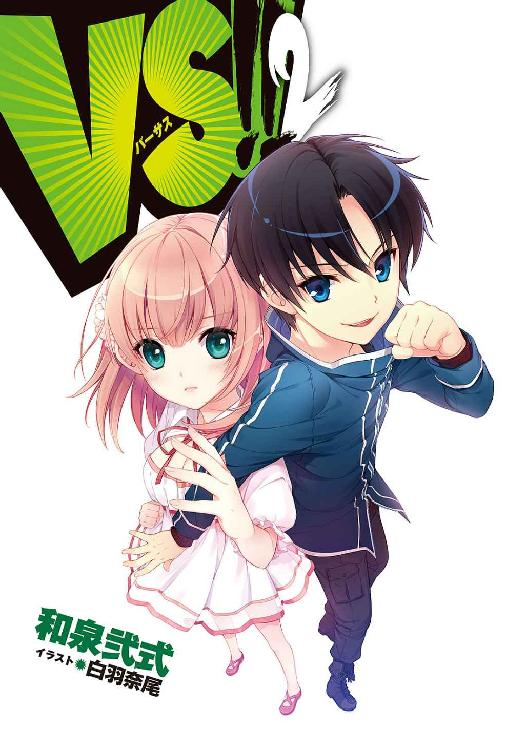
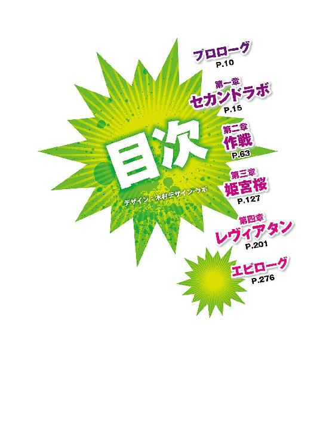
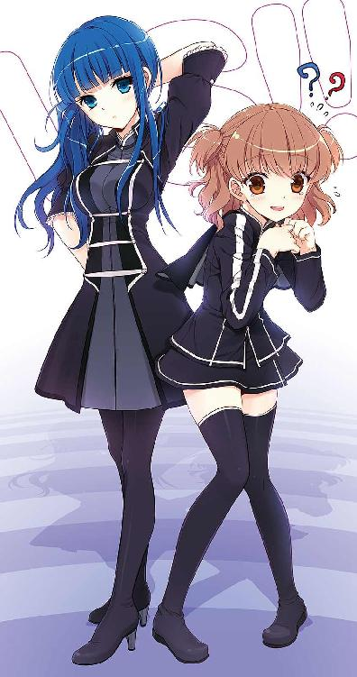
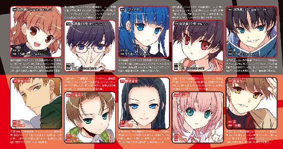
本書（電子版）に掲載されているコンテンツ（ソフトウェア／プログラム／データ／情報を含む）の著作権およびその他の権利は、すべて株式会社ＫＡＤＯＫＡＷＡおよび正当な権利を有する第三者に帰属しています。
法律の定めがある場合または権利者の明示的な承諾がある場合を除き、これらのコンテンツを複製・転載、改変・編集、翻案・翻訳、放送・出版、公衆送信（送信可能化を含む）・再配信、販売・頒布、貸与等に使用することはできません。
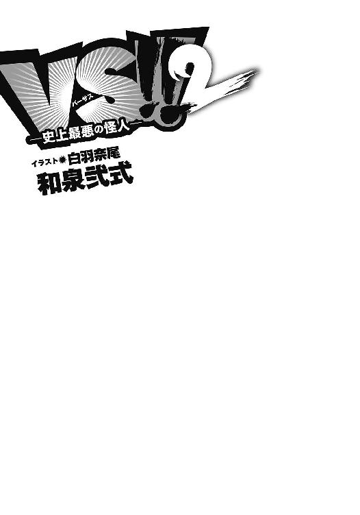
プロローグ
『戦闘員22号から全戦闘員へ！』
蛮声の轟く街中で、ジジの涼やかな声だけがクリアに響く。
『怪人が【エリクサー】を使用し、巨大化。生存者は速やかに基地に〈転移〉せよ。繰り返す。生存者は速やかに基地に〈転移〉せよ』
「ガアアアアアアアアアアアアアア!!」
ほぼ同時に怪人の咆哮が街に響き渡り、黒い異形の集団は動きを止めた。
豹をモデルとした今回の怪人──ブラッドレパードが徐々に巨大化していく。その体は、彼自身の血にまみれていた。憎悪で血走った瞳は巨大化してなお、彼を追いつめた五人の英雄に向けられている。
赤、青、黄、緑、桃色。【鎧】と呼ばれる機械装甲を纏った正義の味方たちは、ビルの高さまで巨大化した彼を前にしてもまるで怯む様子を見せない。怯んでいるのはむしろブラッドレパードのほうだった。戦闘開始から十分でエリクサーを服用することになるとは、出撃前の彼は思ってもみなかったはずだ。
「だから言ったじゃねえかっ......！」
戦闘員21号はビルの壁に拳を叩きつけた。苛立ちを抑えきれず、巨大化した怪人に向かって吼える。
「真っ向からいっても勝てねえんだよ！ わかってんのに............くそっ！」
──作戦なんて必要ない。
数日前、怪人はそう言いきった。策を弄するのは弱者がすることだと、鼻で笑った。
──奴らは俺が始末する。貴様らは時間でも稼いでいろ。
21号がいくら食い下がっても、ブラッドレパードは聞く耳を持たなかった。最後には「余計なことをすれば貴様たちを殺す」とまで脅され、どうすることもできなくなった。
「おい、ニーイチ！ 撤退するぞ！」
「ああ、今行く！」
仲間の呼びかけに応じ、21号はその場から離れた。
この後の展開は目に見えていた。怪人は死ぬ。いつものように、英雄たちの【巨大鎧】に打倒されるだろう。
戦闘員だけで英雄に立ち向かったあの死闘から、約二週間。再稼働したフラスコにより新たな戦闘員が創られ、１号から81号までの号数すべてが埋まった矢先の出撃だった。
戦闘員にも犠牲が出たはずだ。こうなることはわかっていたのに、結局21号にできたことは、以前と同じように英雄たちの注意を逸らし、窮地に陥っている仲間を援護することぐらいだった。
「ちくしょう......」
ビルの陰に隠れ、21号は叫ぶ。
「これじゃあ、何も変わらないじゃねえか！」
ジャバウォックに出会う前と、何も。
どうしようもない苛立ちを抱えたまま、21号は地下基地へ〈転移〉した。
†
円卓に座るドクター・パラケルススは、他十二人の幹部たちの視線を一身に受けていた。
アルスマグナ地下基地──第七階層。会議室の中はやや薄暗い。部屋の面積の大部分を占める円卓に、パラケルススを含む幹部たちが腰かけている。
怪人ブラッドレパードが消滅したという報告が入ってきたのが、今から数分前のことだ。英雄機関に怪人が倒され、ハズレのレコードスフィアを回収される。言ってしまえば、いつもどおりの結果だった。そして、いつもどおりの展開であれば、怪人の問題点が幹部たちによって話し合われ、検討結果と今回得られた戦闘データを基に新たな怪人が創りだされることになる。
しかし、会議の話題はパラケルススの思ってもみなかった方向に進もうとしていた。
「戦闘員は存続させる......そういう取り決めだったはずだけど？」
非難めいた視線を集めるパラケルススは、せめてもの反抗として、向かいに座る黒衣の老人を睨みつけた。
短く整えられた白い髪。感情の失せた顔貌にはしわが目立つ。その双眸は息苦しくなるほどおぞましい眼光を放ち、パラケルススのことをじっと見据えていた。
「確かにあのときはそう決めた。だが、今回の報告を聞く限り、やはり廃止の判断は正しかったと言わざるをえない。パラケルスス......二年以上も何もしなかったお前が、今さら我らの方針に口を出すのか」
「取り決めを守れと言っているんだよ。それに、前回の戦いのことで、戦闘員たちは基地中のホムンクルスに英雄視されている。そんな彼らを不当に扱えば、組織全体の士気に関わると思うけど？」
「その程度で士気を下げるような奴らは新しくすればいい。そのためのシステムだ」
こともなげに彼は言った。パラケルススは心が冷えていくのを感じる。
この男は、ホムンクルスたちを使い捨ての消耗品としてしか見ていない。いや、きっと怪人でさえも、彼にとっては同じ消耗品だった。
「お前が何を言おうと、奴らの価値は変わらない」
静かに、しかし明確な悪意を持って、悪の組織の首領──プロフェッサー・ヘルメスは言った。
「戦闘員は必要ない」
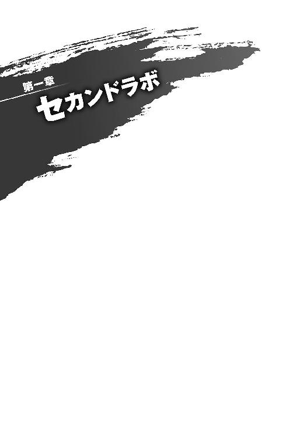
１
アルスマグナ地下基地──第五階層。
作戦室に足を踏み入れた戦闘員21号は、室内の重たい空気にため息を吐いた。
「ったく、どいつもこいつも暗い顔しやがって」
数日前に比べ、やや閑散とした部屋。集まった皆の顔は暗く、昨日の戦いについて語り合う声にも勢いはない。出撃前の熱気が噓のようだった。
「鏡を見たほうがいいですよ、ニーイチ」
隣に立つ戦闘員22号──愛称でジジと呼ばれる少女が、表情を変えずに言った。ジャケットからスカート、ニーソックスまで、全体的に黒で統一された制服を着た彼女は、静かに21号の横に立っている。耳を隠す程度の短い黒髪が、作戦室の粗末な照明の下でも艶を見せていた。
「ただでさえ、ルーキーたちにはショックが大きいんです。悪の英雄のあなたまで暗い顔をしていたら、皆が不安になります」
「............」
それはもうやめてくれと目で訴えてみたが、彼女は涼しい顔のままだ。からかわれている。
何がどうしてそうなったのか、組織のホムンクルスたちには先日の死闘における二十三名の【生存者】、特に戦闘員21号の活躍が、あることないこと吹き込まれているようだった。ダークヒーローなんていう妙なあだ名までつけられる始末だ。知り合いの受付嬢なんかは、基地内で会うたびにそれをネタにしてからかってくる。いい迷惑だった。
「ったく、どこのどいつだ？ 馬鹿みたいな肩書きを言いふらしやがったのは」
「だいたい予想はつきますけど」
「なに？」
さらりと告げたジジの視線を追うと、十メートルほど向こうに、シワ一つない制服を身に着けた戦闘員がいた。初の敗北を喫したルーキーたちと話している。遠くから見ても、偉そうに喋っているのがわかった。
その戦闘員は、ルーキーたちの肩を叩き檄励を飛ばした後、にこやかな笑顔を振りまきながら21号たちのところへ歩み寄ってきた。
「調子はどうだ、ダークヒーロー！」
戦闘員66号──ロクロクが満面の笑みで言った。
「......おい。その呼び名、考えたのお前か？」
「フフフフフ。バレてしまっては仕方がない」
ロクロクは眼鏡をくいっと上げ、得意げに笑った。
「素晴らしいだろう。お前のために寝ずに考えたんだぞ？」
「お前もう永遠に寝てろよ」
「やれやれ......わかってないな、ニーイチ。お前は俺たちの旗なんだ」
「旗？」
「そうだとも。いいか、ルーキーばかりの今の俺たちが団結するためには、勝利の象徴となる旗のような存在が必要だ。そして、もっともらしい旗の呼び名もな」
「それがニーイチであり、ダークヒーローだということですか？」
ジジが訊くと、ロクロクは満足げに頷いた。
「そのとおりだ。そして、俺の地道な広報活動の甲斐あって、今や基地内で【ダークヒーロー・ニーイチ】を知らない者はいない！ ここだけの話、グッズ販売も検討中だ。ハッハッハ！」
「お前な......そのあだ名のせいで、ブラッドレパードからは目をつけられたんだぞ」
「なに。そうなのか？」
「そーだよ。戦闘員ごときが調子に乗るなってな」
作戦を否定されたのはあだ名だけが原因ではないだろうが、怪人に「貴様がダークヒーローか？」と問われたときの気持ちをロクロクに教えてやりたかった。
「なるほど......怪人を軽視しているように思われるということか......。よし、怪人には別の呼び名をつけよう。ダークメシアとかどうだ」
「そういう問題じゃねえ」
21号はため息を吐いた。もはや呆れるしかない。
「......ん？」
背後からなにやら慌ただしい足音が聞こえてきて、21号は反射的に振り返った。
開いたままの作戦室の扉。その向こうから、戦闘員用の黒い制服を身に着けた一人の少女が走ってくる。サイドで結った髪をぴょんぴょん跳ねさせながら、まるで、ボールに飛びつく犬のように──
「ししょ───っ！」
「うわっ!?」
どーん、と少女のタックルを腹に受け、たまらず21号は床に倒れ込んだ。作戦室中の注目が二人に集まる。
21号を押し倒した彼女は、ばっと顔を上げたかと思うと、キラキラした目で顔を覗き込んできた。
「おはようございます、師匠！ お元気でしたか!?」
「いててて......」
打ちつけた腰をさすると、彼女はさぁっと顔を青ざめさせた。
「師匠......!? まさかお怪我を......！」
「お前がぶつかってきたんだろーが！」
「なんと。これは失礼しました！」
少女が勢いよく立ち上がる。手を差し伸べてきたので掴んでみたが、「んーっ！」と両手で引っ張り上げようとする彼女には期待できそうになかったので、21号は自力で立ち上がることにした。
「す、すみません！」
服に付いたホコリを払う21号に、彼女は大きく頭を下げた。
「ししょーの姿を見たら、つい嬉しくなってしまって......ええ、飛びついてしまった次第ですっ！」
「誰が師匠だ」
「ししょーはししょーですよぅ！」
ぶんぶんと両拳を振って力説する彼女。見上げてくるその瞳は輝いていて、21号は正視できない。今日何度目になるのか、深くため息を吐く。
いったいどうして、こんな少女が──。
「隊長」
ジジが言った。
「皆が待っています」
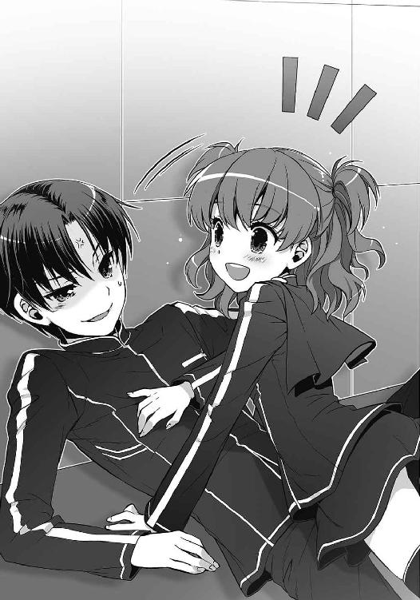
その指摘に、少女は「あ」と声を上げた。飛びついたときに落とした灰色のファイルを慌てて拾い上げると、「すみませんすみません」と皆に謝りながら作戦室の奥へ進んでいく。
軽やかな足取りで階段を上がり壇上に立った彼女は、
「皆さんお待たせしました！ 作戦会議を始めます！」
元気いっぱいに、そう声を張り上げた。
２
隊長。
それは、代々１号の名を持つ戦闘員が引き継いできた役割だ。生まれも戦績も関係ない。とにかく１号というナンバーを与えられた者が、残り八十人の戦闘員を率いることになる。
21号にとって、隊長が変わったのは四度目だ。しかし、これまでに見てきた隊長の中でも、今壇上に立っている彼女ほど隊長らしくない隊長はいなかった。仲間たちの間では、すでに「隊長ちゃん」と呼ばれているぐらいだ。威厳も何もあったものじゃない。
「皆さん、昨日はおつかれ様でした。まず、被害についてお伝えしますね」
壇上の『隊長ちゃん』は、そう前置きをして手元の紙を読み上げ始めた。
レコードスフィア未回収。怪人消滅。戦闘員については、消滅者が二十名に、再生槽行きの重傷者が七名。被害そのものはいつもに比べれば小さい。特に、経験を積んだ【生存者】が消滅しなかったのは不幸中の幸いといえた。
「皆さん！ 今回は負けてしまいました。ええ、それはもう完敗でした。ですが次こそは！ 次こそは英雄たちを倒しましょうっ！」
隊長ちゃんが、花咲くような笑顔で声を張り上げる。彼女の明るさが作戦室の淀んだ空気をいくらか振り払い、仲間たちの目にも心なしか戦意が戻ってきていた。
戦闘員は戦うために生まれてきた。たとえ英雄たちに敵わなくとも、敗北のたびに気を落とそうと、戦闘員は生まれてきた使命を胸に、命が尽きるまで戦い続ける。そういう風に創られた。
「......だからって、このまま突き進んでも泥沼だ」
問題は怪人だ。
戦闘員だけでも英雄たちを追いつめることはできた。そこに怪人が加われば勝てるはずだと21号は確信している。しかし、策を弄することを否定するのは、おそらくブラッドレパードに限ったことではないだろう。
怪人たちは己の力に誇りを持っている。自分は今までの怪人とは違う、自分なら勝てると、そう信じているのだ。そんな奴が戦闘員の考えた作戦を素直に実行してくれるとは思えなかった。
21号は苛立ちを隠せなかった。
【英雄機関】を──正義の味方を倒すと、そう決めた。諦めていた勝利に再び手を伸ばすことを決意した。なのに、その先に待っていたのは、変わらない過程と結末だ。仲間であるはずの怪人と反目し、結局何もできないまま、わかりきった敗北へ突き進むことになった。
「そして、ビッグニュースです！」
作戦室に響き渡った隊長ちゃんの大きな声が、21号に思考を中断させた。
「次の怪人は、なんと！ ドクター・パラケルスス様が創った怪人になる予定です！」
作戦室がざわめいた。
21号も目を見開き、得意げに胸を張っている隊長ちゃんを凝視する。
思いだすのは彼女のことだ。誇り溢れる怪人たちの中にあって、ただ一人例外であった赤い髪の少女。21号を救い、そして死んでしまった史上最強の怪人。
ジャバウォック。
鼓動が速くなる。もし彼女と一緒に英雄と戦えていれば──そう思ったことがないと言えば噓になる。英雄たちに破れたとはいえ、五つの鎧を前に単騎で渡り合った彼女は間違いなく史上最強だった。
そのジャバウォックを創り出したドクター・パラケルススの新怪人。もし隊長ちゃんの話が本当なら、勝ちの目が見えてくるかもしれない。
「出現予測はまだ立っていませんが、おそらく二週間から一ヶ月ぐらいで次のレコードスフィアが現れるはずです。そのとき、我々はセカンドラボの戦闘員として、パラケルスス様の新怪人と出撃することになりますっ！」
「......セカンドラボ？」
隊長ちゃんの発した単語に、21号は眉をひそめた。
初めて聞く言葉だ。ジジやロクロクを見ると、二人も不思議そうな顔をしていた。他の戦闘員たちも互いに顔を見合わせている。
「あっ、すみません！ えっと、実は今朝、幹部の方々から通知がありまして......」
隊長は慌てた様子でファイルをめくり、たどたどしい口調でそれを読み上げた。
「『フラスコ、およびフラスコにより生成される戦闘員は、ドクター・パラケルスス率いる第二部隊──セカンドラボの所有物とする』」
３
会議が終わると、21号は「医務室に行ってくる」とジジに告げて、さっさと作戦室をあとにした。
一人で向かった先は、第三階層にある医務室だ。
「おい、ミクニ！」
ドアを蹴破るようにして21号が部屋に乗り込むと、デスクに向かって筆を走らせていた白衣の女性がびくりと肩を跳ねさせた。ブロンドの髪を無造作に縛り、黒縁の眼鏡をかけている。白衣の下には胸元の開いた赤いシャツ。彼女はこの部屋に常駐している女医師だ。
「......驚いた。ノックぐらいしなさい」
呆れた風にそう言って、彼女──ミクニは、椅子を回転させて21号に向き直った。
悪の組織アルスマグナには、事務部や諜報部、研究部といった、いくつかの部署が存在する。ミクニが所属している医療部もその一つであり、21号やジジは英雄との戦いの後にいつも彼女の治療を受けていた。
だが、今ここに来たのは治療や診察を受けるためではない。21号は彼女に詰め寄った。
「セカンドラボってどういうことだよ」
「ああ、その話。どういうことも何も、１号から説明があっただろう？」
「隊長ちゃんから聞かされたのは、出撃部隊がファーストラボとセカンドラボの二つに分けられるってことと、オレらがお前の所有物になったってことだけだ。何がどうしてそうなったのか、まさか知らねえとは言わねえよな──ドクター・パラケルスス」
その名を呼ぶと、ミクニは楽しげに口元を歪ませた。医療部のホムンクルスとして暮らしている彼女こそ、怪人や戦闘員たちを創り出した天才科学者ドクター・パラケルススその人だ。
「......ま、隠していても仕方がないか。プロフェッサー・ヘルメスを知ってる？」
「そりゃ、知ってるも何もうちの首領じゃねえか」
突然出された名前に鼻白む。
プロフェッサー・ヘルメス。悪の組織アルスマグナの首領の名だ。21号は姿を見たことがなかったが、名前ぐらいは当然知っている。
「首領の彼を筆頭に、他の幹部全員が『戦闘員を廃止にする』と言い出した」
「なっ」
21号は息を飲んだ。
「ちょっと待て。廃止は取りやめになったはずだろ!?」
「前回のは取りやめた。だから、また今回あらためて廃止にする。そういう言い分らしい」
ミクニがため息を吐く。噓を言っているようには見えなかった。
21号たち【戦闘員】は一度組織に見限られ、廃止を言い渡されている。その廃止を取りやめさせるために、21号たちは戦闘員だけで英雄と戦い、五人のうち一人を戦闘不能にさせるという成果を示した。多くの仲間の犠牲と引き換えに、これからも【戦闘員】として戦うことを許された──はずだった。
「ふざけんな、あれからまだ二週間しか経ってねえぞ！ それでまた廃止だっていうのかよ!?」
「落ち着きなさい。とりあえず、今はまだ廃止にはならない」
眼鏡を通して見つめてくる彼女の瞳は、いつになく真剣だった。
「正直、プロフェッサー・ヘルメスがあそこまで廃止にこだわるとは思っていなかった。たぶん彼は『戦闘員は必要ない』という主張を曲げはしないだろう。あの会議のときだけ廃止をやり過ごしても、また同じことを言い出すのは目に見えていた。だから──」
ミクニは言った。
「私は、もう一つ部隊をつくらせろと進言した。それが第二部隊。あんたたち戦闘員と、私の怪人で構成される出撃部隊だよ」
「それって......ようするに、二軍ってことかよ？」
21号は苦い顔をする。ミクニがくすりと笑った。
「建前としては、競争関係をつくって切磋琢磨しましょうってことになってる。１号から聞いただろう？ 二つの部隊が交互に出撃するだけで、基本的にやることは今までと変わらないよ。次回の出撃はうちだ。ファーストラボは次の怪人を創るのに時間がかかるらしくてね」
そしてミクニは、困ったように笑った。
「ごめんね、21号」
「な、なんだよいきなり」
「あんたたちのこと、他の幹部には私が認めさせてやるなんて言っておいて......私は『私が所有する』というやり方でしか君たちを守れなかった」
「ミクニ......」
治療をサボって彼女に怒られたことは何度もあるが、謝られたのは初めてだった。どうにも調子が狂う。
わずかな沈黙の後、21号は言った。
「倒せばいいんだな？」
「え？」
「英雄五人。あいつら全員をオレたちが倒せば、他の幹部たちはもう文句を言えなくなる。そうだろ？」
「それはそうだけど......」
戸惑う彼女に21号は不敵な笑みを見せ、言った。
「思い知らせてやるよ、他の幹部に。『戦闘員は必要です』って、お前に土下座させてやる」
「......いいね、魅力的な提案だ。けど、やれるの？」
「やるんだよ。あいつらを倒すのはオレたちだ」
ミクニは信じられないものでも見るかのように目を瞬かせ、やがて噴き出した。
「くくくく......ははは、ふははははははははは！ まさか、あんたの口からそんな言葉を聞くとはね！」
「うるせえな。文句があるなら、お前の創ったあいつに言いやがれ」
「ごめんごめん、怒らないでよ」
口では謝りながらも、ミクニはまだくすくすと笑っている。21号は照れくささをごまかすように言った。
「だいたい、ドクター・パラケルススの怪人と一緒に戦えるっていうんなら、オレたちのほうが有利じゃねえか。聞いたぜ、新しい怪人を創ってるんだろ？」
「ああ、それなら......」
ミクニは目尻を拭いながら、21号の背後を指差した。その意図がわからず、21号はとりあえず振り返り──息を止めた。
いつの間に現れたのか、閉じられたドアの前に清楚なドレスを着た一人の少女が立っていた。
冷たい瞳が、剣先を思わせる視線を21号に突きつけている。磨かれたように白い肌。流れるような青い髪は、右肩の上で結われ、ドレスの胸元にかかっている。目にしただけで斬りつけられるような、鋭い美貌と佇まいだった。
「ちょうどさっき完成したところなんだ」
ミクニが言った。
「紹介しよう。私の創った第三の怪人──レヴィアタンだ」
レヴィアタンと呼ばれた彼女の姿に、けれど21号は、別の少女を重ねて見ていた。
「ジャバウォック......？」
21号を救った、史上最強の怪人。雰囲気はまるで違う。しかし、目の前にいる青い髪の少女には、どことなく彼女の面影があった。
すると彼女は不機嫌そうに鼻を鳴らした。豊かな胸を張り、冷たい声で言い放つ。
「ジャバウォック？ ああ......英雄に負けた出来損ないのこと？」
一瞬。
21号は、彼女が何を言ったのかわからなかった。
「そんなのと私を比べないでくれるかしら。不愉快よ」
「っ......てめえ！」
「ちょっとちょっと、いきなり喧嘩しないでくれ！」
ミクニの制止で、21号は怪人に掴みかかろうとした自分をなんとか抑えた。ジャバウォックを馬鹿にされたというのに抑えなければならなかった。
レヴィアタンは21号を値踏みするように見てから、ミクニに言った。
「パラケルスス。これが貴女の言っていた21号なの？」
「そう、彼が話題のダークヒーロー、戦闘員21号だよ」
「......」
怪人の眼差しが冷たかった。
「......ふん。ダークヒーローだかなんだか知らないけど、結局はただの戦闘員でしょう？ 英雄を倒すなんて大きな口をよく叩けるわね。自分たちだけじゃ何もできないくせに」
「なんだと？」
「ちょっと、レヴィアタン。君と彼は仲間なんだ。もう少し仲よくしなさい」
ミクニがたしなめる。
けれどレヴィアタンは、手を腰に当て、自信満々に言い放った。
「戦闘員なんて必要ないわ」
まるで、幹部たちの言葉を繰り返すかのように。
「私は史上最強だもの。助けなんていらない。英雄たちはこの私が......レヴィアタンが倒してみせる」
（こいつ......!!）
どうしてこんな奴とジャバウォックを重ねて見てしまったのか。
まるで違う。似ているのは容姿だけだ。
21号は何も言わず、彼女のことをただじっと睨みつけていた。
４
ゆっくりと上昇していくエレベーターの中で、21号は深いため息を吐いた。
地下基地から地上へ出るには、原則として、第一階層にあるエントランスで退出登録をしていかなければならない。いつにもまして、今日はその決まりが憂鬱だった。
受付にいるのが彼女でないことを祈っていたが、エレベーターが停止し、ドアが開いた瞬間に、無駄な願いだったと悟った。
エントランスの壁際に設置された半円形のカウンター。そこに、彼女はいた。いつものように黒いドレスに身を包み、こちらには気づいていないかのように、ぴくりともせず座っている。透き通るように白い肌となめらかな栗色の髪。いつ見ても人形のような奴だった。
21号は再び深いため息を吐いて、カウンターまで歩み寄る。話しかけるまで、彼女の表情は変わらなかった。
「おい」
声をかけると、彼女がにこりと微笑んだ。
「あら、ダークヒーロー」
「......」
「どうかしましたか、ダークヒーロー？」
「......退出登録を頼む」
「かしこまりました」
彼女は手元にある端末のキーを叩く。と、途中でぴたりと手を止めた。21号のことをじっと見つめたかと思うと、不意に言った。
「どうかなさいましたか？」
「なにがだよ」
「あなたにしては、元気がないように見えます」
今の短いやり取りの中で何を感じ取ったのだろうか。
否定するのは簡単だったが、今の21号は虚勢を張るのも億劫だった。
「お前にそう見えてるんだったら、そうなんだろ。なんだよ、心配してくれてんのか？」
「いえ。しめしめ......と思いまして」
「お前な......」
「ああ、そういえば昨日は負けたのでしたね。その様子だと、無謀な戦いにようやく懲りたのですか？」
挑発するような口調は少しわざとらしかった。
今、エントランスにいるのは二人だけだ。いつも一緒にいるジジも、騒がしいロクロクも、最近懐いてきた隊長ちゃんもいない。他の誰かがいる前では、彼女も『無謀な戦い』なんて言葉は口にしなかっただろう。
「やっぱり無謀だと思うか？」
「わたくしはそう思います」
澄まし顔で答える受付嬢に、21号は笑って言った。
「オレもそう思ってたぜ。ついこの前までな」
「......そうですか」
彼女は短くそう言って、再びキーを叩いた。
「退出登録が終わりました。おつかれ様です。さあ、私の前から消えてください」
変わらない彼女の態度に苦笑して、21号は早速〈転移〉を開始する。
全身を包んでいく闇が視界を覆う直前、カウンターの向こうで彼女が何かを呟いた気がしたが、21号には聞き取ることができなかった。
５
目の前を覆っていた闇が急速に晴れていく。
21号は、マンションの一室に立っていた。
見慣れたリビング。ジジと一緒に暮らしているその部屋は、相変わらず殺風景の一言に尽きる。目立つものといえば、質素なデザインの二段ベッドに、背の低いテーブル、床に置かれたクッション、十九型の液晶テレビぐらい。蛍光灯で照らされた室内はなおさら無機質で、生活するために最低限必要な機能のみを備えている、という印象だ。
ただ、以前に比べて色づいたところもあった。目に映るものではなく、鼻をひくつかせる香ばしい匂いだ。
「おかえりなさい、ニーイチ」
キッチンで鍋を掻き回していたジジが言った。ライトイエローのＴシャツの上に黒いエプロンを着けている。
「体は大丈夫でしたか？」
「ああ」
ジジはミクニの正体を知らない。21号が医務室に行ったのも、単に診察を受けにいったものと思っているはずだ。以前の戦いでの後遺症のおかげか、医務室に行ったこと自体はあまり疑われていないようだった。
「ま、とりあえず変わりないってよ」
「......」
鍋を掻き回す手を止めて、ジジがちらりと疑いの眼差しを向けてくる。
「噓じゃない。本当だって！」
半ば呆れながらそう言うと、彼女はようやく信じてくれたのか、「もうすぐできますから待っていてください」と告げてスープの味見を始めた。
前回の戦いの後、ジジは料理を始めた。
本来、ホムンクルスである21号たちは必要量のサプリメントを飲んでいれば生命を維持できる。だから、怪人ジャバウォックが部屋に押しかけてきたあの日まで、二人は料理というものを口にしたことがなかった。
今だってサプリメントだけで生活することはできる。それでもジジが料理を始めたのは、きっとあの日々を忘れないためだった。彼女は彼女なりに、ジャバウォックのいた証を残したいのだろう。
テレビのバラエティ番組を観ながら待っていると、しばらくしてジジが食卓に夕食を並べ始めた。今日のメニューは、デミグラスソースの掛かったハンバーグ、サラダに、ライスとスープだ。
「どうぞ」
ジジの合図と同時に、21号はハンバーグにかじりついた。
「どうですか？」
「うまいうまい」
「............」
彼女は表情を変えず、けれど何かをごまかすようにスプーンを手に取った。スープを一口すすってから、彼女は言う。
「それにしても、妙なことになりましたね」
「セカンドラボのことか？」
「はい。私には戦力をただ二分しただけのように見えます。幹部たちは何を考えているのでしょうか」
「さあな」
21号はとぼけることにした。戦闘員がまた廃止にされかかったなんてことは言わないほうがいいだろう。それに、セカンドラボができた経緯を話せば、どこでそれを聞いたのかを疑われる。ミクニからは彼女の正体を黙っておくように頼まれていた。
ふと、ジジがぴたりと手を止めた。
「〈通信〉です」
と、彼女は短く告げて目を閉じる。
しばらくして顔を上げた彼女に21号は訊いた。
「誰からだ？」
「隊長です。〈全体通信〉を頼まれました。明日、朝から会議を開くそうです」
他の戦闘員に比べて、ジジは〈通信〉のためのネットワークを構築する速度が異常に早い。全戦闘員への〈通信〉さえも簡単にこなしてしまうことから、以前の隊長からも連絡役をよく頼まれていた。
「ですから、明日はちゃんと起きてください」
「自信ないけどな。で、どうしたんだよ急に？」
「新しい怪人を紹介するそうです」
すぐに彼女のことを思い出した。ジャバウォックに似ていて、けれど決定的に異なる青い髪の少女を。
「名前はレヴィアタンだそうです。ドクター・パラケルススも強気な名前をつけたものですね」
「どういう意味だ？」
「本から得た知識ですが......伝説の中に同じ名前の怪物がいます。レヴィアタン、あるいはリヴァイアサン。海を支配する怪物で、神が創造した最強の生物でもあるそうです」
「最強の生物か。そりゃたしかに、よっぽどの自信がないとつけられないな」
「ええ」
ジジは微笑み、再び目を閉じた。間を置かず、彼女の〈全体通信〉が頭の中で聞こえ始める。
21号はレヴィアタンの冷たい眼差しを思い出していた。
戦闘員なんて必要ないと言い放った彼女が、素直に作戦に協力するとは思えない。だが、その彼女と協力さえできれば英雄たちを倒すこともできるはずだった。それなら、やることはもう決まっている。
レヴィアタンを手懐ければいい。
頭の中で響くジジの涼やかな声を聞きながら、21号はにやりと笑った。
６
作戦室に集まった戦闘員たちの視線が、壇上に立つ青い髪の少女に集中していた。21号もジジと並んで、新しい怪人のことを見つめていた。
「......似ていますね」
ジジの呟きに返事はしなかった。
壇上のレヴィアタンは不機嫌そうだった。腰に手を当て、壇の前に群がる戦闘員たちを見下すように立っている。昨日、去り際にミクニは「よく言い聞かせておくから」と言っていたが、心を入れ替えたようには見えない。
「と、いうわけでしてっ！」
同じく壇上にいる隊長ちゃんが元気よく声を張り上げた。
「彼女が、我らセカンドラボの怪人！ レヴィアタンさんです！」
レヴィアタンの美貌ゆえか、あるいは、あのドクター・パラケルススの創った怪人だからなのか、作戦室中の戦闘員たちが拍手喝采した。史上最強の怪人と囃し立て、ピュウピュウと指笛を鳴らしている。
「ではでは！ せっかくなので、レヴィアタンさんにご挨拶をしてもらいましょう！」
満面の笑顔で言う隊長ちゃん。これまでの隊長たちが事務的に紹介するだけだったことに比べると、新たな試みとも言えた。
だが、この場に限って言えば、その試みは逆効果も甚だしかった。
「貴方たちは必要ない。英雄とは私だけで戦うわ」
ぴしり、と。
空気が凍りつき、隊長ちゃんは笑顔のまま固まった。
壇上付近にいた戦闘員、【生存者】の一人が、ひきつった声を出した。
「ちょ、ちょっと待て。どういう意味だ。俺たちが必要ないって？」
「言葉どおりの意味よ。戦闘員なんて、どうせいてもいなくても変わらないでしょ？ 役に立たないなら、目の前をうろつかれるだけ目障りよ」
「なんだとっ......！」
ざわめきが広がる。
あまりにも居丈高な彼女の態度に、不満の声が次々と上がった。21号は頭を抱えたくなった。
「やっぱりこうなったか......」
作戦室中から上がる文句の声。壇上には、澄まし顔のレヴィアタンと、おろおろする隊長ちゃん。
事態を収めるべく21号が足を踏み出そうとしたそのとき、朗々とした声が作戦室に響き渡った。
「落ち着くんだ、みんな!!」
皆が振り向いた先には、戦闘員66号──ロクロクが立っていた。彼はやれやれと首を振りながら、作戦室の前方へ歩いていく。
「まったく、こんなところで仲間割れをしてどうするんだ。英雄に勝つためには、怪人と俺たちが信頼し合うことが不可欠なんだぞ」
やがて彼は、壇の前に立ち止まり怪人を見上げた。
「レヴィアタン、君の言い分はもっともだ。そうとも、俺たちは弱い。だが、それでもできることはある。どんなに小さいことでも、たとえこの命を捨てることになったとしても、俺たちは喜んで君の駒となろう。俺たちは君の力を信じる。だから君も俺たちの力を信じてくれ」
「嫌」
「......」
即答だった。
ロクロクは、ふっと笑い、
「俺たちは君を信じる」
拒絶をなかったことにした。
「だから、君も、俺たちを！ 信じてくれ!!」
「嫌と言っているでしょう。だいたい、貴方たちのようなザコの何を信じろというの？」
レヴィアタンが冷笑した。
「教えてくれる？ 怪人がいなければ何もできない、無力な戦闘員さん？」
「............ふ。ふふふふふ......」
ロクロクが不気味に笑い出す。
隣に立つジジが言った。
「嫌な予感がします」
「同感だな」
21号が頷くのと、ロクロクが怒鳴ったのは同時だった。
「決闘だ！ そこまで言うなら、英雄機関を追いつめた俺たちの力！ 思い知らせてやる!!」
７
「............おかしい」
訓練場の中央でロクロクが呟いた。彼の向かいには、レヴィアタンが腰に手を当てて立っている。
「どうしてこうなった......」
憂鬱そうに周りを見渡すロクロク。目が合った21号は、遠く離れた壁際から手を振ってやった。
「頑張れよー」
「黙れ、薄情者！」
ぽつんと立っているロクロクが悲鳴を上げる。他の戦闘員たちからも「頑張れロクロク先輩！」「見せつけてやれ！」と声援が上がっているが、誰一人ロクロクに加勢しようという者はいない。静観の構えだった。
「それで？ どうするの、戦闘員さん？」
レヴィアタンが見下しきった視線を彼に向ける。
基本的に、ロクロクは挑発に弱い。案の定というべきか、拳を握り、意を決したように叫んだ。
「......変身!!」
ロクロクの足下から漆黒の闇が噴出し、瞬く間に彼を包み込んだ。闇は炎のようにゆらめくと、やがて宙へ溶けていく。
その名残が失せたとき、そこには【戦闘員】の姿があった。流線型の頭部に、インナースーツを纏ったような紫黒色の体。灰色の外骨格が各所を覆い、なかでも右手を覆うそれは爪のように鋭く尖っている。
「か、覚悟しろ！」
変身を終えたロクロクは、右手の爪を怪人に突きつけた。レヴィアタンは凍るような瞳を見せたまま、つまらなそうに、呟いた。
「変身」
訓練場に風が吹く。レヴィアタンの周囲から、どこからともなく幾筋もの水流が現れた。際限なく引き出されていく水が彼女を中心に旋回し、渦となってその姿を包み隠していく。球状に渦巻くその表面には白波が立ち、回転に伴う轟音は唸り声のようだった。
レヴィアタンを覆う渦が、唐突に弾けた。大量の水はどこに消えたのか、微かな水飛沫だけが宙に散る。
風がやみ、静かになった訓練場に、【怪人】は立っていた。
21号は息を飲んだ。隣のジジも、言葉を失くして変身した彼女を見つめていた。
そこにいる青い髪の少女は、ヒトのようでいて、けれど確かに人外だった。頭の両脇から伸びる二本の角。肢体を覆う鱗は一つ一つがサファイアのように澄んでいて、異形であるはずのレヴィアタンの美しさを際立たせている。両手には光を反射するダイヤの如き爪。そして、怪人の背には竜を連想させる大きな翼が生えていた。
21号はその姿を見て、ジャバウォックのことを思い出さずにはいられなかった。頭では違うとわかっていても、訓練場の中央でつまらなさそうに立つレヴィアタンの姿は、変身したジャバウォックのそれにひどく似ていた。
「身のほどを教えてあげる。安心なさい、殺しはしないから」
レヴィアタンは、立ち尽くしていたロクロクに冷ややかな声を浴びせた。
「......なめるなっ！」
真っ先に仕掛けたのはやはりロクロクだった。
まっすぐに突っ込んで行くその様は、猪突猛進の一言だ。そんなロクロクに対し、レヴィアタンは静かに腕を振りかぶり、迎撃態勢をとった。
それは、あの日見た光景の再現だった。
数週間前の出来事が、21号の脳裏をよぎる。戦闘本能を持て余したジャバウォックと、誇りに燃えるロクロクの決闘。圧倒的な力を見せつけて、挑発的に笑った赤い髪の少女。
まるで泡が浮き、弾けるように、記憶の中にあるジャバウォックの姿が浮かんでは消えていく。
過ぎ去ったあの日と同じく、怪人と戦闘員の決着は一瞬でついた。
力強く振られたレヴィアタンの腕がロクロクに直撃する──ことはなく、
「きゃうっ！」
ロクロクの捨て身のタックルが、史上最強の怪人に炸裂した。
吹き飛ばされるレヴィアタン。
数メートル先の石畳に落下し、ごろごろごろごろーと、勢いのまま景気よく転がっていく。
ようやく回転が止まると、作戦室は静寂に包まれた。
「............お？」
目を回して倒れている怪人を見て、ロクロクがぽかんとした声を上げた。
「おお......？」
きょろきょろと周囲を見渡すロクロク。
21号は言葉が出なかった。目の前の光景を受け止められない。ジジも、隊長ちゃんも、訓練場にいるすべての戦闘員たちが驚愕に目を見開き、倒れたレヴィアタンのことを見つめていた。
その反応を見て、ロクロクはこの大番狂わせが夢でないことを確信したらしい。
「お......おおお......！」
両腕を高々と掲げ、勝利の雄叫びを上げた。
「うおおおおおおおおおおおおおおおおおおおおっ!! 勝った！ 勝ったぞ!! どうだ見たかレヴィアタン！ これが俺たち戦闘員の力だ！ ハーッハッハッハッハ!! ハーッハッハッハッハ!!」
喜び猛るロクロクは、まだ重大な事実に気づいていない。
「......ちょっと待て、冗談だろ？」
21号は、呆然としたまま呟いた。
「怪人が──戦闘員に負けた？」
８
ミクニの医務室でレヴィアタンが目を覚ましたのは、それから三十分ほどしてからだった。
ベッドに横になった彼女はヒト型に戻っている。まだ覚醒しきれていない様子で、ぼんやりとした瞳を天井に向けていた。
「やっと起きやがったか」
呆れ気味に21号が声を掛けると、レヴィアタンが不思議そうな表情を浮かべる。
「ん......」
彼女は上体を起こすと、こめかみに指を添えた。
「な、に......？」
「覚えてねえのかよ。お前、三十分ぐらいぶっ倒れてたんだぜ」
「三十分？ 何を馬鹿な──」
彼女は鼻で笑おうとして、失敗した。唐突に記憶が蘇ってきたらしい。
「～～～～～～っ!?」
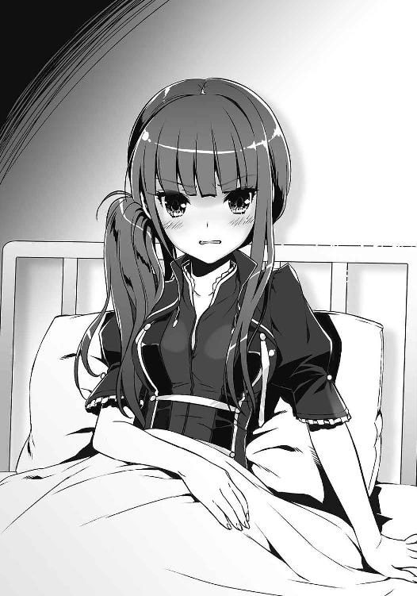
絶句するレヴィアタン。彼女にしてみれば悪い夢としか思えないだろう。
だが、正直言って、いい気味だった。
「わ、私......！」
「『貴方たちのようなザコの何を信じろというの？』」
「っ!!」
「『身のほどを教えてあげる』」
「う......」
「『安心なさい、殺しはしないから』」
「うぅっ......！」
「はっ、一発でＫＯされといてよく言えたもんだ──うわ、枕投んな」
「うるさい!! だ、だいたい、どうして貴方がここにいるの！」
「そりゃ、気絶したお前をここに運んでやったのはオレだからな。みんなをごまかすの、結構面倒だったんだぜ？」
21号はこの部屋にいるもう一人の人物に向き直った。
「さあ。こいつが目を覚ましたら話を聞かせてくれるんだろ？」
白衣を羽織ったミクニ──ドクター・パラケルススを睨みつける。レヴィアタンの創造主である彼女は、目を閉じ、静かに息を吐いた。
「わかっている。慌てなくてもちゃんと話すよ」
「パラケルスス......？ どういうこと？ どうして私が！」
レヴィアタンの叫び声は徐々にしぼんでいった。
「せ、せ、戦闘員なんかに......その......えっと......」
「戦闘員に負ける怪人なんてありえねえだろ」
「っ......少しは気を使いなさいよ!!」
「うるせえ！ あんだけ大口叩いといてこのざまじゃ、庇いようがねえんだよ！」
「こ、このっ......もう、出てけ！ 出ていけ、貴様っ！」
「いって！」
突き飛ばされて少しよろめいた。もう一度身を乗り出してきた彼女の手を咄嗟に掴み、揉み合いになる。
「くっ、放しなさい！」
「てめえ怪人だろうが！ 振り払ってみろよ！」
「とりあえず、結論から言う」
ミクニの声が、レヴィアタンとの間に割って入った。彼女はやれやれとブロンドの髪を掻き上げ、簡潔に告げた。
「レヴィアタンの創造に失敗した」
──失敗。
掴んでいた怪人の手から急速に力が抜けていくのを21号は感じた。
「第七階層に、怪人を創造するための特製フラスコがある。レヴィアタンもそれで創ったんだけど......そのフラスコに細工がされていたんだ」
「細工？ 気がつかなかったのかよ？」
「もちろん警戒していたさ。セカンドラボが発足してからの生成過程では、細工をされる余地はなかった。それは断言できる」
「ってことは......」
ミクニは感情を押し殺すように言った。
「細工をされたのは、部隊の二分化が決まる前......もっと言えば、レヴィアタンの創造が始まったそのときからだ。つまり、会議で戦闘員の廃止が取り上げられたことも、そこで私がセカンドラボについて進言することも、創造の失敗も、すべて誰かの思いどおりというわけさ」
「──噓よ」
冷たい声が虚ろに響いた。
レヴィアタンが、呆然とミクニを見つめていた。
「何かの間違いでしょう、パラケルスス？ 失敗だなんて......そんな......今日は少し調子が悪かっただけで......」
ミクニは静かにかぶりを振った。
「ごめん。私のせいだ、レヴィアタン。あんたは何も悪くない」
「どうして謝るの!? 失敗なんて......わ、私は......」
彼女は胸の前で手を握り、叫んだ。
「私は怪人なの！ 貴方が創った史上最強の怪人！ 強くないなら......力がないなら、なんの価値もないじゃない!!」
彼女の叫びに、しかしミクニは応えなかった。黙ったままレヴィアタンを見つめるその瞳は、自らが生みだした怪人を哀れむようでもあった。
ドクター・パラケルススである彼女が何を考えているのか、21号にはわからない。ただ、戦闘員にすら負ける無力な怪人の気持ちは、なんとなくわかる気がした。
「おい、ミクニ」
気がついたときには口を挟んでいた。ミクニとレヴィアタンの視線が彼に向く。
「たとえば、だ。こいつが何かの拍子にめちゃくちゃ強くなるってことはないのか？ いくら失敗作っていっても、こいつだって怪人だ。もしかしたら力が眠っているだけかもしれないだろ？」
「率直に言って、望みは薄いと思う。怪人とか戦闘員は、自身のポテンシャルを生まれたそのときから引き出せるようになっている。基本的には、眠っている力なんて存在しない」
「理屈はいらねえよ。ゼロじゃないんだな？ なら、上出来じゃねえか」
「ちょっと、まさかあんた......怪人を鍛える気？」
21号はにやりと笑い、椅子から立ち上がった。
「今がどうあれ、怪人が強くなくちゃいけないっていうんなら、強くなるしかないじゃねえか。だから、レヴィアタン」
きょとんとする怪人に向かって、21号は言った。
「オレがお前を強くしてやるよ」
彼女が目を見開き、驚きをあらわにする。その狼狽えぶりを21号は愉快げに眺めていた。
９
英雄機関本部──戦士待機室。
姫宮桜は、目の前で繰り広げられている姉弟の争いをぼんやりと眺めていた。
「あれあれー？ どうしたの、隼人。もしかしてそれで本気なわけ？」
「こっの......ちょ、待った待った！ ハメ技じゃん、それ！」
争いといっても、いつもの喧嘩に比べれば随分と大人しいものだ。
二人が手にしているのは携帯ゲーム機。待機室のテーブルに向かい合って座る二人は、格闘ゲームというものをしているようで、二人してかちゃかちゃと忙しなくボタンを押していた。桜には画面が見えず、何が起こっているのかよくわからない。見えていたところで何もわからなかったかもしれないが、ただ、隼人が追いつめられているらしい、ということだけは察しがついた。
「あ！」
「はい、ＫＯ～。私の勝ちね」
青葉が高らかに勝利宣言をして、携帯ゲーム機をテーブルに置いた。対する隼人は画面を睨んだまま、わなわなと肩を震わせている。
「ふっざけんな！ どうして姉貴がガー不とか永久コンボなんて知ってるんだよ！ 今のなし！ もう一回！」
「だーめ。何度やっても結果変わらないし。出直してきなさい」
青葉は腕時計で時刻を確認した。シンプルなデザインの水色の時計は彼女によく似合っていた。
「あいつらまだ戻ってこないわけ？ あーあ、暇すぎて死にそう。レコードスフィアでも落ちてくればいいのに」
「あ、青葉さん......それはちょっと......」
「いーじゃない、誰かの上に落ちるわけでもないんだし？」
「姉貴さあ......それを俺の前で言う？」
ゲームの練習をしながら隼人が言った。青葉はそんな抗議もどこ吹く風といった様子だが、どことなく、隼人のことを観察しているような気もした。もしかしたら彼女は、弟の反応を見たかったのかもしれない。
ある日、突然空から降ってくるレコードスフィア。穏やかな輝きを放つその球体は、あらゆる情報・思念の集合体である【生命の書】から漏れ出た情報の結晶だ。桜たちの所属する【英雄機関】は、その情報を悪用されないために悪の組織【アルスマグナ】と戦っている。
スフィアは街中に落下することが多く、その衝撃も相当なものだが、スフィアによって人が傷ついたことはほとんどない。
桜はその理由を機関の研究者に訊ねたことがある。諸説あるらしいが、中でも有力なのが「生命の書が人類の情報・思念を基礎としているため」というものだった。生命の書が人を基盤としているからこそ、そこからこぼれ落ちるスフィアは人のいる場所に引き寄せられ、その一方で人類への危害は避けられる、という理屈らしい。だが、それだけでは説明できない事象も多く、まだまだスフィアについての謎は多いようだった。
この前の戦いもそんな例外の一つと言えた。戦闘員たちの策にはまり、隼人がレコードスフィアの衝撃に巻き込まれた。
幸い命に別状はなく、今では怪我も全快したが、全てが元どおりというわけにはいかなかったことを桜は知っていた。青葉や他の皆も気がついているだろう。
「ごめん、遅くなった」
スライドしたドアから待機室に入ってきたのは、リーダーである緋崎秀一と、黄瀬大地だった。大男と形容できる黄瀬が後ろに立っていると、比較的背の高い緋崎も小さく見えた。
緋崎は入り口付近で立ち止まり、黄瀬は室内にあるソファにのそりと腰を下ろした。
「それじゃあ早速。まずは【鎧】について。黄瀬、頼む」
「ああ......」
ソファに座る黄瀬がゆっくりと喋り出した。
「研究開発部門の責任者と、話をしてきた。鎧の負荷を軽減するのは難しいらしいが、装着時間を短縮することは不可能ではないらしい......」
以前の戦いで戦闘員たちを相手に苦戦したのは、鎧装着時の隙を突かれたことが原因だ。先日の出撃では現場から離れたところで装着することで対処したが、それはあくまで一時しのぎにすぎない。
鎧の欠点をカバーするために、研究開発部門では召喚方法について議論があったらしい。そして今日、その検討結果が上がってきた。
「『不可能ではない』というのはどういうことですか？」
桜の質問に、黄瀬が淡々と答える。
「時間が掛かるという意味だ......。システムを大幅に改変する必要がある。責任者の見立てでは、完成までに半年以上掛かるとのことだ。それまでは、今の召喚方法で戦うしかない......」
「半年ですか......」
「そんなに心配しなくても大丈夫だ」
緋崎の落ち着いた声が、重くなり掛けた待機室の空気をやわらげた。
「現場から離れたところで鎧を装着する。何も難しいことはないさ」
そう言って、彼は笑った。
リーダーである緋崎はいつだって冷静で、なにより強い。桜は彼が弱音を吐いたところを見たことがなかった。きっとこれからも見ることはないだろう。そんな確信がある。
「それに司令も色々考えてくれている。開発中だった支援システムが導入されることになった」
「支援システム？」
身を乗り出したのは隼人だった。
「どんなやつですか？」
「この後説明があるけど......黄瀬、ちょっといいか？ やっぱり先に確認しておくよ」
黄瀬が頷く。すると、緋崎は隼人の方を見た。
「隼人。お前、まだ戦えるか？」
「え？ な、なんですか急に」
「俺たちが気づいていないと思っているのか？ 一昨日の出撃、お前はいつもより動きが鈍かった。理由は、この前の戦いだな」
目を逸らしうつむいた隼人を、緋崎はまっすぐ見据える。
「あの戦いで、俺たちのしていることがどれだけ危険かをあらためて理解したはずだ。一歩間違えれば、死んでいたかもしれない。だから、戦うことが怖くなっても仕方がないと俺は思う」
「............」
「その上でもう一度訊く。正直に答えてくれ。隼人、お前はまだ戦えるか？」
しばらく沈黙があった。
隼人がゆっくりと顔を上げる。今度は、目を逸らさなかった。
「戦うよ。俺だって正義の味方なんだ。だから、戦う。戦いたい。......ダメかな？」
真剣な返答だった。緋崎がふっと表情を緩ませる。
「ダメなわけないさ。わかった、お前の意志は司令にもちゃんと伝えておく。よかったな、青葉」
「なんで私に言うのよ」
「なんでって......心配してたじゃないか」
「してない」
語気を強めてそう言った青葉に、桜は思わず笑ってしまった。青葉にジト目で睨まれ、慌てて口を手で覆う。
「で、隼人？ あんた、そんな大口叩いたんならわかってるわよね？」
「わかってる。次は負けない。絶対に」
「そ。なら、許してあげる」
「なんだよそれ」隼人が笑った。「姉貴に許されなきゃいけないの？」
うらやましいな、と桜は思った。喧嘩が絶えないけれど、二人はやっぱりいい姉弟だ。
けれど桜は、そんな彼女たちがどうして正義の味方として戦っているのかを知らなかった。
命の危険があるのに、それでも逃げずに戦うその理由。青葉や隼人でだけでなく、緋崎や黄瀬の想いも、桜は聞いたことがない。きっと彼らも、桜が戦っている理由を知らないだろう。
二年間一緒に戦ってきて、お互いの過去について話したことはあまりない。知っているのは、ここにいる誰もが親を失くしているということだけだ。それを知っているからこそ、互いに詮索するようなことはしなかった。
──みんなはどうして戦っているのだろう？
そんな疑問を胸に抱きながら、桜は草薙姉弟の微笑ましいやりとりを見つめていた。
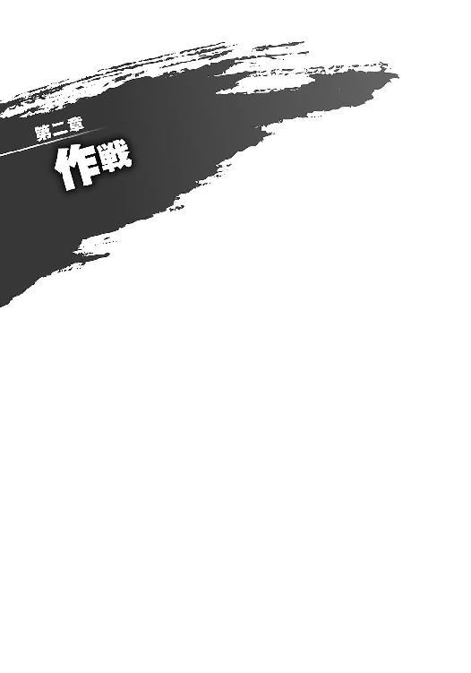
１
怪人の特訓──一日目。
実際のところ、レヴィアタンが約束どおり訓練場に現れたこと自体、21号にとっては驚きだった。作戦会議終了後にジジを連れて訓練場に行くと、すでに彼女は待っていたのだ。
清楚なドレスに身を包んだ彼女は、突き刺すような視線を21号に向けて、
「パラケルススの命令よ。私は来るつもりなんてなかったんだから」
不愉快そうに言った。照れ隠しではなさそうだと、21号は苦笑する。
「ま、来るんだったらなんでもいい。とりあえず、新しい怪人ができるまでにちょっとは強くなってもらうぜ」
今朝の作戦会議で、ドクター・パラケルススが新たな怪人の創造に着手していることが伝えられた。今や戦闘員たちの間は新怪人の話題で持ち切りだ。まるでレヴィアタンなんて怪人は最初からいなかったかのように。そうなることがわかっていたからか、レヴィアタンは今日の会議に姿を現さなかった。
「......いつできるの？」
レヴィアタンが顔を背けたまま、ぽつりと言った。
「二週間から一ヶ月ぐらいって聞いたけどな」
「そう......」
「気にしてても始まんねえよ。とにかく特訓だ。強くなるんだろ？」
彼女は疑わしげに目を細め、21号を睨んだ。『必要ない』『いてもいなくても変わらない』『目障り』などと、あれほど嘲った【戦闘員】が自分を助けようとすることが不可解なのだろう。
「貴方、いったい何を企んでいるわけ？」
「何も企んでなんかねえって。疑り深い奴だな。少しは信じろよ」
『それで、何を企んでいるんですか？』
『こいつを手懐ける』
ジジからの〈通信〉に21号は即答した。いまだ疑わしげに睨んでくるレヴィアタンには笑みを見せながら。
『次の怪人がオレたちに協力的って保証はないしな。だったら、今のうちに恩を売っておいて、こいつが強くなる可能性に賭けておくのも悪くないだろ？』
『そういうことですか。昨日話を聞いたときは、また適当なことを言っているのかと思いましたけど』
『ひでえな』
『日頃の行いを考えてください。それと、理由は本当にそれだけですか？』
『ん？』
『ジャバウォックに似ている彼女を死なせたくないのでは？』
そんなことはないと21号が答えるよりも先に、彼女はレヴィアタンにも聞こえるよう声を発した。
「ニーイチ。特訓といっても、いったい何をするつもりでいるんですか？」
「え？ ああ......」
21号は戸惑いを隠し、怪人に言った。
「レヴィアタン。まずは変身してお前の力を見せてみろよ。昨日は一瞬で気絶しちまったし、何ができるのかを見ておかねえとな」
「......貴方に従うのは癪ね」
「どうしろっつーんだ」
力以前の問題だ。先行きが不安になる。
「変身してください、レヴィアタン。お願いします」
ジジが慎ましく頭を下げると、レヴィアタンはやむなしといった様子で「変身」と呟いた。
空間から引き出されるように現れた流水が、瞬く間に彼女を包み込む。水は轟音と共に回転し、やがて宝石が弾けるように飛び散った。
青い鱗に覆われた体、背に生えた翼、戦闘態と化したレヴィアタンが胸を張って立っていた。その勇壮かつ壮麗な佇まいに、21号は感嘆の声を漏らした。
「変身は派手なのになあ......」
「うるさい!!」
怒る怪人をなだめ、21号は彼女を観察した。やはり目につくのは、背に生えた大きな翼だ。
「まずは翼だな。英雄の【鎧】も空は飛べないし、そいつを持ってるのは結構なアドバンテージだぜ。ちょっと飛んでみろよ」
「......仕方ないわね」
おだてたのが功を奏したのか、レヴィアタンが翼を動かし始めた。はじめはゆっくりと、次第に激しく翼を羽ばたかせる。青い翼が風を打ち、訓練場の塵が宙に舞う。
「......ねえ」
翼を大きく羽ばたかせながら、地に足のついたままの怪人が言った。
「これは、どうすれば飛べるの？」
「は？」
彼女の翼が空気を掻き回す音だけが周囲に響く。
しばらくして、ジジが口を開いた。
「......飛べないのですか？」
「飛べないのだけど」
「あっさり認めんなよ！ 飾りか、その翼は！」
「ち、違うわよ！ 馬鹿にしないで！」
その後もむきになって羽ばたくレヴィアタンだったが、彼女の体は一ミリも持ち上がらなかった。やがて翼の動きが緩慢になり、ついには力を失う。鮮やかな鱗に覆われた翼が、だらしなくへたれた。
「はあ、はあ」
「バテやがった......」
「まだ慣れていないだけかもしれません。次に行きましょう、ニーイチ」
ジジが場を取りなす。
「ジャバウォックは炎を吐くことができました。もしかしたら、あなたにも同じようなことができるのでは？」
すると、彼女は息切れをごまかしながら得意げに胸を張った。
「できるに決まっているでしょう。......何、その目は」
「いや、なんでも」
期待できないという気持ちが顔に出ていたらしい。21号は降参するよう両手を広げ、ごまかした。
「ふん。見てなさい」
息を整えると、彼女は右手を二人の前に差し出した。次の瞬間、掌の真上に水が出現した。宙を流れる水は彼女の掌の上で球を成し、しゅるしゅると微かな音を立てて回転している。
「水か......」
「驚くのは早いわ」
レヴィアタンはそう言うと、回転する水をふわりと上に放り投げた。水は球体のまま、天井近くまで浮き上がって静止する。
彼女が指揮をするように指を振った。
水が宙を踊った。はじめは球体のまま、かと思うとリボンのように細く伸び、今度はベールのように薄く広がる。彼女の生み出した水が速度を変え、形を変え、訓練場を縦横無尽、自由自在に飛び回る。
「すごいですね」
「これぐらいは当然よ。私は怪人なんだから」
ジジが素直に感心し、レヴィアタンは憮然としながらも少し得意げだった。
ただ、21号には気になることがあった。
「それ、どうやって攻撃するんだ？」
「え？」
レヴィアタンが沈黙した。空中の水も彼女の頭上でぴたりと静止する。
彼女はきょろきょろと目を泳がし、
「こう......とか」
21号を指差した。宙に静止していた水が、勢いよく21号に降りかかる。
「冷てっ！ 何しやがる！」
冷水を浴びせられた21号が悲鳴を上げ──はたと息を止めた。
「おい、今ので精一杯か？」
レヴィアタンが気まずそうに目を逸らした。やればやるほど自信がはぎ取られていくらしく、最初の尊大さは影を潜めつつあった。
「......ジジ、どう思う？」
「今の段階ではまだわかりません」
とても気を使った一言だった。
「ですが、せっかく翼があるのですから、空を飛べるようにはなったほうがいいと思います。水の能力は......もう少し量と速度、つまり出力が上がれば十分武器になるのではないかと」
「ま、そんなとこか」
自分の考えとジジの分析がさほど離れていないことを確認して、21号は頷いた。
「レヴィアタン、とりあえずはその二つと組み手を中心にやってくぞ。覚悟はいいな？」
「......勝手にすれば」
顔を背けたレヴィアタンは、けれど拒絶しなかった。不愉快でも、言われていることが正しいことは彼女もわかっているのだろう。
訓練が再開された。
空を飛ぶために、レヴィアタンの翼がゆっくりと動き出す。
２
結局、その日レヴィアタンの体が宙に浮くことはなかった。
続いて行った組み手も結果は散々なものだった。ジジが組み伏せること二十五回、21号が転ばせること四十回。ロクロクへの敗北が不運ではなく必然だったことを証明するかのような、見事な負けっぷりだった。
石畳の上にレヴィアタンが倒れている。掛けるべき言葉も見当たらず、21号はとりあえず自身の変身を解いた。どうしたものかとジジに目を向けると、彼女もどうしましょうとこちらを見ていた。
（さすがに想定外だ......）
21号はがしがしと頭を掻いた。
飛べない翼に水鉄砲。単純な身体能力も戦闘員以下ときている。
史上最強どころの話ではない。彼女は間違いなく、史上最弱の怪人だった。
「......今日はここまでだな」
レヴィアタンの肩が小さく震えた。彼女は手をついて立ち上がろうとするが、体が言うことをきかないようだった。
特訓を開始してから、すでに七時間が経っている。ローテーションで戦っている21号とジジはともかく、レヴィアタンの消耗は相当なものであるはずだ。
「ったく......」
悪態を吐き、21号はレヴィアタンの横に屈んだ。
「レヴィアタン、変身を解け」
「......嫌」
「いいから解け。少し休んだら再開だ」
レヴィアタンは逡巡したが、やがて変身を解除した。地面に伏したままだからか、身に着けているドレスも少しくたびれて見える。
彼女の気が緩んだ隙に、
「よっと」
「ひゃっ!?」
21号は両腕で彼女を抱え、立ち上がった。彼女の体は思っていたよりもずっと軽かった。
「ちょっと、何するの！ 下ろして！」
「医務室に連れてくんだよ」
「そんなこと頼んでない！」
生意気に言うが、レヴィアタンは手を上げるのも億劫なほど消耗しているようだった。
「はっ、そんな調子じゃ今日は終わりにするしかねえな」
「だ、騙したわね！」
腕の中で抗議する彼女を無視して、21号はジジに言う。
「つーわけで、オレはこいつを連れてくから。ジジは先に帰っててくれよ」
「......」
「ジジ？」
「......わかりました。おつかれ様です」
彼女は踵を返して訓練場の出口へ歩き出した。21号が呆気にとられているうちに訓練場を出て行ってしまう。
「な、なんだ......？」
「下ろして！ 下ろしなさいってば！」
「だあ！ うるせえな、お前は！」
腕の中のレヴィアタンを怒鳴りつけ、21号も訓練場を出る。ジジは先に行ってしまったようで、姿が見当たらなかった。
レヴィアタンの文句を黙殺しながら第五階層の廊下を歩く。途中すれ違った戦闘員たちが、抱えられた怪人に興味深そうな視線を投げ、そのたびにレヴィアタンが赤面していた。恥ずかしさの限界を超えたのか、うつむき、眠ってしまったのではないかと思うほど静かになった。
言葉を交わすことがないまま、21号はおんぼろのエレベーターに乗り込む。塞がった手のかわりに足を使ってボタンを押すと、エレベーターはガコンと振動し、上昇を開始した。
密室となったエレベーター。
微かな機械音だけが聞こえる、その小さな箱の中で、
「............ねえ」
レヴィアタンが、独り言のように呟いた。
「私、強くなれるの......？」
それは、昨日までの彼女からは想像もできないような、弱々しい声だった。
戦闘員への敗北。それが一度だけであれば、まだ弁解の余地があった。調子が悪かったから、生まれて初めての変身だったから、戦闘員相手で油断をしたから......彼女もきっと、心のどこかでそう思っていた。信じていたかったはずだ。
しかし、今日の特訓でそんな希望は打ち砕かれた。怪人としてのプライドは、さぞかし大きな音を立てて崩れ落ちたことだろう。
エレベーターが停止し、ドアが開く。第三階層。医療部のフロアだ。
「......今の、忘れて」
レヴィアタンが掠れた声で言った。
21号はフロアに足を踏み出し、口を開く。
今から言うことは苦し紛れの慰めで、無責任な励ましだった。21号にもわかっている。ミクニの言っていたとおり、レヴィアタンが強くなる望みは薄いのだろう。ましてや英雄を倒せる力となると絶望的だ。だが、言うべきだ。苦し紛れでも無責任でも、言うべきだ。彼女の絶望を知って、それでもなお笑ってやらなくてはならない。
21号は、そんなジャバウォックに救われたのだから。
「なれる」
彼は言った。腕の中の彼女に向けて、できる限り自信に満ちた声で。
「お前は強くなれるよ。そんなに不安だっていうんなら、オレが保証してやってもいいぜ」
「............何よ、それ」
レヴィアタンが呆れたように言った。事実、呆れているのだろう。21号は彼女の顔を見ることができず、黙々と歩を進める。
ミクニの医務室の前まで来たとき、レヴィアタンが拗ねたように言った。
「戦闘員のくせに......」
21号はドアを足でノックし、ミクニの返事を待たずに開けた。
３
「おかえりなさい、ニーイチ。レヴィアタンは大丈夫でしたか？」
マンションの部屋に戻ると、ジジがテーブルの前でテレビのニュースを観ていた。
「ああ。単純な疲労だってよ」
エレベーターでのやり取りは黙っておくことにした。レヴィアタンから忘れてと言われた以上、胸に留めておくのがよいだろう。
21号はジジと同じようにテーブルの前に座り、訊いた。
「そういや、さっきなんで一人で帰ったんだ？」
ジジが不思議そうに首を傾げた。
「先に帰っててくれと言ったのはニーイチです」
「けど、エレベーターまで一緒でもよかっただろ？」
「......いえ......特に理由があったわけでは......」
目を伏せた彼女は、ごまかしているというよりも、困惑しているように見えた。本当に、なんとなく先に帰っただけなのかもしれない。
「夕食をつくります」
取り繕うようにそう言って、ジジはキッチンに向かった。
黒いエプロンを身に着け、手際よく調理を進めていく。食材を切り、味つけをして、鍋を使って炒め始める姿は手慣れたものだ。今日の夕食はなんだろうか。
数十分後、思い出したようにジジが言った。
「気になっていたのですが......ミクニ先生は、怪人の治療をしたことがあるのですか？」
「え？ ああ、それは......」
どう言い訳しようかと頭を巡らせたとき、ちょうどよくピンポーン、とインターホンが鳴った。
「誰でしょうか......？」
「ロクロクじゃねえか？ ああ、いいって。オレが行く」
話を切るのには好都合だと、21号は立ち上がって玄関に向かう。
ドアを開けると、玄関前には意外な奴が立っていた。
「......なによ」
「それはこっちのセリフだ」
レヴィアタンだった。地下基地で着ていたドレスではなく、シンプルな柄のＴシャツを着ている。なぜ彼女がここにいるのか、不思議に思いながら21号は訊いた。
「体はもう大丈夫なのかよ？」
「......一応」
彼女はさきほどの醜態を思い出したのか、赤くなった顔を背けて言った。
「と、とりあえず、挨拶にきたわ」
「は？」
「パラケルススの命令よ。『隣人には挨拶をしなさい』って......」
「隣人？ なんの話だよ？」
すると、レヴィアタンは右を指差した。
21号はドアから身を乗り出して、彼女の指差す先を確認する。そこには当然のように、隣の部屋、四○三号室があった。ロクロクの住む部屋は四○五号室。四○三は、空き部屋のはずだ。
「今日からそこに住むことになったわ」
「はあ!?」
突然のことに21号は驚愕した。
「どうしてそんなことになってんだよ？」
「わ、私だって貴方の隣なんか願い下げよ！ ほんと、どうして私が......」
彼女は真っ赤になって文句を言い、不意に言葉を止めた。キッチンから漂ってくる香ばしい匂いに鼻をひくつかせる。
「何、この匂い......？」
怪訝な表情を浮かべる彼女。すると、21号の背後から声がした。
「上がってください、レヴィアタン」
振り返ったそこには、黒エプロン姿のジジ。
口元に小さな笑みを浮かべ、彼女は言った。
「あなたさえよければ、夕食をごちそうします」
†
汝の隣人を愛せよ。
ヒトの教えにそんなものがあったなと、21号はぼんやりと思った。人間の教えに沿うなんてことは不本意極まりないが、腹を空かせた隣人、もとい怪人を夕食に招待することは、はたして愛を与えることになるのだろうか。
テーブルの前で料理を待つ21号は、部屋を見渡して不思議な気分になっていた。
戦闘員二人と、怪人一人。
顔ぶれだけを見れば、過ぎた日を思い出さなくもない。ただ、あのときと違い、エプロンを着けてキッチンに立っているのは戦闘員であり、怪人のほうは熱心に部屋の中を観察して回っていた。
バスルームの中を覗いていたレヴィアタンが戻ってくる。苦い顔をしていた。一通り見終わって満足したのか、足を揃えて21号の向かいに座った。
「それにしても狭い部屋」
「お前は一人で住むんだろ？ だったらいいじゃねえか」
レヴィアタンは21号を無視して、キッチンのほうに振り返った。
速く精確なリズムを刻む包丁の音が聞こえてくる。ジジが今つくっているのは、おそらくサラダだ。今日のメニューはそれと、もう一品。漂ってくる香りをかげば、それがなんなのかは想像がつく。
「......ちゃんとしたものが出てくるんでしょうね？」
レヴィアタンが疑わしげな視線を向けてきた。
「まあ、見てろよ。驚かせてやるからさ」
「どうして貴方が得意げなのよ」
しばらく待っていると、ジジが料理を持ってやってきた。
やっぱりか、と21号は笑いを堪える。
テーブルの上に並べられたのは、カレーライスとサラダだった。きっとジジは、これを食べさせたくて怪人を夕食に誘ったのだろう。
「どうぞ」
「............ふうん」
澄まし顔のレヴィアタンだが、目の前に出されたカレーライスに興味津々であることは容易に見て取れた。立ち上る芳醇な香りに、鼻をひくつかせ、喉を鳴らす。そそくさとスプーンを手に取ると、ちら、ちら、と21号とジジに目をやった。
さっさと食べない彼女に疑問を覚えたが、どうやら自分が最初に食べるのはがっついているようで嫌ということらしい。細かいことを気にする奴だと内心で笑いながら、21号はスプーンでカレーをすくい、かぶりついた。
それを見てようやくレヴィアタンもカレーを口にし、目を見開いた。
「おいしい......」
無意識の感想だったらしい。自分の口走った言葉に気づいた彼女は、ほんのり顔を赤らめ、咳払いをすると、うんうんと一人納得するように頷いた。
「そうね、まあ......味は及第点といったところかしら」
「ありがとうございます」
上から目線で採点したレヴィアタンだったが、再びカレーライスを口にすると夢中になって食べ始める。ついには21号がおかわりをしたのを見て「私ももらってあげてもいいけど」などと言い出したものだから、21号の我慢は限界を迎えた。
「きっきっき......！ くくく、ははははははははははははははっ!!」
「な、何がおかしいの！」
おかしくて仕方がなかった。笑いは止まらず、レヴィアタンの抗議に言い訳することもできない。ジジも穏やかに微笑んでいる。
なおも騒ぐレヴィアタンのせいで、久しぶりに賑やかな食卓となった。
４
あっという間に二週間が経過した。訓練場には、今日もレヴィアタンの翼の音が響き渡っている。
21号とジジが見守る中、レヴィアタンが青い鱗で覆われている翼を規則的にはためかせていた。ただがむしゃらに動かすのではなく、大きくしなやかなに風を捉える動きだ。翼によって下方に叩きつけられた風が、石畳の床を這って21号の足下に力強く吹きつけてくる。
直後、彼女の足がふわりと浮いた。ゆったりとした速度で五メートルほど上昇し、時折バランスを崩しながらもそのまま浮遊を続けている。
「おい、レヴィアタン！ 水の制御も一緒にやれよ！」
21号は彼女を見上げて叫んだ。
「わかってるわよ！ いちいち言わないで！」
レヴィアタンが水の生成を開始する。掌の上で水の塊が紡がれ、サッカーボール程度の大きさにまで膨らんだ。形状がぐにゃぐにゃとして安定しないのは、翼を動かすことに気を取られているからだろう。
翼と能力の制御をなんとか同時に行いながら、レヴィアタンは言った。
「どう？ これで文句ないでしょ？」
「あるに決まってんだろ！ 浮いてるだけじゃただの的と変わらねえぞ！ 飛べって！」
「簡単に言わないで！ 結構難しいんだから、これ！」
「難しくてもやるんだよ！ 動けないなら走り回ったほうがマシだろうが！」
「......わかったわよっ！ やればいいんでしょう、やれば!?」
半ばやけくそ気味に叫び、レヴィアタンはようやく飛行を開始した。生成した水の球体と共に、ふらふらと訓練場を移動していく。
「遅えよ、スピード上げろ！ 英雄に撃ち落とされてえのか!?」
21号はなおも檄を飛ばす。隣に立つジジが心配げに言った。
「少し厳しすぎませんか？」
「そんなこと言ってられるほど時間もねえよ。あいつだってそれぐらいわかってる」
レヴィアタンも口では文句を言うものの、21号たちの指摘には素直に従うようになってきた。以前に比べれば成長もしている。しかし、いつレコードスフィアが現れてもおかしくない今になっても、彼女はまだ戦えるレベルには至っていなかった。
「ししょー!!」
叫び声と共に、訓練場の扉が勢いよく開いた。
飛び込んできたのは隊長ちゃんだ。彼女は21号の姿を目に留めると一直線に駆けて来た。
「うわっ」
腰に抱きついてきた彼女を受けとめ、21号は力任せに引きはがす。
彼女にはレヴィアタンの特訓のことを話してある。隊長としての仕事があるため頻繁には顔を出せない彼女だが、時間を見つけては訓練場に様子を見に来てくれている。
「今日はロクロクさんを連れてきました！」
見ると、扉のところにロクロクがいた。ぴっしりとした制服を着た彼は、つかつかと21号とジジの前までやってくる。
「噂には聞いていたが......まさか本当のことだとは思わなかったぞ」
ロクロクが硬い声で言った。
「二人とも。これはどういうことだ？」
「質問の意味がわかりません」
彼の問いに、ジジが答える。すると、ロクロクは険しい顔をこちらに向けたまま、空中を指差した。そこには、羽ばたきながら怪訝な表情を浮かべるレヴィアタンがいた。
「どうしてこんな奴の世話をしているのかと訊いているんだ。こいつが俺たちに向かって言ったことを忘れたのか？ 『戦闘員なんて、どうせいてもいなくても変わらないわ。役に立たないなら、目の前をうろつかれるだけ目障りよ』なんてことを言ったんだぞこいつは！」
「根に持ってますね」
「そうしてフタを開けてみれば、あのザマだ。こんな奴のために、どうしてニーイチやジジが時間を使わなければならないんだ？」
「好き勝手言ってくれるじゃない」
レヴィアタンは制御していた水を飛散させると、やわらかく石畳の上に着地した。
「これはもともと21号が言い出したことよ。私は、仕方なく付き合ってあげてるの」
「ほら見ろ、ニーイチ。こんなことを言っているぞ！」
「事実よ。そうよね、21号？」
「お、落ち着けって！」
ロクロクとレヴィアタンに詰め寄られ、21号は仰け反った。
「これが落ち着いていられるか！」
ロクロクが声を荒げ、びしりとレヴィアタンを指差した。
「謝罪を要求する！」
「なっ」
「あそこまで俺たちのことを馬鹿にしたんだ。そのことを謝らずに21号たちを利用するのは、さすがに調子がよすぎるんじゃないか？」
「............ふん」
レヴィアタンが鼻で笑った。冷えきった目でロクロクを睨みつける。
「戦闘員のくせに偉そうに」
「ほぉ。その戦闘員に無様に負けたのはどこの誰だったかな？」
「たった一度勝ったぐらいで随分なはしゃぎようね」
「今から二度目をやってもいいんだぞ？」
睨み合う二人。隊長ちゃんが二人を交互に見てあわあわと狼狽えていた。
「よし」
21号は指を弾いた。
「お前ら勝負しろよ」
「ニーイチ？」ジジが怪訝そうに訊いてくる。「止めないのですか？」
「ここで止めても後に引きずるだけだしな。それに、そっちのほうが面白いだろ？」
21号は口元を吊り上げ、言った。
「こんなのはどうだ？ 相手を降参させるか、戦闘不能にさせたほうの勝ち。で、勝ったほうは負けたほうになんでも一つだけ命令できる」
言い終えると同時に、レヴィアタンが水を生成し、ロクロクが「変身！」と叫んだ。それが答えだった。
怪人レヴィアタン対戦闘員66号。第二ラウンドのゴングが高らかに鳴るのを、21号は聞いた気がした。
５
その日の夜。
いつものリビングには四人の戦闘員が集まっていた。21号、ジジ、隊長ちゃん。そして、にやけきった顔をしたロクロクだ。
キッチンからはひどく荒々しい包丁の音が聞こえてきていた。食材に怒りを叩きつけているかのようで、一撃一撃が無駄に重い。
以前と比べたら多少善戦したものの、勝負に勝ったのはロクロクだった。勝者の特権で彼がレヴィアタンに命じたのは、意外なことに今日の夕食当番だった。
「命令で謝らせても意味がないだろう？」
と、ロクロクは得意げに言っていたが、それはおそらく建前だ。本音のところは、怪人の手料理を食べたいだけだろう。
「それでは！ これより特別作戦会議を始めます！」
隊長ちゃんが元気に言った。料理を待っている間、次の出撃について話し合おうという彼女からの提案だった。
「あの、隊長」
ジジが控えめに挙手をする。
「はい、ジジさん！」
「次の出撃日時は決まったのですか？」
「あ、いえ、それはまだわかってないんですけど」
隊長ちゃんが、ちらりとキッチンのほうを盗み見た。
「うーむ、作戦か......」
ロクロクが顎に手を添えて言う。
「そういうことなら、ニーイチはどうなんだ？ 結局聞くことができなかったが、ブラッドレパードのときも本当は何か考えがあったんだろう？」
「まあな」
「なんと！」
隊長ちゃんがテーブルから身を乗り出した。
「ししょー!? それはいったいどのような!?」
「基本的には前回の作戦と変わらねえよ」
21号は言った。
「まともにやり合っても、オレたちに【鎧】は倒せない。だから勝つためには、生身のあいつらと戦う必要があるわけだ」
「ふむ......やはり鎧の召喚前に叩くということか？」
「ああ」
「いや、しかしだな」ロクロクが眉をしかめる。「この前の戦いで、奴らは鎧を装着してから現場に来たじゃないか」
彼の言うとおりだった。
ブラッドレパードとの戦いで、スフィアの出現地点に現れた英雄たちは、すでに鎧を身に着けていた。以前のように召喚前を狙われることを防ぐためだろう。
「鎧の召喚前を狙おうにも、戦いが始まるときにはもう召喚されている。その作戦は成立しないぞ」
「いや、そうでもないぜ」
21号はにやりとする。
「そもそも、奴らがオレたちの前で召喚をしていたのはどうしてだ？」
「......鎧の稼働制限、ですね」
これまで黙って聞いていたジジが口を挟んだ。
「そうだ。鎧の装着者には相当な負荷が掛かるって話だ。英雄たちだって、いつまでも鎧を使い続けられるわけじゃない。ってことは、戦いを長引かせることができれば──」
「いつかは限界が来ますっ！」
隊長ちゃんが叫んだ。
「ああ。そうなれば、奴らは装着を解除するしかない。無防備なヒーローのでき上がりだ」
21号の説明に、隊長ちゃんは目を輝かせ、ロクロクは腕組みをして思案している。
ジジが言った。
「問題は、どうやって戦いを長引かせるか。それと、解除に成功した後どうするかですね」
「......まあ、そうなんだよな」
後者の問題──生身の英雄に対してどう戦うかは、本来ならばこちらには怪人がいるのだからなんの問題もないはずだ。問題は、その怪人が戦闘員よりも弱いということだろう。
「ニーイチ。鎧の稼働制限がどの程度なのか、具体的にわかりますか？」
「いや」
21号はかぶりを振って否定した。
以前、人間のふりをして英雄機関に潜入したが、得ることができたのはほんのわずかな情報だけだ。戦いを長引かせると言っても、どのくらい時間を稼げばいいのかはわからない。
「けど、そこまで長くはないと思うぜ。時間に余裕があるんなら、普段から鎧を装着して来てるはずだしな」
「......とにかく、時間を稼げばいいんだな？」
そう呟いたのはロクロクだった。
「何か思いついたのか？」
「なに、難しい話じゃない。英雄たちと戦って、時間を稼げばいいんだ」
「あのな......それができたら苦労しねえよ」
「ちっちっち」
ロクロクが顔の前で指を振る。腹が立つ仕草だった。
「今のままでは無理だろうな。だから、数を増やすんだ」
「数？ 戦闘員のか？」
「ああ。俺たちなら、怪人ほどの生成コストはかからない。八十一人までというのがこれまでのルールだったが、それにこだわる必要はないだろう。ここはいっそ、パーッと千人ぐらい創ってしまおうではないか！」
ロクロクは得意げに指を立てて言う。
「なにより！ 俺たちには〈通信〉がある。連携もしやすい。ジジ、千人規模の〈全体通信〉ができたりしないか？」
「......不可能ではないと思います」
「おお！」
そこで、隊長ちゃんが手を挙げた。
「あの......それはたぶん、難しいと思うです......」
「なぜだ？」
ロクロクが鼻白む。隊長ちゃんは申し訳なさそうに答えた。
「皆さんを維持できなくなっちゃいます」
「い、維持？」
「地上にも地下基地にも、そんなに大勢のホムンクルスを収容できる場所は残ってないんです。配布されるサプリメントにもあまり余裕は......」
ロクロクは腕組みをして、何やらぶつぶつと呟き出した。
「なら、維持できるだけの数を......いや、半端な数を揃えても......くそぅ、いけると思ったんだが」
「貴方たち、何を馬鹿なことを話しているの？」
21号の傍らにエプロン姿のレヴィアタンが立っていた。手にはサラダボウルを持っている。
「『生身の英雄と戦う』？ 21号。貴方、それでいいの？」
「......何がだよ」
「わからないなら、いいわ」
レヴィアタンはつまらなさそうに鼻を鳴らした。
「英雄に勝つ方法を教えてあげる。私が史上最強の怪人になって、彼らを倒す。以上よ」
「いや、君に期待するぐらいなら次の怪人を待つぞ？」
ロクロクの意見に彼女は目を鋭くしたが、今日の組み手で敗北している以上、何も言い返せないようだった。かわりに彼女はサラダボウルをテーブルに叩きつけた。
「できたのか？」
「ええ」
彼女は一度キッチンに戻ると、すぐに料理を運んできた。
彼女がテーブルに並べたのは、カレーライスだった。やや水っぽいカレールゥの中に、ごろごろとしたジャガイモやニンジン、豚肉が入れられている。普通のカレーだ。
「ちょっと見栄え悪いけど、まあまあじゃねえか」
「そういう文句は口にしてから言ってくれる？」
料理のできに一抹の不安を覚えていたが、どうやら杞憂だったらしい。そういえば、ジャバウォックも言っていた。カレーなんて、誰がつくってもおいしくなるものだと。
「た、食べていいですか!?」
「食器はどこだ？」
「取ってきます」
ジジが立ち上がり、キッチンから全員分のスプーンとフォークを取ってきた。
食卓を囲む五人。さすがに一つのテーブルに五つの皿は狭すぎるため、21号とロクロクは皿を持って少し離れた場所で食べることにした。
スプーンを構え、意気揚々と五人は言った。
「いただきます！」
レヴィアタンの特製カレーに、皆が一斉にかぶりついた────
「........................................................................はっ」
21号は息を吹き返した。
頬に感じるのは、フローリングの冷たさだ。目の前には、ひっくり返った皿と、ぶちまけられたカレーライスがあった。
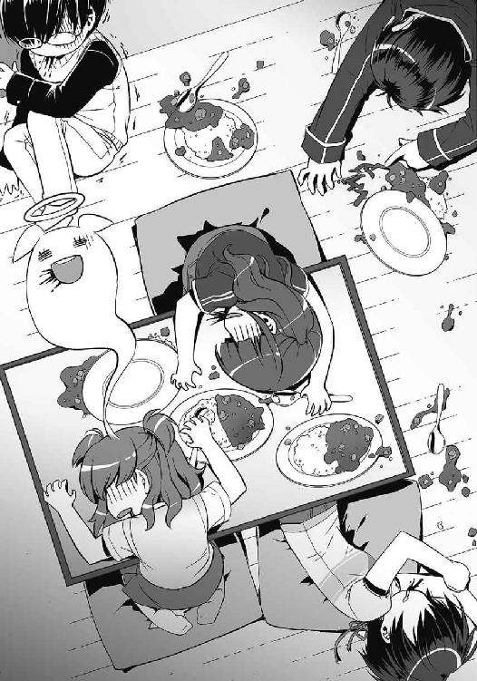
「いてててて......」
記憶が飛んでいる。何があったのかを思い出せない。ずきずきする頭を押さえながら、21号は床に手をつき、身を起こした。
「............へ？」
思わず間抜けな声が出た。
ジジが床に倒れていた。ぴくりともしない。
机に突っ伏すレヴィアタンと隊長ちゃん。ロクロクは壁にもたれて、びくんびくんとけいれんしていた。
「えっと......」
呆気に取られているうちに、四人の体が闇色の霧と化していく。室内の静寂に包まれながら、彼らは灰に戻るかのように、塵に返るかのように──。
「待て待て待て待て！ 冗談じゃねえぞ!?」
21号は慌てて皆を起こしに回った。
肩を揺らし、大声で呼び掛け、ロクロクの頬を叩き、なんとか皆の消滅を食い止める。
21号の腕の中で意識を取り戻したジジは、虚ろな目で呟いた。
「ニーイチ......私は、何を......」
「喋るな。じっとしてろ」
全員に息があることを確認して、21号はレヴィアタンを睨みつけた。
同じく一命を取り留めた彼女は、苦しげに呻いていた。ロクロクに負けた腹いせでわざと壊滅的な味につくったのではなく、ただ単純に料理を失敗しただけらしい。
「自分のつくった料理にまで負けんなよ......」
呻き続ける史上最弱の怪人に、21号は呆れることしかできなかった。
†
皆が動けるようになったのは、21号が危険物を廃棄した後のことだった。レヴィアタンは先に帰したため、部屋にはぐったりとした四人の戦闘員たちが残されていた。
「うう......ひどい目にあった......」
「てめえのせいだぞ、ロクロク」
「認める。全面的に認めるが、まさかあんなことになるとは思わんだろう......！」
「隊長、水です」
「ありがとう......ございます......」
いまだダメージの抜けきらない隊長ちゃんをジジが介抱していた。
「もしよければ、この後何かつくりますけれど」
「い、いえ！ 今日は基地に帰っておとなしくしてます！」
ジジの申し出を隊長ちゃんが慌てて断る。どうもトラウマになってしまったようだ。
彼女はコップの水を飲み干すと、立ち上がった。基地に〈転移〉するつもりらしい。
「なあ、隊長ちゃん。帰る前に教えてくれよ」
「なんですか、ししょー」
「次の出撃はいつだ？」
瞬間、彼女の顔が曇った。ジジやロクロクは気がついていたのか、驚かなかった。
さきほどジジに質問されたとき、彼女はキッチンに目をやった。おそらくレヴィアタンに聞かれることをためらったのだろう。
「四日後です。皆さんには明日伝えるつもりだったんですけど......」
「新しい怪人は間に合うのか？」
その問いに、隊長ちゃんは力なく首を横に振った。つまり、四日後の出撃は、今の戦力で戦わなければならないということだ。
21号はジジとロクロクに目を向けた。【生存者】である彼女たちは、動揺一つ見せずに21号のことを見つめていた。覚悟はとっくにできていると、そう言わんばかりに。
「隊長ちゃん」
21号は言った。
「次の戦い、戦闘員だけで出撃しないか？」
「え？」
「今のレヴィアタンを出しても英雄たちに瞬殺されるだけだ。それに、あいつはさっきの作戦には乗ってくれねえよ」
夕食の前、作戦を聞いたレヴィアタンは「それでいいの？」と問い掛けてきた。あの様子では協力は望めないだろう。だとすればなおさら、戦いから遠ざけておくべきだ。基地のホムンクルスやミクニに協力してもらえば、戦いが終わるまで隠し通すことは不可能ではない。
「決断は任せるぜ、隊長」
隊長ちゃんはしばらく考え込み、やがて力強く言った。
「わかりました。わたしたちだけで、戦いましょう」
「......そうこなくっちゃな」
思いだすのは、ブラッドレパードとの出撃だった。余計なことをするなと怪人に脅され、どういう結末を迎えるかわかっていたのに何もすることができなかったあの戦い。
だが、今回は違う。これはチャンスだ。
「さーて、せっかく怪人がいないんだ。せいぜい好き勝手やらせてもらおうじゃねえか！」
怪人に邪魔されることなく手を打てる。策を巡らせられる。どれほど絶望的な状況だろうと、何もできないでいるよりはずっとマシだ。
21号は不敵に笑った。その胸の内に、燃えるような決意を漲らせて。
６
青空に浮かんでいた小さな雲が、突如、穴を穿たれ霧散した。
光の塊が雲を貫き、地上に落下してくる。その様子を21号は高層ビルの上から見上げていた。隊長ちゃんと一緒にビルのへりに立ち、ゆるやかに吹く風を受けている。
決戦のときが来た。
今回、レコードスフィアの出現が予測された場所は、都内のＮ区。高層ビルの連なる近代的なオフィス街だ。街全体がデザインされたかのような統一感を持っていて、そのせいかどこか機械的な印象を受ける場所だった。
組織の予測どおり、スフィアは駅前の広場に落下した。広場中央の時計台が破壊され、周囲に破片が飛散する。
束の間の沈黙の後、悲鳴が広場を覆い尽くした。
人間たちが喚きながら逃げ始める。彼らは知っているのだ。スフィアが落ちてきた場所に、何がやってくるのかを。
人間たちの期待に応えるように、広場にいくつもの影が現れた。あらかじめ設置しておいた微生物──【ゲート】の生体反応を道しるべにして、アルスマグナの戦闘員が〈転移〉してくる。
人々の悲鳴によりいっそうの恐怖が混じるのを感じ、21号の口元に知らず笑みが浮かんだ。今すぐ変身して自分も人間たちを追い回したい衝動に駆られたが、我慢する。
手筈どおり、仲間の一人がレコードスフィアに近づいていくのが見えた。その手には、小さな筒状の装置。スフィアの判別などを行う機械だ。
「さーて、アタリかハズレか......」
今回立てた作戦には、ある前提条件がある。スフィアが『ハズレ』であることだ。滅多にないとはいえ、レコードスフィアに有益な情報が含まれている場合、つまり『アタリ』であった場合には、少し面倒なことになる。
スフィアの回収には二つの障壁がある。
一つは、情報が変質してしまうため〈転移〉で持ち運べないことだ。それゆえ、地上のルートから地下基地に搬送しなければならない。
そしてもう一つは、英雄機関がスフィアを検知する技術を保有していることだ。彼らは、スフィア出現後であれば、その位置を知ることができる。地下基地にスフィアを搬送しようにも、そのままでは基地へのルートが暴かれてしまうため、回収前に検知を逃れる処理を施す必要があった。
もしもスフィアが『アタリ』であったなら、場合によってはファーストラボから助力が来ることになっている。しかし、加勢に来る怪人はこちらの作戦など意に介さないだろう。やはり、少し面倒だ。
「............そういえば」
ふと疑問が芽生えた。
怪人の創造には幹部たちが深く関わっている。そして、セカンドラボにミクニを......ドクター・パラケルススを追いやったのも、同じく幹部たちだ。怪人創造においては間違いなく戦力となる彼女を手放しておいて、はたして他の幹部たちには何か策があるのだろうか？
「なあ、隊長ちゃん。ファーストラボがどんな怪人を創ってるか知ってるか？」
広場を見下ろしながら、21号は隊長ちゃんに問いかけた。
彼女なら事前に情報を知り得ているかもしれないと思ったのだが、しばらく待っても、返答はなかった。
不審に思って横を見ると、へりに腰かけた隊長ちゃんが、足をぶらぶらさせながら、ぼーっと地上を見下ろしていた。心ここにあらずといった様子だ。
21号は彼女の小さな耳に口を近づけ、怒鳴った。
「隊長!!」
「ひゃあ！」
隊長ちゃんの体がびくりと跳ねた。
「わっ、とっと......！」
バランスを崩して落ちかけたところを、21号が手を差し伸べて救ってやった。九死に一生を得た彼女は、21号の腕にしがみつき、肩を上下させている。
「し、死ぬかと思ったです......」
「危なかったな」
「ししょーのせいでしょーっ!?」
「隊長なのにぼーっとしてるからだ。作戦前だぜ？ 何か気になることでもあるのかよ？」
問いかけると、彼女はうつむいてしまった。
沈黙が下りる。地上から響いてくる悲鳴も、21号にはどこか色褪せて聞こえた。
「......ししょー。あたしたち、勝てますよね？」
21号は、すぐに答えることができなかった。
英雄は強く、戦闘員は弱い。
正義の味方の強さを、自分たちの弱さを、21号は知っている。力の差は歴然だ。策を練り、不意打ちをかけた以前の戦いでさえ、英雄一人と相打ちになるのが精一杯だった。
気を抜けば、今でも過去の自分が目を覚ます。勝てるわけがない。諦めろ。そう吼えたててくる自分が。
けれど21号は笑って、隊長ちゃんの頭を軽く叩いた。
「当たり前だろ。ったく、隊長がそんなんでどうするんだよ？」
「す、すみません」
ちょうどそのとき、ジジからの〈通信〉が聞こえてきた。
『戦闘員22号より全戦闘員へ。判別完了。スフィアは、ハズレです』
ハズレ。
その結果を頭の中で反芻する。これで面倒事は回避できた。
そして、ここからが本当の勝負だ。
『スフィアのコーティング処理を省略。これより、作戦を開始します。各自、所定のポイントに移動してください』
ジジの涼やかな声が、思考をクリアにさせていく。
高層ビルの上から、21号は広場を見下ろした。そこに陣取っているのは、黒い異形の集団だ。
仲間たちの勇姿を見つめながら、彼は大きく息を吸い込んだ。
「さあ──ショータイムだ！」
21号は叫ぶ。
胸に潜む弱気を笑い飛ばし、己を奮い立たせるために。
７
桜たちが現場に駆けつけたとき、すでに広場は半壊状態になっていた。
粉砕された時計台。散在する時計の破片。へし折られたベンチ。地面に敷かれていたタイルは至る所で砕け、めくれ上がっている。この近辺の避難は済んだらしく、周囲に人影はない。
それどころか、敵の姿さえ見あたらなかった。
「さて、どういうことだろう？」
赤い鎧、〈紅蓮〉を身に纏った緋崎が苦笑混じりに呟いた。
桜はあらためて広場を見回した。けれど、怪人や戦闘員は見つからない。
静寂の中に残されたのは、破壊の痕と、レコードスフィアだけだ。穏やかな輝きを放ち、スフィアは壊れた時計台の近くで浮遊している。もしかしたら偽物ではないかと疑ったが、鎧のレーダー機能でも検知できていた。間違いなく、本物のレコードスフィアだ。
ここにアルスマグナが現れたのは間違いない。それなのに、彼らの目的であるはずのレコードスフィアが残されている。こんなことは初めてだった。
「どーせ罠じゃない？」
青葉が退屈そうに伸びをし、身に着けた鎧が微かな機械音を鳴らした。すぐに戦えるものと思っていた彼女にとって、この状況は面白くないのだろう。
確かに、状況だけ見れば、罠だとしか思えない。
「ですけど、罠にしてはあからさますぎます」
桜が言った。こんなに不自然な状況を見せられたら、相手に罠だと教えているようなものだ。
「おれが行こう......」
そう言って前に出たのは、黄瀬の纏う〈金剛〉だった。
「罠だろうとなんだろうと......スフィアを回収しないわけにはいかない......いいな、緋崎？」
「ああ。任せた」
〈紅蓮〉が頷くのを見て、〈金剛〉はスフィアに向かって歩き出した。耐久力に特化した彼の鎧であれば、たとえなんらかの罠が張られていたとしてもそう簡単にやられることはないはずだ。
重量感のある足取りで、〈金剛〉は一歩ずつスフィアに近づいていく。
スフィアまでの距離は二十メートルほど。罠がある可能性が最も高いのは、スフィアが浮いている場所だ。けれど、敵が何を仕掛けてくるのかは予想がつかない。
桜は周囲の警戒を怠らなかった。彼女の身に着ける〈桜花〉は守りに特化した鎧だ。何かが起こればすぐに【舞華】を展開するつもりでいた。隣にいる隼人の〈疾風〉も、念のため銃を具現化している。
しかし。
「......回収完了だ」
そんな心配を嘲笑うかのように、結局、最後まで何も起こらなかった。
レコードスフィアを回収した黄瀬が皆のもとに戻ってくる。
「終わったぞ......」
「噓でしょ、本当に何もないわけ？」
「姉貴は何を期待してるんだよ。何もなかったならそれでいいじゃんか」
「隼人だって今日は意気込んでたじゃない」
「それとこれとは話が別」
姉弟の言い合いを耳にしながら、桜は言いようのない不安を感じていた。
脳裏に過るのは、一ヶ月ほど前の戦いだ。策を巡らし彼女たちを追いつめた、戦闘員たち。
『こちら作戦室。〈紅蓮〉、応答願います』
耳元で聞こえたのは、英雄機関の女性オペレーターの声だった。鎧の通信機能だ。すかさず緋崎が応答する。
『こちら〈紅蓮〉』
『今から座標を送ります。至急、そちらに向かってください。戦闘員が現れたとの報告が入ってきました』
全員が顔を見合わせた。
「敵の狙いは、俺たちの足止めだったのか......？」
黄瀬が呟く。
『了解』
緋崎がオペレーターに返答し、皆に言った。
「推測は後だ。とにかく行こう！」
送られてきた座標をもとに走り出す。襲撃現場は、駅から延びる大通りを二キロほど進んだところだ。鎧を身に着けている今であれば数分も掛からない。
悲鳴が津波のようにビル街に反響していた。
歩道は逃げ惑う人々で溢れ、とても通れる状況ではなかった。仕方なく桜たちは、乗り捨てられた車を踏み台にして駆けていく。
「見つけた！」
青葉が歓喜の声を上げた。
四車線の道路を遮るように戦闘員たちが立っているのが見えた。付近には追突を起こした車両が数台。渋滞で速度が出ていなかったためか、車の損傷は小さく見える。車内に人はいるだろうか。
「黄瀬と姫宮は車内に人がいないか確認してくれ！」
緋崎が叫んだ。
「負傷者がいればすぐに救出だ。戦闘員は俺、青葉、隼人の三人で片づける！」
「了解！」
しかし次の瞬間、桜は困惑した。
数十体の戦闘員が突如、黒い霧に覆われたのだ。そして闇の中に飲み込まれるように、姿を消していた。
「......逃げた？」
『こちら作戦室。〈紅蓮〉、応答願います』
再び聞こえてきたオペレーターの声に、桜は息を飲んだ。
嫌な予感を裏づけるように、新たな戦闘員の出現報告が入ってきた。やはりここから数分で行ける場所だった。
間違いない。敵の狙いは──時間稼ぎだ。
そう思い至った桜は、仲間たちにある提案をした。
８
戦わない。
それが、21号の選んだ策だった。英雄相手に時間を稼ぐ最もシンプルな方法だ。
【鎧】を装着した英雄とまともにぶつかっては、稼働制限まで粘ることはまず不可能だ。あるいはなんらかの策で戦闘時間を引き延ばせたとしても、その『時間稼ぎ』でこちら側に被害が出ないとは考えにくい。英雄たちが鎧を解除せざるを得なくなった時点で、戦闘員に十分な戦力が残っていない事態は避けなければならないのだ。
だから戦わない。交戦しない状況を、可能な限り引き延ばす。
今、この街の複数のポイントには【ゲート】が配置されている。戦闘員の出現候補地だ。各所には索敵役の戦闘員を配置している。彼らが英雄を発見次第、その場を荒らしていた部隊は撤退し、別の部隊が次なる出現ポイントに〈転移〉する手筈になっている。部隊を切り替えるのは、〈転移〉の連続使用による体力の消耗を抑えるためだ。
「さーて、どう来る？」
最初の高層ビルの上。21号は空を見上げながら、ジジからの連絡を待っていた。
早ければ、英雄たちがこちらの意図に気づいている頃だろう。重要なのは、この後、彼らがどんな行動に出るかだ。英雄機関の主任務であるスフィアの回収はすでに終わっている。このまま襲撃地を転々とし、いたずらに時間が過ぎていくのをよしとするはずがない。
増援を呼ばれるのは間違いない。だが、それだけでは混乱がしばらく収まらないことは、英雄たちもわかっているはずだ。もしも彼らが──正義の味方が、こちらの意図に気がついているのなら、必ずもう一つ別の方針を取ってくる。
『21号、隊長。聞こえますか？』
ジジからの〈通信〉が聞こえてきた。
『はい、聞こえてますよ！』
悩みは吹っ切れたのか、隊長ちゃんが力強く答えた。変身した彼女は、他の女戦闘員とほとんど見分けがつかない。見た目で戦闘員を判別することは、人間たちにはもちろん、21号たち戦闘員にもできないことだ。
『出現ポイントに自衛隊が向かってきているとの報告がありました』
『わかりました。英雄たちはどうですか？』
ジジはすかさず答える。
『襲撃地点とは逆方向。もと来た道を引き返しています』
それを聞いて、21号は大通りの方向に目を凝らす。遠方に五つの鎧を確認できた。静寂に包まれた広場に向かって、正義の味方が駆けてくる。
『こっちでも確認した。出現ポイントのみんなを引かせてくれ。索敵も切り上げていい。交戦準備だ！』
確信を持ってそう告げて、21号は〈転移〉の準備を始めた。
推測どおり、五つの鎧が駅前の広場で足を止めた。その装甲が光に包まれるのを見て、21号には皮肉とも賞賛とも取れない気持ちが芽生えていた。
「さすがだぜ、正義の味方」
英雄たちは鎧を解除しようとしている。自分たちを囮にして、敵を呼び寄せるためだ。
広場を戦いの場所として選んだのは、すでに避難が済んでいるからだろう。
だが、この付近には、多数のゲートを配置してある。想定どおりの状況になったとき、すぐさま〈転移〉するために。
『全部隊、〈転移〉開始！』
ジジの号令と共に、21号の視界を闇が覆い尽くした。
†
英雄たちの鎧が、それぞれトランプサイズのカードに変化した。
広場に立っているのは機械ではなく、生身の人間だ。
緋崎秀一、草薙青葉、黄瀬大地、草薙隼人、そして姫宮桜。赤、青、黄、緑、桃色──それぞれの色のカードを手にした英雄たち。
その姿を、21号はビルの上からではなく、彼らから十メートルほど離れたところから視認していた。彼だけではない。広場にはジジを除く八十人の戦闘員が出現し、五人の英雄を取り囲んでいた。
英雄たちの顔がわずかに歪む。
鎧を解除した直後。
隙を突くなら、この瞬間だ。
「オオオオオオオオオオオオオオッ！」
雄叫びを上げ、21号は思いきり地を蹴った。仲間たちも全方位から五人の英雄に襲いかかる。
21号は爪を振りかぶった。標的は、一番近くにいる姫宮桜。
全て予定どおりの展開だ。
しかし、一つだけ違和感があった。
姫宮桜だ。
彼女は曇り一つない純粋な瞳で、逃げることなく21号を見据えている。迷いも、恐怖も、ほんのわずかな焦りさえ、彼女から感じ取ることができない。
姫宮の凜とした声が、やけにはっきりと聞こえた。
「あまり甘くみないでください」
彼女の手にしたカードが激しく輝き、回路のような幾何学模様が浮かび上がった。
「デバイス！」
──そんな馬鹿な。
21号の驚愕をよそに、彼女は特殊兵装の名を告げた。
「【舞華】!!」
瞬時に盾が展開された。薄紅色をした光の盾が全方向を囲み、英雄と戦闘員たちの間に壁をつくる。
咄嗟に21号は爪を繰り出したが、容易く盾に弾き返された。
ありえないはずの防御に21号は怯み、たたらを踏んで後退する。同じように襲いかかった仲間や、後続となるはずだった戦闘員たちも驚愕で足を止めていた。
「デバイス──【神風】！」
続けて隼人が叫ぶ。カードの輝きと共に空中に形作られたのは、長い銃身を持つエメラルドグリーンのリボルバーだ。銃把が掴み取られる。【舞華】の消失と同時に彼は素早く照準を合わせ、連続でトリガーを引いた。発砲音と同時に戦闘員たちの頭部が爆炎に包まれていく。
「システム【鎧】──スタンバイ！」
緋崎、青葉、黄瀬の三人がカードを真上に放り投げた。
鎧の再召喚だ。
これを止めることができなければ、作戦は全て無に帰す。頭ではわかっているのに、21号は一歩も動くことができなかった。
「召喚!!」
閃光が降り注ぐ。
眩い光の中から現れたのは、赤、青、黄を象徴する三つの【鎧】。
全身余すところなく装甲に包まれた正義の味方。
あっという間のことだった。
「......なんだよ、それ」
21号は呆然と呟いた。
【舞華】や【神風】は、姫宮たちの鎧が持つ特殊兵装だ。鎧を身に着けていなければ使えないはずの兵装を、二人は生身のまま発現させた。
兵装のみの特殊召喚。このわずかな間に、英雄たちはまた新たな力を手に入れたということなのか。
「隼人と姫宮は鎧の召喚を。俺たちが援護する！」
再び赤い鎧を身に纏った緋崎が叫んだ。初出撃の戦闘員──ルーキーたちが咆哮を上げ、猛然と英雄に挑み掛かった。その熱に押されるように、他の仲間たちも次々と地を蹴る。
「ダメだ！ 待てよ、お前ら！」
──逃げろ！
そう叫ぼうとして、21号は愕然とした。
また逃げるのか。
逃げて逃げて、逃げ続けて、ようやく再び立ち向かう決意をしたというのに。
なのに、また逃げるのか。
ここで逃げたら。
「何も、変わらない......」
逃げるべきだ。逃げたらダメだ。相反する想いが頭の中で渦を巻く。
閃光が視界に飛び込んできた。〈桜花〉と〈疾風〉の再召喚。状況は最悪だった。なのに、動けない。21号はその場に立ち尽くし、仲間たちがやられていく光景を呆然と見つめていた。
「撤退ですっ!!」
そのとき、戦場に一つの声が響き渡った。戦闘員たちの雄叫びを丸ごと飲み込むような、隊長ちゃんの大声だった。
ほとんど間を置かず、頭の中でジジの声が響いた。
『戦闘員22号から全戦闘員！ 作戦失敗。生存者は速やかに退避せよ。繰り返す。作戦失敗。生存者は速やかに退避せよ。これは隊長命令です！』
それからのことを21号はよく覚えていない。気がついたときには地下基地のエントランスにいて、傍らのロクロクがしきりに彼の名を呼び掛けていた。
その日、戦闘員は敗北した。
あまりにもあっけなく。
いつものように。
９
第二部隊の敗北は、第七階層に集まった幹部たちの耳にも入っていた。
「残念だったな、パラケルスス......」
しわがれた声でそう言ったのは、プロフェッサー・ヘルメスだった。嘲笑を浮かべる他の幹部たちと違い、円卓の向かいに座る黒衣の老人だけは、暗い双眸をパラケルススに向けている。
「これでわかっただろう......戦闘員は必要ない」
（そうじゃないだろう？）
声には出さず、パラケルススは彼に問いかけた。
彼は噓を吐いている。
プロフェッサー・ヘルメスが否定したいのは、戦闘員ではない。戦闘員を創った、そしてその価値を信じるドクター・パラケルススだ。
「......結論を出すのはまだ早い。彼らはよくやっているよ」
その言葉は、他の幹部たちには負け犬の遠吠えに聞こえたようだった。数名の幹部が堪えきれずに高笑いを始めた。会議室が嘲笑に満たされる。
「報告を聞いていなかったのか？」
ヘルメスが言った。
「奴らは不用意に騒ぎを大きくした挙げ句、無様に蹴散らされただけだ。石屑を英雄機関に回収された時点で退いておけばよかったものを」
「ああ、今回は負けたね。完敗だ」
彼女は落ち着いた声で返す。
「だけど、次はわからない。次が失敗しても、その次ならどうだろう？」
「......次と言ったか、パラケルスス。貴様たちに次があると？」
ヘルメスの声が重く沈んだ。他の幹部たちの顔からも笑みが消える。
「約束を覚えているな？」
「もちろん」
パラケルススは頷き、朗々と答えた。
「戦闘員たちが諦めるか、ファーストラボが先に英雄を倒したのなら......私は貴方たちに絶対の服従を誓おう。身も心も、技術も知識も。私の全てを、貴方たちに捧げよう」
次回のスフィアの出現時には、彼らの創った怪人が出撃することになっている。もしもそこで英雄が倒されるようなことがあれば、その瞬間にセカンドラボは解体、戦闘員は廃止だ。逆にセカンドラボに次があるということは、その怪人が英雄に倒されるということ。はたしてプロフェッサー・ヘルメス率いるファーストラボは、どんな怪人を創っているのだろうか。
「いいだろう。ならば、次があることを祈っているがいい」
ヘルメスの声は、会議室に重たく響いた。
「だが、貴様にはわかっているはずだ。何度次があろうと無駄だということを。セカンドラボはすでに負ける運命にある」
一切の感情が失せたような虚ろな目は、しかし、まとわりつく泥のようにパラケルススを捉えて離さない。彼女は知っている。その暗い双眸の奥で、狂おしいまでの憎悪と嫉妬が蠢いていることを。
アルスマグナの首領としてのプロフェッサー・ヘルメスは、おそらく今ここにいない。円卓の向かいに座る老人は、パラケルススに敗北を喫した過去の亡霊だ。そのことに気がついているのは、この場で彼女だけだろう。
きっと、彼は待っていた。
はるか以前に【第一の怪人】を創った後、一線から身を引き医療部のホムンクルスとして暮らしてきたパラケルススが、再び怪人を創り始めるのを。彼はずっと待っていたのだ。過ぎた日の敗北を、新たな勝利で塗りつぶすために。
（これは、私の咎だ）
彼女は、プロフェッサー・ヘルメスを睨み返す。
目を逸らしてはならない。そこにいるのは、才能に溺れ、己以外の全てをわかろうとしなかった──過去の自分が生み出した亡霊なのだから。
10
敗戦の翌日。21号たち戦闘員は作戦室に集まっていた。重たく沈んだ雰囲気の中、壇上の隊長ちゃんが昨日の被害状況を説明していく。
消滅者は三名に留まったという。あと少しでも撤退が遅れていたら、この程度では済まなかっただろう。
やり場のない怒りが胸にこみ上げ、21号は拳を握り締める。
「......ふざけやがって」
作戦は順調だった。首尾よく鎧を解除させたところまでは狙いどおりだったのだ。だというのに、英雄たちの新たな力に全てをひっくり返された。罠にかかったのは21号たちのほうだ。
デバイスのみの特殊召喚。今回は姫宮と隼人だけしか使わなかったが、他の三人も同じことができると見るべきだ。本来のデバイスに比べれば性能が劣るようだが、それでも【鎧】を装着せずに戦闘員を消滅させることもできるだろう。
戦闘員は、もはや生身の英雄にさえ敵わない。
その事実が21号の胸に深く突き刺さっていた。
「──21号っ!!」
後方から勢いよく扉の開く音がした。隊長ちゃんの声がぴたりと止まり、皆が一斉に振り返る。
作戦室の入り口に、青い髪の少女が立っていた。
素早く視線を巡らせた彼女は、21号と目が合った瞬間に怒りをあらわにした。ドレスをなびかせ、無言のまま彼女が歩き出す。仲間たちは気圧されたように道を開けた。
黙って出撃したことがバレたのだ。だが、もとよりずっと隠し通せるとは思っていない。
レヴィアタンが目の前で立ち止まる。凍るような眼差しが21号を非難していた。
「これはどういうこと？ いったい何があったのか、説明して」
隣のジジが何かを言おうとするのを、21号は手で制止した。
「昨日、英雄機関との戦闘があった。負けちまったけどな」
「......聞いてないわ。どうして黙っていたの？」
「もし聞いてたら、お前は基地にいてくれたのかよ？」
「戦うに決まっているじゃない。馬鹿なことを言わないで」
はっきりと答えたレヴィアタンに21号はため息を吐いた。
「だから言わなかったんだ。今のお前じゃ英雄には勝てない。無駄死にだ」
「っ......」
彼女の顔が歪み、こちらを睨みつける視線がますます鋭くなった。
「死んだってかまわないわ。無駄かどうかは私が決める」
「何？」
「どんなに弱くても、私は怪人なの。正義の味方から逃げるだなんてプライドが許さない。無駄に生き続けるぐらいなら、戦って死んだほうが本望よ」
「レヴィアタン、お前な......」
「貴方たちと何が違うの？」
彼女は言った。
「戦闘員の貴方たちだって、英雄には勝てないじゃない。それとも、自分たちなら勝てるとでもいうの？ ああ、そういえば、あのとき何か話し合っていたわね。ねえ、貴方の作戦は上手くいった？」
21号は言葉を詰まらせた。
レヴィアタンがつまらなさそうに鼻を鳴らす。
「その様子じゃダメだったみたいね。ま、貴方が言っていたような作戦が上手くいっても興ざめだけど」
「っ......じゃあ、どうしろっていうんだよ！」
21号は叫んでいた。
「オレたちじゃ鎧には敵わねえ！ 英雄を倒すにはあれしか方法がなかったんだ!!」
しかし、その作戦でさえもあっさりと破られた。
21号も頭ではわかっていた。
戦闘員で召喚を防ぎきれない以上、おそらく鎧との交戦は避けられない。確実に正義の味方を倒すには、鎧を倒す術を持つべきだ。しかし、以前〈疾風〉を倒したような不意打ちが、彼らに何度も通じるとは思えなかった。
英雄たちの強さを知っているからこそ、捨てたはずの想いが21号の胸に蘇る。
──勝てない。
「あまり失望させないで」
レヴィアタンの寂しげな声で、21号は我に返った。
不意に彼女が顔を上げ、壇上に向かって声を張り上げた。
「１号、貴方にも言っておくわ。もしも、また私に黙って出撃するようなことがあったら......そのときは貴女たちを殺す」
話は終わりだと、レヴィアタンは21号に背を見せる。作戦室から出ていこうとする彼女に、21号は言った。
「殺せるのかよ、レヴィアタン。オレたちより弱いお前に」
「......強くなれると教えてくれたのは、貴方よ。21号」
史上最弱の怪人は振り返ることなくそう告げて、作戦室をあとにした。
残されたのは静寂だった。けれど、頭の奥でレヴィアタンの声がこだまする。
──あまり失望させないで。
「......ジジ。しばらくあいつのこと任せていいか？」
彼女の出ていった扉を見つめたまま、21号は言った。
「わかりました。ニーイチは？」
「鎧を倒す方法を考える」
言ってはみたものの、今の21号にはどうやって勝機をつくればいいのかもわからなかった。
戦闘員だけでは、【鎧】で武装した彼らを倒すことは不可能に近い。正義の味方を倒すには、怪人の力が必要だった。彼らに対抗できる力が。
しかし、レヴィアタンでは──。
「皆さんに、言わないといけないことがあります」
背後から、隊長ちゃんの声が聞こえた。
力強い口調とは裏腹に、壇上の彼女はうつむいていた。まるで、泣きそうになるのを隠すかのように。
「ブラッドレパードとの出撃の後、幹部たちの間で戦闘員を廃止する意見が出たそうです。それに反対したドクター・パラケルススが、わたしたちを引き取って第二部隊──セカンドラボをつくってくれました」
作戦室がざわめいた。21号はミクニから聞いていたが、他の皆は初めて知らされたのだ。
けれど、隊長ちゃんは、どうして今ここでその話を持ち出したのだろうか。
「だからセカンドラボは......もともと戦闘員の有用性を示すための部隊なんです」
その言葉の意味するところを、21号はすぐには飲み込めなかった。
「わたしはみなさんに噓を吐きました。新しい怪人は創られません。レヴィアタンさんが──セカンドラボ最後の怪人です」
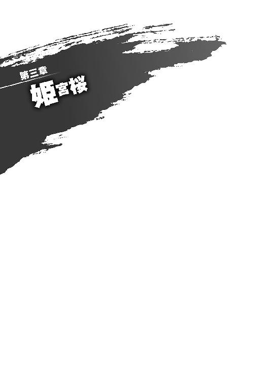
１
21号は、医務室のドアをノックした。
ややあって「どうぞ」と声が返ってくる。その指示に従って、彼は部屋の中に入った。
ミクニは壁際にある薬品棚の整理をしていた。ちらりと横目に21号を見ると、彼女は手を止める。
「どうしたの、怖い顔して？」
「隊長ちゃんから全部聞いた」
「......そう」
ミクニは微笑み、棚の戸を閉めた。どうしてそんなに穏やかでいられるのか、21号にはわからない。
「とりあえず座ったら？ 話すついでに体を見てあげる」
21号は制服のジャケットとシャツを脱ぎ、椅子に座った。前に座ったミクニが胸に聴診器を当ててくる。
部屋はとても静かだった。壁に掛けられた時計が時を刻む音が聞こえる。
21号は何を訊くべきなのかわからなかった。レヴィアタンが最後の怪人であることを知ったのは、ついさっきだ。思考は何一つまとまっていない。それでも足だけはここに向いていた。
作戦室で仲間たちが困惑していたのを思い出す。無理もなかった。彼らはレヴィアタンがロクロクに負けた瞬間をその目で見ている。彼女が最後の怪人だというのなら、これから先の戦いもずっと戦闘員だけで出撃するようなものだ。気持ちが落ち着くまで、勝機のないことに皆が悩み、苦しむことだろう。けれど彼らは、悩み抜いた果てに、それでも戦うことを選ぶはずだ。21号はそれを知っていた。
「......なんで黙ってたんだよ」
ようやく出てきた疑問は、結局それだった。
レヴィアタンがロクロクに敗北したあの日、ミクニはすでに今の状況を理解していたはずだ。最後の怪人が史上最弱であるという、最悪の事態を。いや、もっと前から気づいていたのかもしれない。けれどあのときの彼女は、そんなことをおくびにも出さなかった。
「できればレヴィアタンに知られたくなかった。あのときの彼女を見て、ますます知らせちゃダメだと思ったんだ」
「このままずっと言わないつもりなのか？」
レヴィアタンは、まだ自分が最後の怪人であることを知らない。彼女にだけは告げないように、ドクター・パラケルススが隊長ちゃんに指示を出していたからだ。作戦室にいた戦闘員にもその指示は伝えられ、レヴィアタンだけでなく基地中の誰にも言わないよう隊長ちゃんから命じられた。
ミクニは聴診器を外し、寂しげな笑みを浮かべた。
「最近、レヴィアタンも私がなかなか創らないことを疑い始めてる。ずっとは無理だろうね」
「だったら......」
「彼女は少し私を買いかぶっているんだ」
ミクニは言った。
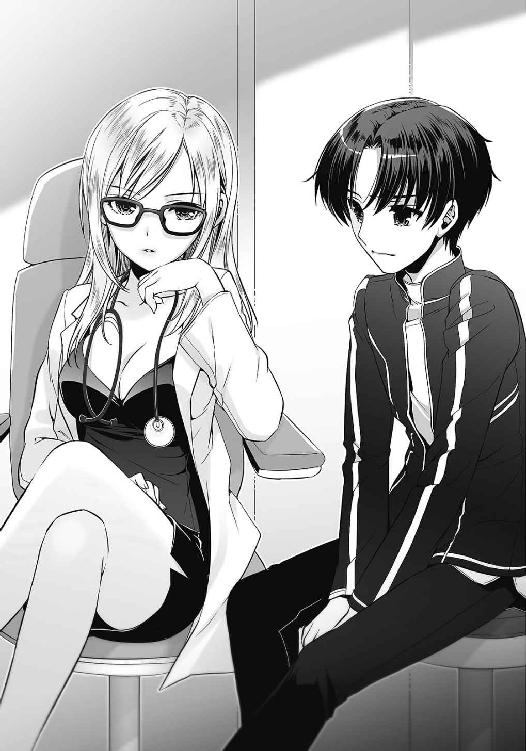
「天才ドクター・パラケルスス......。そんな私の創る怪人は史上最強でなくてはならないと信じている。そして、史上最強でない自分には価値がないともね。もし自分が『パラケルススの最後の怪人』だと知ったら、今の彼女はきっと自分を責める。だからまだ言わない。できることなら、彼女が自分の価値を信じられるようになってからがいい」
診察は終わりのようだった。いつものことながら、本当にそれだけでわかるのかと言いたくなる。
「結果は？」
「変わりはないよ。変わりなく、異常ありだ」
そう告げて、ミクニは机に向かって何かを書き始めた。
「......なあ、ミクニ」
「妙なことは考えないほうがいい」
21号の思考を先回りするように彼女は言った。
「前にも言っただろう？ あんたのそれは、英雄との力の差を埋められるようなものじゃない」
21号は何も言い返せず、ため息を吐いて立ち上がった。制服を着直しているところに、ミクニが声を掛けてきた。
「これからレヴィアタンの特訓？」
「いいや。あいつのことはジジたちに任せることにした。オレは探しものだ」
「探しもの、ね」
21号は医務室から出ていこうとする。ドアに手を掛けたところで、ふと振り返った。
「ミクニは、オレたちが勝てると思うか？」
「......わからないよ。勝てるかもしれないし、勝てないかもしれない。無責任なことは言わない主義なんだ」
そして彼女は、穏やかに笑った。
「だけど、私は勝てると信じてる。頼りにしてるよ、馬鹿息子」
２
医務室をあとにした21号は、エレベーターで第五階層まで下りた。
白い壁に囲まれた円形のフロア。その中心を、ガラスに囲まれた巨大な空洞が貫いている。
21号はガラスの壁に近づき、空洞を覗き込んだ。
それと同時に、淡い光が空洞の奥底を満たし、そこに並ぶ八十一個の巨大フラスコが闇の中から浮かび上がった。七つのフラスコで新たなホムンクルスの生成が開始されていて、小さな人型の影が見えた。ほどなくして、彼らはフラスコと共に再び闇に潜っていった。
空洞から離れ、21号は歩き出す。
向かう先は作戦室や訓練場ではない。いつもとは違う扉を開き、その先にある廊下を進んだ。
突き当たりにあった扉をノックする。一秒もしないうちに勢いよく扉が開かれ、隊長ちゃんが21号を出迎えた。
「ししょー、お待ちしていました。どうぞ入ってください」
隊長室に入るのは21号も初めてだった。
マンションの居室に比べると大分広い。部屋には目を瞠るほど大きいデスクや、いくつかの書棚が置かれているが、窮屈な感じはしなかった。ただ、生活空間ではなく事務作業をする場所だからなのか、中は思っていたよりもシンプルだ。
「こっちです」
部屋の左側にドアがあった。隊長ちゃんのあとについて21号もドアの奥に入る。
「へえ......」
思わず声が出た。
そこは書棚だらけの部屋だった。二十メートル四方の部屋に、分厚いファイルの収められた棚が所狭しと置かれている。さながら小さな図書館だ。
隊長ちゃんが部屋の奥にある二つの棚の前で立ち止まった。
「戦闘記録はここです。基地からの持ち出しは禁止されているので、できれば隊長室の中で見てください」
ざっと見たところ、棚にあるファイルは百冊程度だった。近くにあったファイルを手に取ると、表紙に怪人の名前が書いてある。どうやら出撃毎にその交戦過程がまとめられているようだ。
「これ、全部今までの隊長がつくったのか？」
「はい。研究部に提供する資料なので、ここにあるのは全部複製ですけど」
隊長が英雄との戦闘記録を残しているという噂は、以前に聞いていた。研究部の取得する戦闘データの補足が目的らしい。ただ、それほど話題にされないことを考えると、有効活用されているかどうかは疑わしい。
だが、この戦闘記録は貴重な情報源だ。他の戦闘員に比べれば圧倒的な戦歴を持つ21号でも、出撃回数は二十に満たない。過去にどんな戦いが繰り広げられたのか、そのほとんどを彼は知らなかった。
「映像データが残っているものは、あっちの部屋にある端末で見れます。どうぞ自由に使ってください」
「わかった」
「あの、ししょー......」
「怪人のことを黙ってた話なら、もういいって。あいつが強くなって、少しでも希望を持てるようになってから言いたかったんだろ？」
「......はい」
「隊長ちゃんも、レヴィアタンの特訓につきあってやってくれよ。ジジだけじゃ大変だし、ロクロクじゃ心配だ」
「......わかりました。それでは、早速訓練室に行ってきますね」
弱々しい笑みを浮かべ、隊長ちゃんは部屋を出ていった。21号はファイルだらけの書棚に向き直る。
「絶対に見つけてやる」
ファイルを睨みつけ、21号は呟いた。
稼働制限だけでは足りない。英雄たちに勝つために、21号は鎧の欠点を見つけなければならなかった。もし別の欠点が存在するなら、過去の戦闘記録にその手掛かりが埋もれているはずだ。当時は気にしなかったことも、今であれば違うように目に映るかもしれない。
「............ん？」
書棚を眺めていた21号は、一冊だけ、やけに薄いファイルがあることに気がついた。不思議に思い、手に取ってみる。
【ジャバウォック】
「......お前かよ」
21号は苦笑してファイルを開いた。中に書かれているのは怪人としての彼女のスペックぐらいで、英雄との交戦過程は一切記録されていなかった。彼女の戦いはある意味で非公式なものであったし、あの場に隊長はいなかった。本来なら戦いを見ていた21号やジジに証言を求めるのかもしれないが、幹部たちに【戦闘員】の廃止を取りやめるようかけあっていて、隊長も手が回らなかったのだろう。
だが、たとえ記録に残っていなくても、21号は覚えている。
ジャバウォックの戦いを。彼女の最期を。忘れるわけがない。
21号はファイルを閉じて書棚に戻した。
別の一冊を手に取り、それをデスクのある部屋に持っていく。隊長室の椅子はなかなか座り心地のよいものだった。
そして21号は、悪と正義の戦いを辿り始める。
３
Ｓ区の街を歩いていた姫宮桜は、道ばたで不意に足を止めた。隣を歩いていた草薙青葉が振り返り、不思議そうに声を掛けてくる。
「桜？」
「......あ、ごめんなさい」
我に返り、慌てて青葉の横に並んだ。
活気の溢れ返る街の中を、青葉と二人で歩く。もしかしたら姉妹のように見えるかもしれない。もちろん姉は青葉だ。彼女のほうが年上だから、というだけではなく、見た目の雰囲気からしてそうだろう。白いレースのカットソー。ショートパンツからは長い脚がすらりと伸びていて、モデルのようだ。ハイヒールのサンダルを履いて歩く姿も堂々としていて、踏み出す足の一歩にさえ自信が漲っているかのようだった。
「どうしたの、急に立ち止まったりして？」
「その......あそこで会ったんです。黒野さんとアルスマグナの怪人に」
一ヶ月以上前のことだ。桜は街で見かけた諍いに割って入り、二人に出会った。黒髪の少年と、赤い髪の少女。少女のほうが悪の組織アルスマグナの怪人であるとわかったのは、それからしばらくしてからのことだ。
「ああ、あの赤い奴......」
青葉が苦い顔をして、それから言った。
「で、黒野ってのは誰だったっけ？」
「え？ 忘れちゃったんですか？」
「......誰？」
桜は苦笑する。青葉はあまり人のことを覚えない。黒野のことも、疑いが晴れた瞬間に興味をなくしてしまったのだろう。
「ほら。怪人じゃないかって疑って、私が基地に連れてきた......」
「あー、アイツか！ 思い出した。桜が一目惚れした奴だ」
「してませんっ！」
不意打ちに思わず声が大きくなった。
「ほんとに～？ だって、桜が男の話をするなんて珍しいじゃない」
にやにやとこちらを見てくる青葉から顔を逸らし、桜は話題を変えることにした。
「そ、そういえば。隼人くんたちは呼ばなかったんですか？」
遊びにいこうと言い出したの青葉だ。これから映画を観に行く予定だった。
「呼んでない。どうせ来ないしね。あ、隼人だったら『桜も来る』って言ったら別だったかも」
「？」
桜が首を傾げると、青葉は哀れむような瞳を向けてきた。
「我が弟ながら不憫だわ」
「え？」
「なんでもない。シュウと大地は、司令とか頭のいい研究者様と話してるんじゃない？ それが終わったら、きっと訓練だね。あいつらは『正義の味方馬鹿』だから、普通に遊ぶってこと知らないし」
辛辣な評価にも聞こえるが、彼らのことを話す青葉は誇らしげでもあった。
緋崎秀一と黄瀬大地、そして草薙青葉の三人は、英雄機関の初期メンバーだ。緋崎はアルスマグナとの最初の戦いから、黄瀬と青葉は二度目の戦いから出撃している。桜と隼人が加わったのは、アルスマグナとの戦いが始まってから半年後......〈桜花〉と〈疾風〉が完成した後のことだった。
初期の戦いから一緒にいる青葉たち三人は、五人の絆とはまた別のもので結ばれているように桜には感じられた。ただ、その中にあって、青葉だけは他の二人と違い、プライベートも思いきり満喫している。今の彼女は正義の味方ではなく、普通の女の子だった。
「青葉さんは、どうして正義の味方でいるんですか？」
そんな疑問が思わず口をついて出た。
「どうしてって......そんなの、楽しいからに決まってるじゃない」
青葉が、さらりと言う。口元に浮かべた笑みは、好戦的な彼女らしく、獰猛と呼ぶに相応しいものだった。
「それに、私は正義の味方なんてしてるつもりはないの。ただ戦うのが楽しいから、ついでに不愉快なアルスマグナを蹴飛ばしてるだけよ。好きなことを好きなようにやれて、嫌なことを思いっきり嫌がれるのって、すごく楽しいことだと思わない？」
そう言う青葉はどこまでも楽しげだ。けれど、アルスマグナを不愉快だと感じ、それを嫌がれる彼女は、やはり正義の味方なのだと桜は思う。
「ね、桜。映画の後、服買いに行かない？」
唐突に青葉が言った。彼女の笑顔に不穏なものを感じる。きっといつものパターンだった。
「......また私を着せ替え人形にするんですか？」
「桜は何着せてもかわいいから、服を選ぶの楽しいんだよね」
「そんなこと言ってもごまかされないですからね」
頬を膨らませる桜だったが、青葉は苦笑した。
「桜はもうちょっと自分の価値を知ったほうがいいよ。とにかく決まりね。さあ、楽しくなってきた」
なんだかいつもより気合いが入っている。嫌な予感を覚えたが、こうなった青葉は止められない。きっと今この瞬間も、彼女にとっては悪の組織を倒すのと同じように、好きなことをやりたいようにやっているだけなのだろう。
桜は小さなため息を吐き、自分の予感が外れることを祈った。
４
全ての戦闘記録に目を通すのに、21号は十日を費やした。
最後の一冊──前回の敗北が記載されたファイルを閉じる。表紙には怪人の名前ではなく【戦闘員その２】と書かれていた。隊長ちゃんがつくったものだ。短い戦闘ながらわかりやすく書かれていて、あのときの光景が目に浮かぶようだった。褒めるべきだろうか。
椅子の背もたれによりかかり、21号は隊長室の天井を見上げる。
過去を振り返ってみて、わかったことがあった。
「ふざけやがって。強くなりすぎだろ」
十日前に最初のファイルを見たとき、21号は目を疑った。
ドクター・パラケルススの創った【第一の怪人】と英雄機関の【鎧】──〈紅蓮〉の戦闘記録。そこに書かれていたのは、現在では鬼神の如き力を振るう〈紅蓮〉を怪人が圧倒する様だった。
最初の戦いでは〈紅蓮〉以外の鎧は出てこなかった。その〈紅蓮〉にしたって、特殊兵装を持たず、今ほどの性能はなかったことが記録から読み取れる。あと一歩のところで【第一の怪人】が敗れたのは、不運か奇跡としか言いようがなかった。
その後に出てきた怪人も、記録に誇張がなければ英雄たちよりも強かったはずだ。〈水蓮〉や〈金剛〉が加わっても、彼らは互角以上の戦いを繰り広げていた。
だが、英雄たちが特殊兵装を手に入れ、さらに〈桜花〉と〈疾風〉が加わった辺りから、徐々に形勢は逆転してくる。身に着ける鎧の性能は上がり、英雄たちも数々の戦いを経て力をつけていった。そしてその先に、21号もよく知る今の彼らがいた。
英雄たちは強くなっている。今までも、そしておそらくは、これからも。
結局、期待していたような【鎧】の欠点は見つからなかった。あるファイルでそれらしきものを見つけても、その先のファイルで改善されているのだ。見つけた欠点も新機能を導入した際の一時的な不具合のようで、鎧の根本的な欠陥とは言えなかった。
逆に言えば、今なお残っている鎧の稼働制限だけは相当根が深いものなのだろう。狙うとすれば、やはりそこなのか。
だが、どうやって？
レヴィアタンと自分たちだけでやれるのか？
「......くそ」
苛立ち混じりに椅子から立ち上がる。
もしかしたら何かを見落としたのかもしれない。落ち着いてからもう一度、一から記録を洗い直すべきだ。
21号は、デスクの上に積まれたファイルを元の書棚に戻し、隊長室をあとにした。
†
正義の味方を倒すにはどうすればいいのか。
リビングに寝転び、21号はそればかり考えていた。
時間はあまり残されていない。まだ日は明らかになっていないが、近いうちにファーストラボが出撃することになるだろう。どんな怪人を出してくるのか知らないが、英雄たちがそう簡単にやられるとは思えない。ファーストラボが敗北すれば、次はまたセカンドラボの番になる。
頭をよぎるのは、前回の敗北だった。
鎧を装着した英雄たちを前にして、立ち尽くしていた自分を思い出す。戦うことも逃げることもできず、仲間たちがやられていくのをただ見つめていた自分を。あのときどうするべきだったのか、21号はいまだに答えを出せていなかった。
インターホンが部屋に鳴り響いたのは、そのときだった。
「......誰だ？」
無視しようかと思ったが、ピンポーン、と再び鳴り響く。
この部屋に来るのは大抵ロクロクだ。だが、今は彼もレヴィアタンの特訓につきあっているはずだ。
「だあ、うるせえな！」
なおも鳴らされ続けるインターホンに顔をしかめながら、21号は身を起こして玄関に向かった。
念のためドアスコープを覗き込むと、
「なっ......」
そこにいたのは、サングラスを掛けた長身の女だった。ブルーのカーディガンにミニスカート、手には高級そうな小さなバッグを提げている。
腰まで届く長い髪と、自信に溢れた立ち姿だけでも、21号にはそれが誰なのかわかった。
草薙青葉。
見間違えるはずはない。ドア一枚を隔てた向こう側に、英雄が立っている。
彼女はドアスコープに顔を向けてきた。挑発的な笑み。目が合ったような気がして、21号は思わず後ずさる。
「なんでこいつが......？」
呟くと同時に、目の前のドアが二度叩かれた。いるのはわかっている、と言いたげなノックだった。
──どうする？
自分に問い掛けてすぐに、21号は決断した。
鍵を開け、ゆっくりとドアを押す。
顔を合わせると彼女は、
「黒野双一？」
挨拶もなく訊いてきた。
「ああ、そうだけど......」
21号が肯定すると、彼女はサングラスを外した。切れ長の目が、獲物を見るかのように21号を捉えている。
草薙青葉は挑発的な笑みを浮かべると、
「あんた、桜とデートしなさい」
さらりと、予想外のことを言った。
「..............................は？」
それは提案でもお願いでもなく、命令だった。次の瞬間には相手が快諾すると、そう信じて疑わない口調だ。
彼女は、バッグから一枚のパンフレットを取り出した。
「はい、これ」
自然な動作でそれを差し出され、21号は思わず受け取ってしまった。手にした細長い冊子を、しばし見つめる。よく見ると、パンフレットには白い紙が挟まっていた。
「......臨海公園？」
「来週の日曜日に、そこの駅の近くで待ち合わせね。挟まってる紙に待ち合わせの時間と場所の地図描いといたから」
「待て」
「あ！ もしあの子と『待ちましたか？』『いや、今来たとこ』みたいなやりとりをしたかったら、三十分以上は早く着いといたほうがいいよ。あの子、絶対遅刻しないから」
「待て待て待て待て！」
21号は怒鳴り、矢継ぎ早に放たれる青葉の言葉を打ち払った。
「こっちはいきなり英雄が来て、何がなんだかわからねえんだよ！ だいたいあんた、なんでうちの場所知ってるんだよ？」
「そんなの住所調べたからに決まっているじゃない。あんたが桜たちに取り調べを受けたことあったでしょ？ そのとき調べた住所を見てきたわけ」
「いいのかよ、それ」
「そんな話はどーでもいいの。とりあえずデートね、デート」
「何がどうなったらそうなるんだ......」
青葉が不思議そうに小首を傾げた。
「おっかしいなあ。喜んで飛びついてくると思ったんだけど。だって桜だよ、桜？ かわいいし、やさしいし、からかうと癒されるし。ここだけの話、脱いでも結構すごいんだから。......ま、いっか。あんたの気持ちは置いておくとして」
「置くなよ」
「桜もたまにはこーいう気分転換が必要だと思うわけ。隼人に行かせてもいいんだけど、あいつ基本的にへたれだから。これを機に対抗馬でも立てて焦らせようかなって」
「対抗馬？」
青葉が楽しげに口元を緩ませ、言った。
「それで？ 行くの？ 行かないの？」
実際のところ、返事はすでに決まっていた。
理由には納得いかないが、罠にしては回りくどすぎる。おそらくは本当のことだろう。英雄や鎧の情報を得るためにも、姫宮桜と直接会える機会を逃す手はない。
21号はわずかな間、考えるふりをして、答えた。
「わかった。行くよ」
「そうこなくっちゃ。じゃあ、ちゃんと待ち合わせ場所に来なさいよ。桜は上手く誘き寄せておくから」
「......ん？」
なんだか不穏な言葉が聞こえた気がする。
「おい。姫宮さんはこのこと知らないのか？」
「うん」
あっさり認めた青葉に、21号は呆れ果てる。
「本当に大丈夫なんだろうな？」
「心配しないで。あの子を騙すのなんてちょろいちょろい」
「あんたな......」
「とにかく、来週の日曜！ ちゃんと来なさいよ。もし来なかったら──」
ドアを開けたまま固まる21号に、彼女が急に近づいてきた。
目の前に英雄の顔がある。誘うような笑みを浮かべ、彼女は囁いた。
「殺してあげる」
21号は背筋を寒くする。それは正義の味方ではなく、悪の怪人のセリフだ。
嵐のように現れた草薙青葉は、21号の心を掻き乱せるだけ掻き乱し、「じゃーねー」と手を振って去っていった。
残されたのは、待ち合わせ場所の描かれたメモと、臨海公園のパンフレットだけだった。
５
夜も深まった頃にジジが基地から帰ってきた。
彼女はリビングに寝転んだ21号を見つけると、意外そうに目を丸くした。最近は深夜まで隊長室にこもっていることが多かったから、こんな時間に顔を会わせるのは久しぶりのことだった。
「帰っていたんですか？」
「ああ。今日はちょっとな」
「待っていてください。今、夕食の準備をします」
そう言ったジジは、少し嬉しそうに見えた。
夕食は肉じゃがだった。久しぶりに二人で向かい合ってご飯を食べていると、ふとジジが思い出したように言った。
「ニーイチ。レヴィアタンがロクロクに勝ちました」
危うくむせそうになりながら、21号は口の中のじゃがいもを飲み込んだ。
「ほ、ほんとかよ？」
「はい。ロクロクが何度か再戦を申し込みましたけど、全て返り討ちです」
レヴィアタンの特訓につきあっているのは、ジジとロクロク、そして隊長ちゃんの三人だ。その中ではロクロクが一番強い。前に勝負したときにはまだまだロクロクに分があると感じていただけに、驚きは大きかった。
自然と、目が四○三号室側の壁に向いていた。その向こうにはレヴィアタンがいるはずだ。あの日、作戦室で別れてから、21号は一度も彼女と顔を合わせていない。
「強くなってんだな、あいつ」
「このままだと、いつか殺されてしまうかもしれませんね」
「............」
「冗談です」
ジジが表情を緩める。最初の頃のレヴィアタンを知っているだけに、彼女の成長が嬉しいのだろう。
「それと、35号たちが訓練室に来てくれました。特訓に付き合ってくれるそうです」
戦闘員35号。以前の戦いで桜花隊を率いた【生存者】の一人だ。生き残りの中でもキャリアの長い戦闘員で、六回の出撃経験があるらしい。
彼と一緒によくいるメンバー......【生存者】たちの顔を思い出す。彼らは決意したのだろう。「それでも戦う」と。
だが──。
「ジジ。レヴィアタンが英雄を倒せるようになると思うか？」
彼女の箸が止まる。ジジは目を伏せて、首を横に振った。
「難しいと思います。少なくとも、今のままでは間に合いません」
「そうか......」
「ニーイチのほうはどうですか？」
「ああ。それが、今日さ──」
姫宮桜とのデートについて話そうとして、21号は思いとどまった。デートが終わってから伝えても遅くはないだろう。下手に心配を掛けると後が怖いことを、21号は知っていた。
「ニーイチ？」
「今日、全部の戦闘記録を読み終わった。鎧の欠点は見つからなかったけどな。見落としがあるかもしれねえから、もう一回読んでみるつもりだけど」
上手く話題を逸らせたと思ったが、どうしてか彼女はじぃっと21号を見つめていた。
「ど、どうした？」
「......いえ、なんでもありません」
ジジはかぶりを振り、気を取り直すように言った。
「次のファーストラボの出撃を、レヴィアタンたちと観に行くことにしました。場所にもよりますけど......」
「へえ。いいんじゃねえか？ レヴィアタンにも、英雄たちがどんなのか見せておいたほうがいいしな」
「はい。それで、ニーイチも一緒にどうかと」
「オレも？ まあ、ファーストラボの怪人は気になるけど......レヴィアタンが嫌がるんじゃねえか？」
「いいかげん、あなたたちは仲直りすべきです」
「そういうことかよ......」
「出撃のことをレヴィアタンに隠していたのは、私たちも一緒です。彼女もそこまでは怒っていません」
「いや、だけど」
「ニーイチ」
有無を言わせない声に21号はたじろいだ。どうやら拒否権はなさそうだ。観念し、ため息混じりに答える。
「わかったよ。行けばいいんだろ？」
「はい」
その答えに満足したのか、ジジは小さく微笑んだ。
†
「...........................は？」
作戦室で、21号は間抜けな声を上げた。
姫宮桜とのデートを三日後に控えた日のことだ。
「わりい、隊長ちゃん。......スフィアが、なんだって？」
ついさっき耳にしたことが信じられず、慌てて壇上の彼女に確認する。仲間たちが怪訝な表情を向けてくるが、それどころではなかった。
「ししょー。ちゃんと聞いててくださいよう！」
隊長ちゃんは困ったように笑い、いつものように元気に言った。
「次のスフィアの出現は三日後の日曜日。場所は、都内にある臨海公園です！」
６
電車の中は、和気あいあいとしたカップルや家族連れで満たされていた。
休日ということもあって、臨海公園に向かっている人間が多そうだ。車内は幸せな笑顔で溢れ返っている。
そんな彼らを恨めしく思いながら、21号は心の中で「大丈夫だ」と唱え続けていた。
組織の予測では、レコードスフィアが出現するのは午後五時半。場所が重なったときにはどうしようかと思ったが、それまでに姫宮桜とのデートを終えれば何も問題はない。無理に場所を変えようとして、時間を浪費する必要もないはずだ。
ジジにも出現時刻までは用事があると言ってある。彼女たちも特訓をすると言っていたから、鉢合わせするようなことはないだろう。
そう自分に言い聞かせているうちに、電車は目的の駅に辿り着いた。
駅の改札を抜けてから、21号は草薙青葉に渡されたメモを取り出した。
「これでどうしろっつーんだ......」
メモには手書きで地図が描かれているが、情報があまりにアバウトすぎた。肝心の待ち合わせ場所の指示が「このへん！」となっている時点で何かがおかしい。
とりあえず駅を出たところが待ち合わせ場所だと判断して、臨海公園に向かうヒトの流れに沿って歩くことにした。
改札を抜けて駅構内から出ると、広々とした青空が21号を迎えた。周囲には視界を遮るビルがなく、澄みきった空をどこまでも見渡すことができる。遠方に、大きな観覧車が見えた。臨海公園の中にあるらしい。風にのって漂ってくるのは、潮の匂いだろうか。そういえば海を見たことがないな、と21号は思った。
駅の右手には噴水があり、その手前に捜し人の姿があった。
身に着けているのは薄桃色のワンピース。小さなハンドバッグを両手で提げる姫宮桜は、立っているだけだというのにどこか楽しそうに見えた。上品さと無邪気さを混ぜ合わせたような佇まいは、大人しめな服装をしているにもかかわらず周囲の目を魅く。ただ、変装用であろう眼鏡のせいか、それとも単純に、まさかこの場に正義の味方がいるとは思われていないのか、彼女を英雄だと気づく人間はいない様子だ。
「姫宮さん」
21号が声を掛けると、彼女はゆっくりとこちらに振り返った。目を丸くし、それから顔を綻ばせる。
「黒野さん！」
驚きと喜びの入り交じるその表情は、偶然の再会に胸を踊らせているようにしか見えなかった。どうやら青葉からは何も知らされていないらしい。
「お久しぶりです！ もしかして、黒野さんも臨海公園に行かれるんですか？」
「あー、まあな」
「すごい偶然ですね。私も今日、青葉さん......英雄機関の仲間と遊びにきたんです。黒野さんは？」
姫宮が眩しい笑顔を見せる。どうにもからかいたくなる笑みで、少しだけ草薙青葉の気持ちがわかった。
「オレはデートに来たんだよ」
「え。そ、そうなんですか」
姫宮が動揺したような声を上げた。きょろきょろと周囲を見たかと思うと、困ったように笑う。
「えっと......彼女、いたんですね」
「いや、ただの遊び」
「遊び!?」
姫宮が叫んだ。
「あ、あ、遊びって......？」
「デートしてくれって頼まれてさ。仕方なくここに来たわけだ」
何を想像したのか、姫宮は顔を紅潮させて叱ってきた。
「あの、あのっ！ そういうのいけないと思います！ たしかに黒野さんにとっては遊びかもしれませんけど、その女の子がどんな気持ちで黒野さんを誘ったと思っているんですか？」
そう問われて思い出したのは、草薙青葉の楽しげな笑みだった。
「......あっちも遊びだな」
「あっちも!?」
姫宮は悲鳴を上げ、しゅんと肩を落とした。
「わかりません......そういうのが大人の世界なんでしょうか......」
「姫宮さんも来るか？」
「結構です」
きっぱりと彼女は言った。
「それより、その子のこと待たせているんじゃないですか？ 早く行ったほうが......」
「へーき、へーき。相手はすぐそこにいるしな」
「え？」
広場にいる人々を見回す姫宮。
そんな正義の味方を、21号は指差した。
「..................はい？」
きょとんとする姫宮に、21号は言ってやる。
「草薙青葉なら来ないぜ。オレがあいつのかわりだ」
「えっと......あの......？」
「だから、草薙青葉に、あんたとココに行けって言われたんだよ。ほら、これ」
姫宮にメモを手渡すと、彼女は食い入るようにその文字を見た。
「あ、青葉さん！」
彼女は携帯電話を取り出し、すぐさま発信を掛けた。相手は青葉だろう。だが、漏れ聞こえてきたのは「お掛けになった電話番号は──」という機械的な音声だった。
「ごめんなさい！」
顔を真っ赤にした姫宮が大きく頭を下げる。
「ご迷惑お掛けして......！ 本当にごめんなさい！」
英雄に謝らせるというのはなかなかどうして気分がよかったが、いつまでもこうしているわけにはいかない。
タイムリミットは、午後五時半だ。
今日まで何度も戦闘記録を読み返したが、決定的な手掛かりは掴めていなかった。諜報部の仲間から上がってくる情報にもめぼしいものはない。勝機は依然、闇の中だ。
今日、英雄たちはファーストラボに勝利するだろう。次の出撃までもう時間がない。もしかしたら、これが最後のチャンスかもしれなかった。
「さあ、行こうぜ」
「え？」
姫宮が不思議そうに小首を傾げた。彼女としては、当然このまま解散して青葉を怒りに行くつもりだったのだろう。
「行くって、どこにですか？」
「決まってるだろ？ 遊びにいくんだよ」
にやりと笑い、21号は戸惑う姫宮の手を取った。細くなめらかな彼女の指先がびくりと跳ねる。
「く、黒野さん!? きゃっ......」
21号はかまわず彼女の手を握ると、半ば連れ去るように臨海公園に向かって歩き出した。
７
──どうしてこんなことに？
姫宮桜は、握られた手の感触に半ばパニックに陥っていた。
黒野双一に連れていかれた場所は、臨海公園内にある大型水族館だ。青葉から渡されたパンフレットに「ココに行きなさい」と指示が書き込まれていたらしい。
半球状の館内に入ると、そこには下へ潜るエスカレーターがあるだけだった。展示場は地下に広がっているらしい。
「あの、黒野さん。そろそろ手を......」
桜はためらいがちにそう言った。右手をずっと掴まれている。振り払うこともできたけれど、それもなんだか悪いような気がして、ためらっているうちにこんなところまで来てしまった。
「ん？ ああ」
彼はあっさりと手を離した。今の今までまるで意識していなかったようで、ちょっとずるい気がした。
エスカレーターを下りると、静かで幻想的な空間が桜たちを待っていた。
ガラス張りの壁の向こうに、巨大な水槽がある。幾筋もの光が差し込むクリアな世界を、大きさも色も形もバラバラな魚たちが自由に泳ぎ回っていた。
「わぁ......」
桜は、水槽の前で立ち止まり、黒野と一緒に、ガラスの向こう側に広がる世界を眺める。音さえも失くしたような水の中を、魚たちが無軌道に躍動し、カラフルに、そして力強く彩っていた。
「すごい......」
水族館に来たのは何年ぶりだろう。ここ数年は、一度も来ていなかったように思う。
しばらくして、目の前の世界に見惚れている自分に気がついた。慌てて横を向くと、黒野もじっと水槽を見つめていた。けれど、その真剣な横顔は、まるでガラスの向こうに別の何かを見ているようだった。
「黒野さん？」
「ん？」
振り向いた彼の口元には、いたずらっぽい、子供のような笑みが浮かんでいた。
気のせいだったのだろうか。
桜はかぶりと振ると、微笑んだ。
「綺麗ですね」
黒野はもう一度水槽の中を見渡すと、苦い顔をした。
「煮ても焼いてもまずそうなのばっかりだけどな」
「た......食べちゃだめですよ？」
薄暗い館内を二人で歩く。
ガラス張りの通路は、水槽から漏れ出る穏やかな光で満ちていた。展示されている海の生物は、小さくてかわいらしい魚から、目を瞠るほどの大きさのエイやサメ、ぐにゃぐにゃした変な生物まで様々だ。
「黒野さん、ごめんなさい」
ゆったりと泳ぐアザラシを眺めながら、桜は言った。黒野が不思議そうな顔をする。
「何がだよ？」
「無理につきあわせてしまって、です。青葉さんのことだから、きっとデートしなさいって脅してきたんだと思うんです」
青葉がこれを思いついたのは、たぶん映画を観に行った日だ。彼女に指示されて今日着てきた服は、あのとき一緒に買ったものだった。
「別に謝ることないぜ。姫宮さんとのデートなんてこっちから頼みたいぐらいだしな」
「え？」
すると、黒野はいつものように笑みを浮かべて言った。
「姫宮さんは英雄機関の戦士で、正義の味方だからな。そんな英雄様とデートするなんて夢みたいなもんだろ？」
桜は苦笑する。少し寂しかった。
「やっぱりそういう風に見られてるんですね、私たちって」
正義の味方である桜たちは、どこへ行っても特別扱いだ。同じ機関に所属する研究者や、協力関係にある警察官、自衛隊員でさえ、話し掛けると背筋をぴんと伸ばして受け答えをする。どうやら彼らは、英雄と言葉を交わせるだけで身に余る光栄だと思っているらしい。
司令の神原なら『そんなことは当然だ。君たちは選ばれた人間なのだから』と言うだろう。
けれど桜には、どうしてもその言葉に実感が湧かなかった。
「確かに私は英雄機関の戦士で、正義の味方って呼ばれています。けど、私だってあなたと同じ人間なんですよ？」
桜は笑い、しかし諦めを含んだ声で言った。それは、きまって「そんなことはありません！」と返される魔法の言葉であり、いつしか口にすることがなくなった弱々しい主張だった。
だから、目の前の彼も、これまでの人々と同じように、そんなことはないと否定するだろうと、そう思った。
視線を宙にさまよわせた黒野は、けれど、
「そうだな」
と言って、曖昧に笑った。
「..................」
「......姫宮さん？」
「え。あ、はいっ！ なんでしょうか!?」
思わず声が大きくなった。黒野が驚き、他の客も何事かとこちらに目を向けてきた。
「い......いや、先に進もうぜ」
「そ、そうですね」
熱くなっていく頬を隠すように桜はうつむいて、黒野の背中に付いていく。
水槽を眺めながら通路を進んでいくと、上りのエスカレーターがあった。立て札に、屋外にも展示場があると書いてある。その中に『ペンギン』という文字を見つけて、桜は胸を躍らせた。
静かに駆動するエスカレーターが桜たちを地上に運んでいく。
待ち受けていた青空の眩さに、桜は目を細めた。
８
快晴の空の下は、館内とは打って変わって賑やかだった。
ばしゃばしゃと水の跳ねる音と、人間たちの騒がしい声が混ざり合っている。その場に集まった誰もが、下方に見える岩場とプールを眺めていた。
「見てください、黒野さん！ ペンギン！ ペンギンです！」
姫宮桜が興奮気味に服を引っ張ってくるが、21号には何がそんなに楽しいのかわからず、ただ気圧されるだけだった。
プールでは、何十羽ものペンギンたちがモノクロの体を器用に使って飛ぶように泳いでいる。懸命に羽をはばたかせる姿は、いつかの青い怪人を思い出させた。
泳ぎに飽きたペンギンが岩場に戻り、プルプルと全身を震わせて水を払った。おぼつかない足取りでよちよちと歩いたかと思うと、遠くを見上げるように胸を張る。
「か、かわいすぎます......！」
姫宮が戦慄していた。
「そうか？」
「かわいいですよ！ あれはもう反則です！ 黒野さんにはわからないんですか!?」
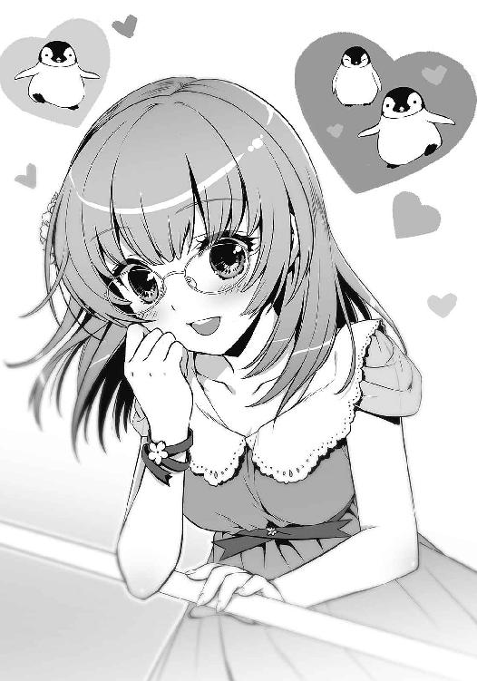
勢い込んで姫宮が訴えてくる。ペンギンの一挙一動に目を輝かせる彼女は、悪と対するときの姿とギャップがありすぎた。なんだか呆れてしまい、思わず口元に笑みが浮かんだ。
「わ、笑わないでくださいっ！」
馬鹿にされていると思ったのか、姫宮が頬を膨らませて抗議してくる。
「わりいわりい。英雄様にもかわいいとこあんだなって」
怪人や戦闘員と戦っているときも、これぐらい隙を見せてくれれば助かるのだが。
「............ん？」
目の前で姫宮が固まっていた。心なしか、頬が紅潮している気がする。
「どうかしたか？」
「な、なんでもありません」
言葉を詰まらせていた彼女が、あせあせと両手を交差させる。かと思うと、そっぽを向いてうつむいてしまった。
21号は何がなんだかわからず、もう一度ペンギンたちを観察することにした。しかし、どんなにじっくり見ても、かわいさとやらは理解できない。もしかすると、あのかわいげのない青い怪人を思い出してしまうのがよくないのかもしれなかった。
「ねえ、もう少し近くに行きましょうよ」
喧噪にまぎれて聞こえてきたそんな声が、やけに21号の耳に残った。
後ろからだ。
「あまりはしゃがないでください。目立ちます」
続いて聞こえてきたのは、聞き覚えのある涼やかな声。
「は、はしゃいでなんかないわ。私は気分転換なんていらなかったんだから......」
「まあまあ！ いいじゃないですか！ せっかくなんですから楽しみましょう。まだ時間はありますし！」
ひどく活発な声まで聞こえてきて、嫌な予感は確信に変わりつつあった。
慌てて振り向くと、後方に三人の少女がいた。
ジジ、レヴィアタン、隊長ちゃん。
特訓をしているはずの三人がそこにいた。当然、黒い制服ではなく外出用の服を着ていて、レヴィアタンは帽子を目深にかぶっている。
さあっと自分の顔から血の気が引いていくのを21号は感じた。
ふと、ジジと目が合った。彼女は不思議そうにぱちぱちと瞬きをして、
「ニーイチ？ どうして──」
石のように固まった。彼女の視線は21号ではなく、横にいる姫宮桜に向いている。
「いや、これは！」
「黒野さん？」
慌てている21号を見て、姫宮も後ろを振り返り、「あ」と嬉しそうに声を上げた。
「もしかして、黒野さんの妹さんですか？」
「......ええ」
ジジが平坦に答えた。意図的に感情を排除したような声だった。
「黒野鈴です。以前は助けていただいて」『どういうことですか、ニーイチ』「ありがとうございます」
丁寧なお辞儀と併行して、ジジの冷え冷えとした声が〈通信〉で飛んできた。
『か、帰ったら説明する！ 頼む、今は見逃してくれ！』
そう伝えて、21号は目の前にいる姫宮に笑いかけた。
「こいつも偶然、友達と遊びに来てたみたいでさ」
「そうだったんですか」
姫宮が微笑んだ。21号も笑みをつくりながらジジに〈通信〉する。
『ロクロクは来てないのか？』
『レヴィアタンに勝てなくて家で泣いてます』
『あいつ......』
内心で呆れていると、どこかから唸り声が聞こえてきた。
「うぅ～......」
友達の一人であるところの隊長ちゃんが、ジジの背後に隠れて警戒心をあらわにしていた。
「え、えっと......」
「すみません。彼女は人見知りなんです」
すかさずジジのフォローが入る。
「そ、そうなんですか」
狼狽えながら姫宮はもう一人の友達に目を向け──顔をひきつらせた。
レヴィアタンが殺意のこもった目で彼女を睨みつけていた。
「すみません。彼女は目つきが悪いんです」
すかさずジジのフォローが入った。
「そ、そうなんですか............あれ？」
姫宮がレヴィアタンを見て、眉をひそめる。
「どこかで......？」
（やばい！）
レヴィアタンはジャバウォックに似ている。そのジャバウォックと面識のある姫宮を、レヴィアタンと会わせるのはまずい。
ジジも長居するのは得策でないと判断したのか、丁寧な口調で言った。
「兄のデートを邪魔するのもなんですし、私たちはそろそろ行きますね」
姫宮の頬が、ぼっと燃え上がるように赤くなった。
「い、いえ。そんな......！」
「ジ──おい、鈴」
「それでは」
そしてジジはにっこりと笑い、
「楽しんでいってくださいね、お兄ちゃん」
跳ねるような声音でそう言うと、レヴィアタンと隊長ちゃんの背中を押してその場を去っていった。
「............えっと......か、かわいい妹さんですね！」
頬を染めたままの姫宮が場の空気をごまかすように言った。
しかし、21号は返事をすることができなかった。
冷や汗が流れる。あれは、あとが怖いどころの話じゃない。
ジジの満面の笑みなんて──初めて見た。
９
園内を巡っているうちに、空の色が薄赤く変わり始めた。
「そろそろ帰りましょうか」
姫宮がそう声を掛けてきた。
腕時計で確認すると、時刻は午後五時を回ろうとしていた。
タイムリミットだ。
「......帰るか」
そう返事をすると彼女は少し残念そうな顔をしたが、すぐに笑顔に戻った。
姫宮と並んで、公園の出口に向かって歩き出す。
21号の足取りは重かった。
結局、有力な情報は得られなかった。水族館や園内の喫茶店で何度か探りを入れてみたものの、ただでさえ聞き出しにくい機関の機密情報をヒトのいる場所で姫宮が話すわけもなく、わかったことといえば、彼女の好きな映画やお菓子の種類、Ｓ区にあるおいしいお店、英雄機関のメンバーの私生活、草薙姉弟の喧嘩の話など、戦闘とは全く関係のない情報ばかりだった。
「姫宮さん？」
ふいに彼女が足を止め、空を見上げていた。
その視線を追うと、見上げた先に、ゆっくりと回転する巨大な観覧車があった。
彼女の横顔の意味するところは、21号にもなんとなくわかった。
「乗ってくか？」
姫宮が弾かれたように振り向いた。
「い、いえ！ そんなこと......！」
「なんだよ。乗りたいんじゃないのか？」
顔を赤くして慌てた姫宮だったが、やがてうつむき、申し訳なさそうに21号を見た。
「............いいんですか？」
どうも彼女のこうした仕草に慣れることができない。21号はごまかすように歩き出した。
「いいに決まってるだろ。ほら、行こうぜ」
とにかく、観覧車はチャンスだった。
ゴンドラの中は密室だ。誰かに見られることもなければ、誰かに話を聞かれることもない。楽しむべき仕掛けがあるわけでもないのだから、気を散らさずに話をするのには絶好の環境だ。
もう一度、腕時計を見る。観覧車の行列は十分短いし、周回時間もせいぜい十数分程度だろう。スフィアの出現時刻にも、まだ間に合う。
列に並ぶと、思ったとおりすぐに順番がやってきた。
乗務員に誘導されて、回ってきた丸いゴンドラの中に入る。扉が閉められると、中はとても狭く感じた。
ゆっくりと、ゴンドラは赤くなり始めた空に上っていく。
「昔、両親と一緒に遊園地に来て、観覧車に乗ったんです」
向かいに座る姫宮が、窓の外を眺めて言った。
「夕焼けがすごく綺麗でした。わーわー声を上げてたら、お父さんもお母さんも大笑いして、私もなんだか嬉しくなって、一緒に笑って......楽しかったな」
彼女がこちらを向く。目が合うと、姫宮は優しく微笑んだ。
「黒野さん。今日はありがとうございました。すっごく楽しかったです」
彼女は知らない。
この後、ファーストラボとの戦いが待ち受けていることを。
「......そりゃよかった。英雄様の役に立てたなら光栄だ」
「もう。その『英雄様』っていうのやめてください」
「わりいわりい。でも、正直意外だった」
「何がですか？」
「姫宮さんの言うとおり、英雄もヒトなんだと思ってさ」
隊長室の戦闘記録を思い出す。どんな逆境でも諦めることなく悪に立ち向かい、異常な速度で力を付けていく正義の味方。その様はまさしく英雄的であり、どこか化け物じみてもいた。
記憶の中にある彼女たちも同じだ。英雄としての彼女たちしか、21号は知らなかった。
けれど、今日一緒にデートをした姫宮桜は、思っていたよりもずっと普通の人間だった。ちょっとしたことに驚き、からかうと頬を膨らませ、かわいいものには目を輝かせる。そして今、観覧車の中で優しく微笑んだ彼女は────なんだかとても弱く見えた。
「なあ。約束、覚えてるか？」
そう訊くと、彼女は一瞬考え、すぐに微笑んだ。
「もちろんです」
以前、姫宮桜と緋崎秀一に取り調べを受けたとき、21号は彼女たちと約束をした。絶対にアルスマグナを倒してくれ、と。そのときは単なる方便だったが、不意にそのことを思いだした。
「安心してください。私たちは皆さんを必ず守り抜きます」
「本当だな？」
「本当ですよ。どうしたんですか、急に？」
くすりと笑った姫宮に、21号は言った。
「オレはあんたたちに負けてほしくないんだよ」
それは偽りのない想いだった。
今、セカンドラボが置かれている状況とは関係ない。ただ純粋に、英雄が自分たち以外の誰かに倒されることが許せなかった。
「あんたたちには、負けてほしくない。どんなに強い怪人が現れても、ものともせずに圧倒的な力で勝利を掴む。そんな風に強くあってもらわなくちゃ困るんだ」
何を言っているんだと、21号は自分でも呆れていた。情報を手に入れるためのデートで、どうして英雄を励ますようなことをしているのか。
21号は自嘲気味に笑った。
「たぶん......けっこー憧れてるんだよ、オレは。あんたたちの強さにさ」
正義の味方はいかなる逆境も跳ねのけ、最後には必ず勝利する。そんな彼らに──その圧倒的な力に憧れないなんて言えば、噓になる。
力が欲しかった。
許されるのであれば、強くありたかった。
しかし、彼は戦闘員だった。英雄でも怪人でもない。ただの戦闘員だった。
「......何かあったんですか？」
「別に何も」
笑ってそう答え、21号は窓の外を見る。
夕焼けで、海が赤く染まっていた。
「黒野さん。アルスマグナに【戦闘員】がいるのはご存知ですよね」
突然のことに、21号は声を発することができなかった。
どうしてここでその名前が出てくるのか。
まさか勘づかれたのかと思ったが、姫宮の表情は、自分の正体を暴き、糾弾するそれには見えなかった。
オレンジ色の陽を浴びて、彼女は穏やかに言った。
「彼らは、私たちにとっては力がある相手とは言えません。私はずっと、彼らのことを脅威だと思ったこともありませんでした」
（そりゃ悪かったな）
内心で悪態を吐く。
英雄たちの敵は、あくまで怪人だ。戦闘員はただのおまけ。いてもいなくても変わらない。そんなことは、今日まで嫌というほど思い知らされている。
「でも、この前の戦いで、それが間違いだったことを知ったんです」
「え？」
「その日、どうしてなのか怪人は現れませんでした。戦闘員たちは、彼らだけで私たちに挑んできたんです。いつものことを考えれば勝てるはずがないのに。それでも彼らは今の自分たちにできることを必死にやって......必死に戦って......すごく強かったです」
それは、反則だ。
不意打ちにもほどがある。
21号は何も言うことができなかった。胸に込み上げる何かを抑えるのに、必死だった。
「私だって昔から今みたいに強かったわけではありません。何があったのか知りませんけど、黒野さんも、まずはできることからやっていけばいいと思います。きっとそれが強さになっていきますから」
「......オレは悪の戦闘員と一緒かよ」
「あ、いえ！ そういうつもりじゃなくて！」
「冗談だ」
ありがとよ、と礼を言いかけて、やっぱりやめておいた。悪の戦闘員にも意地はある。
姫宮桜が微笑み、観覧車は回る。
悪と正義を乗せたゴンドラは、いつしか頂点を過ぎ、ゆっくりと地上に向けて下り始めていた。
10
観覧車から下りた姫宮は、茜色の空に向けて大きく伸びをすると、くるりと21号のほうに振り返った。
「気持ちよかったですね！」
「ああ」
今の彼女は、英雄機関の戦士でも正義の味方でもなく、やはり一人の少女だった。きっと彼女も、今だけは正義の味方という重圧を忘れてこの時間を楽しんでいるに違いない。
有り体に言えば、油断をしていたのだ。
その背後に巨大な闇が現れたとき、彼女は咄嗟に反応することができなかった。
〈転移〉の闇から現れたのは、狼だった。
漆黒の毛並み。双眸には底のない闇を宿し、剥き出しになった牙と鋭い爪だけが白い。そして、四肢を地につけたその身は、ただの狼と呼ぶにはあまりに大きかった。見上げなければ、顔貌を捉えることができない。
狼がゆらりと前足を持ち上げ、その影が姫宮の体を覆った。
「──え？」
「姫宮っ！」
21号は彼女の腕を掴み、その体を引き寄せた。同時に後ろに飛び退る。背中を地面に打ちつけたが、振り下ろされた狼の爪をギリギリのところで躱すことができた。
「ぐっ......」
「大丈夫ですか!?」
姫宮の心配げな声が胸元から聞こえてくる。
「馬鹿か！ 自分の心配をしろ！」
二人はすぐさま立ち上がる。突如現れた巨大な狼は、双眸に宿す闇を二人に向けて、喉を震わし唸っていた。
「なんだ、こいつ」
「怪人......？」
意図的に姫宮を襲った以上、目の前の獣がファーストラボの怪人であることは間違いなかった。
しかし、はたしてこれは【怪人】と呼べるのだろうか。
アルスマグナの怪人は動物をモデルに創り出されるものの、そのベースはあくまでヒトだった。だが、目の前の怪人にはヒトと呼べる要素が何一つ見つからない。
完全な獣だ。
周囲から悲鳴が上がる。ついさきほどまで漂っていた平和な雰囲気は、破裂するように消え去った。
レコードスフィアはまだ現れていないはずだ。そうなると、目の前の獣はスフィアとは関係なく英雄に襲いかかってきたことになる。
そのとき、狼の体が沈んだ。
突進してくる気だ。
「デバイス──【舞華】！」
姫宮がカードを手にして叫んだ。獣との間に薄紅色の盾が出現する。しかし──
「っ......伏せて!!」
姫宮の判断は早かった。盾の維持を放棄し、21号に覆いかぶさってくる。
地面に伏せた瞬間、黒い獣が二人の上を猛スピードで過ぎていった。獣を追うように突風が吹き、砕け散った盾の粒子がそれに流され消えていく。
あのまま棒立ちになっていれば、二人して狼に吹き飛ばされていただろう。狼は一度の跳躍で二十メートル以上先まで移動していた。まさしく獣の如き力を、鎧を身に着けずに出した不完全な【舞華】では防げなかったのだ。
「逃げてください！」
姫宮が叫んだ。そこにいる彼女は、すでに一人の正義の味方だった。
狼はまるで狩りを楽しむかのような、けれど慎重な足取りで、姫宮との距離を縮めていく。その様は、とても〈桜花〉を相手にするつもりには見えなかった。本能の赴くままに、目の前の獲物を喰らい尽くそうとしている。
「くそっ！」
21号は駆け出した。
「黒野さん!?」
「早く鎧を出せ！ オレが注意を引きつける！」
体が勝手に動いていた。
姫宮のもとを離れた21号は回り込むようにして狼のいるほうに向かう。それと同時に〈通信〉を飛ばした。とにかく時間を稼がなければ。
『おい！ まだスフィアは出てきてねえぞ！』
狼の顔が21号に向く。
しかし、その視線は予想外の仲間の登場に驚いたものではなさそうだった。
それはまるで、獲物を変えるかのように。
獣は牙を剥き、唸り声を上げる。
「Grrrrrrrr......！」
「こいつ、聞こえてないのか!?」
いや、違う。
こいつは言葉を理解できないのだ。
きっとこの狼は、ヒトをベースにすることで怪人が得ていた力を......パラケルススが【怪人】という概念に与えた知力を捨て去っている。もはや獣の内にあるのは、獲物を捕らえ、喰らうという本能だけだ。
──やばい！
漆黒の狼がわずかに姿勢を低くした。突撃の予兆。
来る。
獣が力強く地を蹴りつける。巨体が迫り来る速度は、予想よりもさらに速かった。
21号は動けない。吹き飛ばされる自分の姿が脳裏をよぎる。
そのときだった。
まるで重力に圧し潰されるかのように、目の前で狼が地面に叩きつけられた。轟音で獣の呻き声が掻き消され、芝の敷かれた地面がわずかにへこむ。
「うわっ」
衝撃に気圧され、21号は尻餅をついた。
いったい何が起こったのか。その答えは、地面に押し潰された狼の背にあった。
考えてみれば簡単なことだ。
こういうときに現れるのは、正義の味方と相場は決まっている。
「ま、素人にしてはよくやったんじゃない？」
青の鎧──〈水蓮〉を身に纏った英雄・草薙青葉が、巨大な獣を踏みつけにして立っていた。
11
「システム【鎧】──スタンバイ！」
安堵の気持ちを胸に、姫宮桜は手に持った召喚カードを起動させた。彼女の声をキーにして、トランプサイズのカードがその輝きを増す。
十数メートル先には、巨大な狼の背に立つ仲間の姿。〈水蓮〉の奇襲によって狼はダメージを負ったようだが、これで終わりだとは思えない。
幸い、この周辺に限れば人々の避難は済んだようだ。ただ一カ所──さきほどまで桜たちも乗っていた、観覧車を除いて。
黒野が獣に背を向けて走り出した。青葉に避難を指示されたのだろう。
一瞬だけ、彼は桜に視線をやった。負けるなよと、そう言われているような気がした。
桜は頷くと、召喚カードを上に放り投げる。
「──召喚！」
「GAAAAAAAaaaaaaa!!」
桜が〈桜花〉を装着したそのとき、咆哮を上げた狼が動き出した。前身を勢いよく跳ね上げ、背に乗っていた青い鎧を振るい落とす。
〈水蓮〉の着地を狙い、狼が飛びかかる。本能に任せた凶暴な突進。鋭い身のこなしに【舞華】の展開が間に合わない。
間一髪、青葉は跳躍することでその攻撃を躱した。
勢い余って狼が突っ込んだ先は、園内にあるレストラン。コンクリート製の壁がブロックのおもちゃのように粉砕されて宙を舞った。
「わーお......」
凄まじい破壊力に、さしもの青葉も舌を巻いたようだった。だが、どこか嬉しそうでもある。
青葉は敵のさらなる追撃を期待したのだろう。しかし、そうはならなかった。狼は己が行く先にあった建物が気に食わなかったのか、残っていた壁や内装を砕き始めた。テーブルや椅子が跡形もなく砕かれ、それらの破片が勢いよく撒き散らされていく。
「青葉さん！」
桜が駆け寄ると〈水蓮〉は狼を指差した。
「......何あれ？」
「わかりません。アルスマグナの怪人だと思いますけど......」
「怪人ねえ。どっちかっていうと怪獣ね、あれは」
呆れる青葉だったが、続けて言った。
「えーと、黒野......だったっけ？ あいつはもう逃げれた？」
「はい。青葉さんのおかげです」
桜はにこやかに答える。
そこで、何かがひっかかった。「あれ？」と呟き、首を傾げる。
「青葉さん......どうしてここにいるんですか？」
おかしい。
彼女は怪人──怪獣が現れてから数分も経たないうちに鎧を装着して現れた。それではまるで、桜たちのすぐ近くにいたみたいではないか。
「あ、ああああ青葉さん!? もしかしてずっと見てたんじゃ......」
「え？ なんのこと？ 私は一人寂しく遊んでただけだけど？」
「噓吐かないでください！」
桜は兜の中で顔を赤くする。黒野と一緒だったときのあれも、これも、ずっと見られていたのだ。
『青葉、姫宮。聞こえるか？』
聞こえてきたのは、緋崎の声だった。
『は、はい。聞こえています』
『今、現場にいるんだな？』
機関のシステムで調べたのだろう。召喚カード、あるいはカードによって具現化された鎧の所在は、いつでも掴めるようになっている。英雄たちがカードを手放すことはありえないから、カードの位置を調べれば自ずと英雄自身の居場所がわかるようになっていた。
『はい。アルスマグナの怪人が現れて、現在交戦中です』
『わかった。俺たちも今そっちに向かっている。しばらく持ちこたえてくれ』
それだけ言って、緋崎からの連絡は途切れた。
「持ちこたえてくれ......ねえ？」
青葉が狼に目を向け、呟いた。完全に我を見失った獣は、レストランには飽きたのか、次なる獲物を探し始めた。
──観覧車。
「デバイス！ 【舞華】!!」
桜が叫ぶのと、狼が跳躍したのは同時だった。
〈桜花〉の誇る守護の盾が展開され、観覧車に飛び掛かった狼を受け止める。キィンッと、甲高い音が鳴り、光が火花のように周囲に散った。
「行かせません」
薄紅色の盾が力強く輝き、獣の力を弾き返した。巨大な狼は体勢を立て直して着地する。
闇を宿した双眸が、桜たちを睨みつけてきた。
「GrAAAAAAAAAAAA!!」
憤怒の咆哮が大気を震わす。鎧越しにも空気の振動が伝わってきた。
「楽しくなってきたじゃない」
嬉しそうな声を上げ、青葉が歩き出す。桜も彼女に並んで歩き出した。
ふと、黒野双一の顔が浮かんだ。
──オレはあんたたちに負けてほしくないんだよ。
向かう先には、未知なる悪の獣。その運動能力の高さは確認済みだ。これまでの怪人と比べても、一筋縄でいかない存在であることは想像がつく。
けれど、負けるわけにはいかない。
悪より強いこと。それが、正義の味方の条件だ。
「ねえ、桜」
青葉が言った。
「観覧車であんたたち何してたの？ キスぐらいした？」
「してませんっ！」
その言葉を合図に、桜と青葉は怪獣との交戦を再開した。
12
アルスマグナ地下基地──第七階層。
幹部たちのもとに【魔獣】フェンリルの完全消滅が報告されたのは、英雄との交戦開始から二十分後のことだった。
魔獣──ヒトを捨てた怪物。
パラケルススは幹部たちの進歩に内心驚いていた。モデルとする動物を変えるだけの創造を行ってきた彼らが、まさか従来とは全く異なるコンセプトの生物を生み出してくるとは思っていなかった。
巨大化することなく消滅させられたフェンリルは、しかしプロトタイプとしては十分な役割を果たしたといえた。〈水蓮〉と〈桜花〉相手に一歩も引かない戦いを繰り広げ、途中で出現したスフィアも胃の中に創られた判別器官に入れることでハズレという結果を得ている。
「......よほど英雄に飢えていたらしい。まさか勝手に飛び出すとはな」
円卓の向こう側。
プロフェッサー・ヘルメスの虚ろな目が、パラケルススを見据えていた。周りの幹部たちは嘲笑を浮かべ、もはや勝利を確信したかのようだった。
ヘルメスの重苦しい声が、部屋の中で不気味に反響する。
「次はもう少し賢く創る必要がありそうだ。お前もそう思うだろう、パラケルスス？」
13
とうに日は暮れ、辺りは夜の静けさを纏っている。無事に臨海公園から逃れた21号は、夜道を歩きながら物思いに耽っていた。
姫宮たちの戦いは最後まで見ていない。しかし21号は、英雄たちの勝利を確信していた。明確な根拠があるわけではない。他の誰よりも彼らと戦ってきた21号だからこそ抱ける、歪な信頼だった。
次はセカンドラボの番だ。スフィアが現れるまで、早くて二週間。こうしてただ道を歩いている間にも、出撃のときは刻一刻と近づいている。姫宮桜とのデートでも有益な情報は手に入らなかった。鎧を倒す秘策は見つかっていない。
──どうすればいい。
それは英雄たちに敗れてから今日まで、ずっと自らに問い続けてきたことだった。
鎧を倒す策がないのであれば、召喚をさせないよう立ち回るしかない。しかし、生身でもデバイスを使える彼らを抑え続けることは困難だ。最悪、五つ全ての鎧が揃うことになる。そうなれば撤退する以外に道はない。しかし、はたして英雄たちはレヴィアタンを──セカンドラボ最後の怪人を逃がすだろうか？
姫宮の言っていたことが頭をよぎる。
「できることから、か......」
21号は苦笑する。
今、選ぶべき答えは一つだった。しかし、それを選んでしまったら何もかもが無意味になってしまうような気がして怖かった。
答えを出せないまま、21号は部屋の前に辿り着いた。ドアに鍵を差し込もうとするが、決心がつかず手を下ろす。
部屋ではジジが待っているだろう。今彼女と顔を合わせるのは、どうにも気が引けた。
「どうすっかな......」
ため息混じりに呟くと、不意に横から声が聞こえてきた。
「そんなところで何してるのよ？」
振り返るとそこには、レヴィアタンが立っていた。ラフなＴシャツにジーンズ。帽子をかぶっている。手に何も持っていないところを見ると、散歩にでも行っていたのだろうか。
臨海公園でも会ったが、まともに顔を合わせるのはずいぶん久しぶりのような気がした。
「よう」
「よう、じゃないわよ。今のあなた、思いっきり不審者よ。どうして中に入らないわけ？」
「いや、なんつーか......」
「......ああ、そういうこと」
理由に勘づいたらしいレヴィアタンは、さも呆れたように脱力し、かと思うと、つかつかとこちらに歩み寄ってきた。
彼女は21号から鍵をひったくると、ドアの鍵穴に差し込み、躊躇なく回した。がちゃり、と開錠の音がする。室内にも響いたことだろう。
「はい、返すわ」
「てめっ、何すんだよ！」
「さっさと怒られてきなさい。それとも、ずっとこうしているつもりだったわけ？」
「ぐ......」
「言っておくけど、あの子、相当怒ってたわよ」
彼女は21号の前を通り過ぎ、自室の前に立った。ドアを開けた彼女に21号は声を掛ける。
「レヴィアタン。英雄たちが戦ってるところ見たか？」
「......見たわ」
「お前にあいつらを倒せるか？」
その問いに、レヴィアタンは答えなかった。たとえ強がりでも何かを言い返してきそうなものだったが、意外にも無言のまま、彼女は部屋の中へ消えていった。
一人取り残された21号は、ため息を吐くと、諦めて部屋に入ることにした。おそるおそるドアを開け、中を覗き込む。
薄暗い玄関。廊下の先に、リビングの明かりが差し込んでいた。
ごくりと唾を飲み込み、靴を脱いでリビングに向かう。音一つ聞こえてこないのが不気味だった。
「............」
リビングで、ジジが正座をして待っていた。
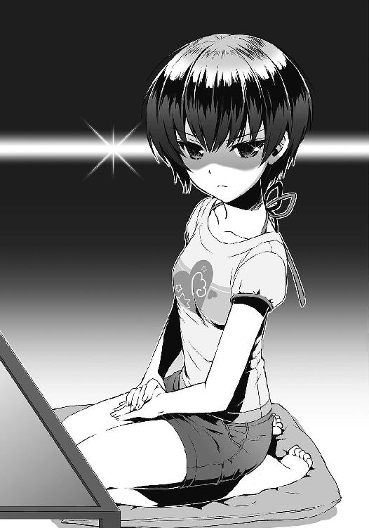
テーブルを挟んで彼女とは反対側に、黄色のクッションが置かれている。完全に待ち受けている格好だった。
「......た、ただいま」
「座ってください」
「はい」
有無を言わせないジジの語調に、21号は一も二もなく従った。
「ニーイチ、帰ったら説明すると言いましたね？」
「あ、ああ」
「では説明を。臨海公園で何をしていたんですか？ 私は用事があると聞いていましたけど」
（こ、怖え......！）
ジジの冷ややかな視線がいつになく恐ろしい。よくわからないが、今の彼女は英雄、姫宮桜の百倍は怖かった。
「実はこの前、草薙青葉がここに来てさ......」
青葉の襲来からデートの強要、ジジに黙っていた理由まで。これまでの経緯を21号は丁寧に説明した。その間、ジジは眉一つ動かさず、じぃっと21号を睨んでいた。
一通りの事情を話し終えると、彼女は言った。
「話はわかりました」
「そ、そうか」
「彼女とのデートは、あくまでも情報収集のためだと言い張るんですね」
「言い張るも何も事実だ！」
「それにしては楽しんでいるように見えましたけど」
ダメだ、全然わかっていない。21号は途方に暮れた。
「確かに収穫はなかった。けど、オレは姫宮から情報を聞き出そうとしただけだって」
観覧車での出来事が頭を掠めたが、今は忘れることにした。
ジジはしばらく黙っていたが、やがて意を決したように口を開いた。
「では、彼女に何か特別な感情を抱いているわけではないんですね？」
「特別な感情？ なんだよそれ？」
「色々考えましたが」ジジは目を逸らし、言った。「あなたは姫宮桜が好きなのではないかと」
「............は？」
彼女の言っていることがよくわからなった。今言った『好き』というのは、おそらく恋愛感情のことだろう。21号もその概念ぐらいは理解しているが、姫宮桜に対しその感情を持っているのかと訊かれれば、そんなことあるはずがなかった。
「何言ってるんだよ。そんなわけないだろ？」
「......確認します。ニーイチは、姫宮桜にそういった感情を抱いているわけではないんですね？」
「当たり前だ」
「なら、どうして怪人から逃げなかったんですか？」
ジジは言った。
その表情は、怒っているのか、呆れているのか。きっと両方だった。
「正義の味方を助けようとするなんて......彼女を好きでもないというのなら、いったい何を考えていたんですか」
「見てたのか？」
「答えてください」
あのとき、21号の体は勝手に動いた。何を考えていたのかなんて、今となってはわからない。
けれど、ただ姫宮桜を助けたかったから、というだけではない気がした。
「......英雄を倒すのはオレたちだ」
21号は呟く。
「あんないきなり出てきた奴に取られてたまるか」
ファーストラボの新生物──漆黒の狼が、自分たちを阻んだ【舞華】を難なく砕くのを見て、21号は嫉妬にも似た想いに駆られた。
無様にあがいている自分の頭上を、容易く飛び越えられた気がした。
英雄と戦えるその力が羨ましくて、自分の無力が恨めしかった。
「何やってんだろうな、オレ......」
うつむくと、そこには強く握りしめた拳があった。どこへ向ければいいのかわからない怒りだった。
顔を上げることができず、21号はしばらくの間、自分の拳を見つめていた。
ふいに、ジジの動く気配が伝わってきた。
猫のように這って彼女はテーブルを回り込み、ずいっと21号に詰め寄ってくる。
「ジジ......？」
彼女の顔が目の前にあった。凜とした瞳が、こちらをまっすぐに見つめていた。両手が21号の頬に触れる。頬を包み込んだ彼女の手は、少し冷たかった。
そして──
「いっ......いでででででででででででで！」
21号の頬が、思いっきり引っ張られた。
ぎりぎりぎりと、あらん限りの強さで引っ張ってくるものだから、21号は悲鳴を上げることしかできない。
ジジがぱっと手を離す。ようやく解放された21号は、ひりひりする頬を押さえながら涙目で言った。
「何すんだよ！」
「少しは目が覚めましたか？」
「目が覚めたかって......」
「最近のニーイチは、らしくありません。いつだって難しそうな顔をしています。夜も遅いですし」
「最後の関係あるか？」
「この前の敗北から、ずっとです」
ジジの言葉に、21号は息を詰まらせた。
「私たちは負けました。あなたがその責任を感じていることもわかっています。ですけど、あなたが今まで逃げてきた間に、私たちが何度悔しい想いをしてきたと思っているんですか。今さら一度負けたぐらいで落ち込みすぎです」
「う......」
「必死なのはわかりますけど、もう少し肩の力を抜いてください。あなたは──」
そして、彼女は呆れたように微笑んだ。
「あなたは、にやにや笑っているぐらいがちょうどいいんです」
励まされているのか、馬鹿にされているのかわからなかった。
ただ、あれほど強く握り締めていた拳は、いつの間にか緩んでいた。
「はっ。ひでえ言いようだな」
「本当のことを言っただけです」
「きっきっき！」
21号は笑った。そういえば、長いことまともに笑っていなかったような気がした。
それは確かに、らしくない。
「......ジジ。隊長ちゃんとロクロクを呼んでくれ。相談したいことがある」
「わかりました。次の戦いのことですか？」
「ああ」
彼女の問いかけに、21号は不敵な笑みで応えた。
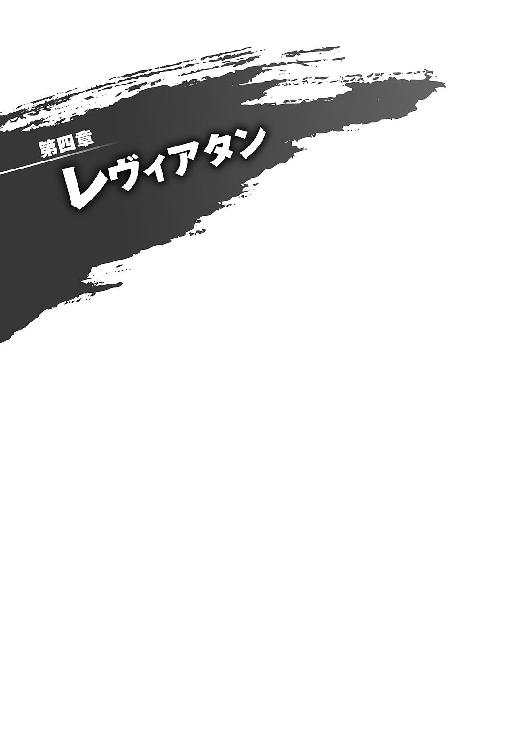
１
その日、作戦室は異様な熱気に包まれていた。
集まった戦闘員たちの顔からは覚悟が窺える。【生存者】と呼ばれる戦闘員たちは作戦について議論を交わし、経験の浅いルーキーたちは互いに「打倒英雄」の意気込みを語り合っていた。
ファーストラボの敗北から二週間が経とうとしていた。絶望的な状況は変わっていない。それでも彼らは、やはり戦う決意をした。
「やる気満々だな」
「ええ」
21号は苦笑する。動じないジジが隣にいることがありがたかった。
そのとき、前方から一人の戦闘員が近づいてきた。温厚そうな表情を浮かべた丸顔の戦闘員だ。
「やあ、二人とも」
「35号......どうかしたか？」
35号。以前【桜花隊】を率いた戦闘員で、最近ではレヴィアタンの特訓にも付き合ってくれている。
「いやあ、浮かない顔をしているなって。ダークヒーローがそんな顔してちゃあ、心配になるのは当たり前だよ」
「それはもうやめてくれ......」
「そう？ 俺は結構カッコいいと思うんだけどなあ。まあ、それはいいや。で、どうしてそんなに浮かない顔をしているんだい？」
今ここで、彼をごまかすことはいくらでもできた。仲間を混乱させないようになんて言い訳で自分を納得させて、「なんでもねえよ」と笑うことは簡単だ。
だが、彼も間違いなく仲間の一人だ。本来なら、事前に話しておくべき相手だった。
「落ち着いて聞けよ」
21号は静かに、この後の会議で話される作戦を説明した。その声は室内の熱気に紛れ、他の戦闘員たちには届かない。21号が話している間、35号は相槌一つ打たず、黙って話を聞いていた。
ようやく全てを話し終えたとき、ちょうど隊長ちゃんがレヴィアタンと一緒に作戦室に現れた。二人は戦闘員たちが空けた道を進んでいく。
レヴィアタンが21号たちの前を通り過ぎる。けれど、彼女は21号に気づいていないようだった。戦いへの決意を瞳に宿し、ただ前だけを見つめている。
「21号」
35号がレヴィアタンの後ろ姿を見つめながら言った。
「今の話、彼女は知ってるの？」
「いや、教えてない」
「俺に言う前に、彼女に話すべきだったんじゃないかな？ 怒るよ、きっと」
呆れ口調で彼が言う。その表情は、21号が予想していたのとは裏腹に、穏やかなままだった。
「やけに落ち着いてるな」
「『落ち着いて聞け』って言ったのは君だろう？」
「そりゃそうだけど......」
「ははは。うん、わかった。あまり時間はなさそうだけど、他の皆にも根回しをしておくよ」
周囲の戦闘員たちはいまだ熱に浮かされたように喋っている。だというのに、穏やかに喋る彼の声が、不思議と21号にはよく聞こえた。
「21号。君は嫌がるかもしれないけどさ。俺たちにとって、やっぱり君はヒーローなんだよ。それは、一回失敗したぐらいじゃ変わらない。俺は君を信じている。だから、君も俺たちを信じてくれ......って、これ、ロクロクがレヴィアタンに言ってフラれたんだっけ？」
彼は笑って、21号の胸を小突いた。
「しっかりやれよ、ダークヒーロー」
35号は【生存者】たちの集まっている場所に歩いていき、声を掛けた。さっそく根回しというのを始めたようだ。
それと同時に「作戦会議を始めます」と、隊長ちゃんの元気な声が作戦室に響き渡った。
「三日後に、レコードスフィアが出現します。皆さんもご存知のように今回は私たちが出撃する番です」
壇上に立つ隊長ちゃんがハキハキと話す。彼女の左後方にはレヴィアタンが立っているが、そのことを気にかけている戦闘員はほとんどいないようだった。特訓の噂ぐらいは耳にしているかもしれないが、彼らにとってレヴィアタンは依然史上最弱であり、史上最悪の怪人だった。
「ドクター・パラケルスス様の怪人は、まだ創造の準備段階とのことです。今回の戦いにも間に合いません」
隊長ちゃんが言う。しかし、それは噓だ。新しい怪人は間に合わないのではなく、創られない。
レヴィアタンは腕を組んだまま、まっすぐに前を見つめている。新しい怪人が生まれてこない状況を、彼女はどんな風に思っているのだろうか。ミクニはレヴィアタンに知られたくないと言っていたが、ごまかすのにも限界はある。
「スフィアの詳細を説明する前に、皆さんに今回の作戦をお伝えします。戦闘員21号、前へ」
「ああ」
怪訝そうな皆を横目に、21号は前に出て壇に上がった。
戸惑いを見せるレヴィアタンの前を通り過ぎ、隊長ちゃんに向き合う。彼女は子犬のように彼を見上げていた。
「ししょー......やっぱり私が......」
「オレの見せ場を取る気かよ？」
にやりと笑って、21号は仲間たちに向き直る。
やはり壇上から見える景色は気持ちがいい。自分一人に、皆の目が集まっている。
ほとんどの戦闘員はどんな作戦なのだろうかと目を輝かせていた。ただ、35号の近くにいる数名だけは、話を聞いたのか複雑そうな顔をしていた。
21号は一つ咳払いをして、声を張り上げた。
「隊長から聞いてのとおりだ。今から作戦を発表する。これしかないってぐらい、とっておきの奴だ」
期待に満ちた仲間たちの視線を受けて、21号はそれを告げた。
「レコードスフィアを確認次第、即撤退する。以上だ」
あれほど熱気に満ちていた作戦室が静まり返った。
仲間たちの眼差しは困惑で揺れていた。21号の告げた作戦の意味を、誰もが量りかねているようだった。
「えっと......それで、どうするんです？」
近くにいたルーキーの一人が、申し訳なさそうに言った。ダークヒーローの真意を汲み取れないことを恥じ入るかのようだった。
「どうもしねえよ。出撃後に撤退。それだけだ。英雄たちとは戦わない」
「逃げるってことですか？」
「ああ」
あっさり肯定すると、ルーキーは目を大きく見開き、言葉を失った。
「どういうことだ、ニーイチ!!」
今度は別の方向から野次が飛んでくる。
声を荒げたのは【生存者】の一人だった。以前の死闘を生き残った仲間が、失望をあらわに21号を睨んでいた。
「逃げるだなんて、どうしてお前がそんなことを言うんだ！ あのとき、俺たちに希望を見せてくれたお前が......俺たちを救ってくれたお前が......どうしてだ！」
仲間の批難の声から、目から、21号は逃げなかった。彼をまっすぐ見据えて、口を開く。
理由なんて、わかりきっている。
「勝てないからだ」
はっきりと21号は言い放った。作戦室にいる全員が息を呑む。
「今のレヴィアタンとオレたちじゃ、英雄たちには勝てない。だから逃げる。理由なんてそれ以外にないだろ」
「嫌よ」
凍るように冷たい声が、作戦室の空気を切り裂いた。
声のした方向は、21号の左後方。そこには、一人しかいない。
「──レヴィアタン」
ゆっくりと振り返ると、目に飛び込んできたのは、瞳にあらん限りの強さを宿した青い髪の少女だった。
「勝てないから逃げる？ 貴方、それでいいの？ 言っていたじゃない。『あいつらを倒すのはオレたちだ』って！ それなのに逃げる気!?」
「......逃げるさ」
21号は迷いを断ち切って、言った。
「無様だろうとなんだろうと逃げてやる。あいつらを倒すためならな」
「......そう」
レヴィアタンが目を細めた。軽蔑の眼差しだった。
「私は一人でだって戦うわ。逃げたいのなら勝手にして」
「今のお前じゃ勝てない。わかってるはずだ」
「前にも言ったはずよ。私は怪人なの。戦うために生まれてきた。正義の味方から逃げるだなんてありえないわ」
きっと彼女は、自分が最後の怪人だと知っても同じことを言うのだろう。無駄に生きているより戦って死んだほうがマシだと、胸を張って答えるだろう。簡単に逃げ出したジャバウォックとは、つくづく真逆の考え方だ。
しかし、そんな彼女の在り方が、魅力的なのも確かだった。
「俺も......俺も戦います！」
一人の戦闘員が叫んだ。生まれたばかりのルーキーだった。
「俺たちだって、戦うために生まれてきたんだ!!」
それをきっかけに、抗議の声が次々と上がり始めた。
「私も戦います！」
「怪人が戦うんだろう!? だったら俺らが戦わなくてどうする！」
「戦うべきです！ 今逃げたところで何も変わりません！」
騒ぎ立てる戦闘員たち。
けれど21号の目は、35号をはじめとした数名の【生存者】たちに釘づけになっていた。
彼らは騒ぐ仲間を鎮めようとしていた。必死に声を掛け、説得を試みていた。
35号に小突かれた胸が、今になって熱を帯びてくる。
しっかりやれよ、ダークヒーロー。
21号は拳を握った。
耳朶を打つ喧噪を掻き消そうと、深く、深く息を吸った。
「てめえら──！」
「静かにしてくださ─────────いっ!!」
爆発したのかと思わせるほどの大音声だった。戦闘員たちの野次も、21号の叫びも飲み込んで、一気に皆を黙らせた。レヴィアタンも目を見開いて声の発生源を見つめている。
「はーっ......はあーっ............けほっ、けほっ」
肩で息をし、咳き込む隊長ちゃんがそこにいた。
「はあっ......はっ......ししょー、レヴィアタンさん......」
「......」
「なによ」
「勝負......しましょう」
決然と、彼女が言った。
「ししょーと、レヴィアタンさんで、勝負です。負けたほうは、勝ったほうの言うことをなんでも一つ聞く。どうですか？」
その提案は、以前レヴィアタンに料理をさせることになった勝負と同じものだ。そして、戦闘員である21号に今なお勝てないようなら、英雄にも勝てるわけがないという挑発でもあった。
「面白え。オレは構わないぜ」
そう言って、21号はレヴィアタンを見る。彼女は冷たい眼差しを向けたまま、つまらなそうに息を吐いた。
「......いいわ。乗ってあげる」
隊長ちゃんがこくりと頷く。そして彼女は、作戦室に集まった仲間たちのほうを向いた。
「皆さんも！ ししょーの......21号の作戦に従うかどうか。戦うか逃げるか。二人の勝負を見てから決めてください！」
仲間たちの中には、何かを言いたげな者も数名いたが、隊長ちゃんの鬼気迫る姿に押されたのか、うなだれるようにして黙ってしまった。
隊長ちゃんが21号に向き直り、心配そうに呟いた。
「ししょー......これでよかったんですか？」
「ああ。上出来すぎるぐらいだぜ」
21号は笑って、彼女の頭を軽く撫でる。
レヴィアタンとの決闘は、あらかじめ隊長ちゃんに頼んでいたことだった。今のところ予定どおりに事が進んでいる。
問題はここからだ。
「さーて、弟子にいいとこ見せなくっちゃな」
不敵な笑みをつくり、21号はレヴィアタンを睨みつけた。
２
訓練場の中央で、レヴィアタンは一人の戦闘員と向かい合っていた。
数メートル先に黒髪の少年が立っている。戦闘員21号。その瞳は余裕を宿し、口元には不敵な笑みを浮かべていた。いくら観察しても、彼が何を考えているのかわからない。だが、わかる必要もなかった。やることはもう決まっている。
広い室内の壁際には、レヴィアタンと21号の戦いを観戦しようと、戦闘員たちが集結していた。これから行われる対決の一部始終を彼らは目にし、どちらが強者なのかをその目に焼きつけることだろう。屈辱を受けた、あの日と同じように。
ロクロクとの戦いの記憶は、今思い出しても悪夢のようだ。医務室で目を覚ましたとき、21号に容赦なくからかわれたことを思い出す。あの日のことは、死ぬまで忘れないだろう。
──オレがお前を強くしてやるよ。
不意に蘇った声を、レヴィアタンは咄嗟に打ち消そうとした。けれど記憶の中の21号が、今向かい合っている彼とどうしても重なる。
あのときの彼も、今みたいに笑っていた。イタズラを楽しむ子供のように。
「ルールを確認します」
隊長ちゃんが言った。彼女はレヴィアタンと21号の中間に立っている。
「相手を降参させるか、戦闘不能にさせたほうの勝ちです。敗者は勝者の言うことをなんでも一つ聞くこと。いいですね？」
「レヴィアタン。オレが勝ったら、許可なく英雄たちと戦うことを諦めてもらうぜ」
「......隊長さん、一つ質問があるんだけど」
彼の声を無視し、レヴィアタンは隊長ちゃんに言った。
「はい、なんでしょう」
「相手が死んだときはどうすればいいの？」
隊長ちゃんが絶句し、21号のほうを振り返った。彼は笑みを浮かべたまま、代わりに答えた。
「お前が勝ったときに何を命令したいか。それにもよるだろ」
「別に何も。私は私の力を証明するだけ。私が勝っても、あなたに英雄との戦いを強制するつもりはないわ。逃げたければ、勝手に逃げればいい」
「はっ、そうかよ。じゃあ、そっちも勝手にしろよ。どうせ、死んだらお前を止めることもできないしな」
レヴィアタンがいくら睨みつけても、21号は飄々とした態度を崩さない。
甘く見られている。そのことが無性に悔しく、そして悲しかった。
「21号。さっき、勝てないから逃げるって言ったわね」
「ああ」
「だったら、今すぐ逃げなさい」
彼はますます笑みを深くした。まるで牙を剥くように、笑う。
──戦闘開始。
「「変身！」」
瞬間、渦巻く水がレヴィアタンの体を包み込んだ。轟然と流れる水が視界を覆い、けれどそこに音はない。周囲から切り離された静謐な水の世界に、彼女は一人たゆたっていた。体が創り変えられていく感覚。滾る血流と共に力が全身へと行き渡る。
水の世界が弾けた。飛沫が宙を舞い、視界が開ける。
前方には、同じく変身を終えた戦闘員21号の姿があった。フルフェイスメットのような流線型の頭部に、紫黒色のインナースーツを纏ったかのような体。体を覆う外骨格は鋼色をしていて、唯一の武器ともいえる右手の爪を形成している。
他の戦闘員となんら変わらない。ジジやロクロクたちとの特訓でもう見慣れた姿だった。
「来いよ、レヴィアタン」
そんな彼が挑発してくる。いつまで余裕でいられるか見物だった。
「最近の訓練だけど......私、本気を出せてなかったの」
言いながら、レヴィアタンは掌を上に向ける。虚空から引き出された水が渦を巻き、徐々に膨れ上がっていく。それを見て、21号が構えを取った。
彼にはサッカーボール程度の大きさまでしか見せたことがない。しかし、今生み出した水量は、明らかにその十倍はある。
「本気でやったら、戦闘員を殺しちゃいそうだったから」
告げると同時に、レヴィアタンは右手で虚空を薙いだ。
球状の水が鋭く形を変え、高速射出される。
「ぐっ──！」
避ける暇は与えなかった。レヴィアタンの操る水は21号の腹部に衝突し、その圧力で彼を体ごと吹き飛ばした。紫黒色の体が床を無様に転がっていく。
「ねえ、21号......」
レヴィアタンは呟く。訓練場が驚愕の声に包まれる中、誰にも聞こえないよう、囁くように、石畳の上に倒れた戦闘員に語りかける。
「私、強くなったのよ」
21号が床に手をついた。愉快気に肩を震わせながら、ゆっくりと立ち上がる。
「きっきっき......これが本気か？ こんなもんで、お前は正義の味方と戦うつもりなのかよ？」
彼の声を耳にしながら、レヴィアタンは再度水を生成し、さきほどよりもさらに一回り大きい球体を紡ぎ出す。しかし、21号は動揺することなく言い放った。
「笑わせんな。やっぱり今のお前を戦わせるわけにはいかねえな」
「うるさい！」
水の杭。
内部で圧力を高めた水を球体の一点から放出する。生成した水を自在に制御する力を応用して、高出力での射出を可能にする技だ。ジジと一緒に考え、ロクロクが勝手に名前を付けた。
迎え撃つ戦闘員は、最低限の動きでそれを回避した。挑発に乗せられてタイミングを読まれたのだ。
21号が猛然と駆けてくる。彼には遠距離、中距離での攻撃手段がない。必然、間合いを詰めなくては勝負にならない。
水の力で迎撃することもできたが、レヴィアタンはあえて彼の間合いで戦うことを選択した。
小賢しい策や、小細工なんていらない。怪人として、戦闘員を力で捩じ伏せる。それがこの戦いで彼女が成すべきことだった。
両手の爪を構える。
21号が目の前まで来ていた。彼の右手には、爪のように鋭く伸びる外骨格。
突き出された強靭な爪を、彼女も腕を振るって弾く。衝撃が肩まで響いた。
幾度となく交錯し、ぶつかり合う両者の爪。立て続けに鳴る衝突音。
圧しているのはレヴィアタンだった。戦闘員と違い爪を両手に持っているから、というだけではない。単純な身体能力そのものが、今や21号を完全に上回っていた。食らいついてくる彼に驚きを覚えるほどに。
一際大きな衝撃音が鳴った。
21号の右腕を跳ね上げる。彼が体勢を崩した瞬間を、レヴィアタンは見逃さない。
「ねえ。戦いたくないのよね？」
「っ......！」
戦闘員には再生能力がある。それは、体の一部を損傷したとしてもいずれ修復できるほどのものだ。だが、過度の損傷──たとえば腕一本がなくなるほどの怪我であれば、再生槽に入り、長時間を掛けて修復することになる。三日後の出撃には間に合わない。
「それなら、戦えなくしてあげる！」
下から爪を振り抜き、力任せに21号の右腕を斬り裂いた。肩口から先、斬り離された腕が宙を飛ぶ。
悲鳴を堪えた21号を、レヴィアタンは至近距離からのウォーターパイルで追撃した。最大出力で放たれた一撃は、片腕を失った戦闘員の体を壁まで吹き飛ばした。同時に、彼の右腕が地面に落ちて黒い霧となって消えていった。
観戦をしていた戦闘員たちが口を半開きにし、呆然と決着を見つめていた。彼らの中から隊長ちゃんを見つけ出し、レヴィアタンは告げる。
「私の勝ちよ。約束どおり好きにさせてもらうわ」
「まだです」
そんなレヴィアタンを諌めたのはジジだった。
「まだです、レヴィアタン。ニーイチはまだ負けていません」
「何を言って──」
レヴィアタンは吹き飛ばした21号に目をやり、驚愕した。
「ジジの言うとおりだ。勝手に終わらせてんじゃねえよ」
壁にもたれかかって体を支え、こちらを睨みつけている21号がいた。
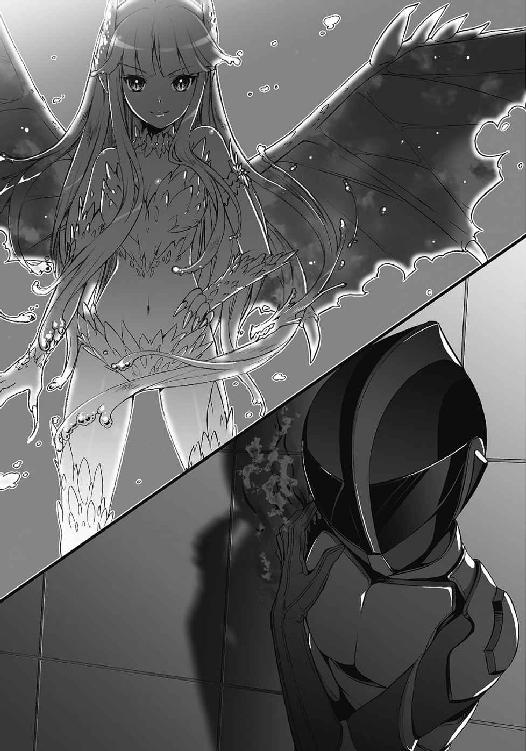
彼の姿を見た瞬間、レヴィアタンはひどい違和感に囚われた。
声は紛れもなく21号のものだ。姿形も戦闘員のものと変わらない。流線型の頭部に外骨格に覆われた体。見慣れた容貌。
けれど、その全身が暗く変色していた。
インナースーツを纏ったかのような体は漆黒に、外骨格はくすんだ色に変わっている。まるで影に浸食されたかのような有様だ。
そして何より、
「......どういうこと？」
斬り裂いたはずの右腕がそこにあった。
何事もなかったかのように、彼の肩には腕が生えている
戦闘員の再生能力は、失くした腕を再生槽の力を借りずに修復できるほどのものではないはずだ。ましてや、目を離したわずかな時間で再生を終えるなんて、そんなことはありえない。
「きっきっき。驚いたかよ？」
「そう......それが余裕の理由ってわけ」
しかし、現に今、斬り裂いたはずの右腕を21号は有している。理由はわからないが、失くした腕を瞬時に修復するほどの再生能力を彼は持っているのだ。そう考える他なかった。
だが、それだけだ
笑う21号に、レヴィアタンは冷笑を返す。
「そんなもので私に勝つつもりなの？ 治るだけの力で？ 笑わせないで」
「やってみなくちゃわからない。だろ？」
どの口がそれを言うのか。馬鹿にするにもほどがある。
レヴィアタンは生成した水の形状を変化させ、鞭のように横に振るった。打ちつけられた漆黒の戦闘員が石畳の上を転がった。
「諦めなさい、21号。いくら再生しても、何度向かってきても、力の差は変わらないわ。貴方じゃ、私には勝てない」
「やって......みなくちゃ......」
ゆらりと立ち上がった21号を、ウォーターパイルで吹き飛ばす。壁に叩きつけられた彼から苦悶の声が漏れ、床に倒れ込んだ。
彼の全身から微かに闇が立ち上っていた。耐えうるダメージを超えたホムンクルスの細胞が、黒い霧と化して宙に融けていく。それが何なのか、レヴィアタンは知っている。周りの戦闘員も知っているはずだ。
本来は、命の消滅を示す霧だ。
「きっきっき......！」
だというのに、彼は笑った。全身に死の闇を纏わせて。心底楽しそうに、その両足で地を踏みつける。
「こんなもんかよ、レヴィアタン！」
「いい加減にっ！」
水流を連続で射出する。
だが、いくら吹き飛ばしても、何度打ちつけても、彼は必ず立ち上がった。再生するとしても、その瞬間に受ける衝撃はなくならないはずなのに。
──どうして。
わからなかった。どうして彼はここまでするのだろうか。
彼は臆病者のはずだ。勝てないからと、立ち向かうべき正義の味方に背を向ける、生きたいだけの戦闘員のはずだ。
逃げたいのなら勝手に逃げればいい。だからこそ、こちらが勝ったからといって彼に戦いを強制しないと、そう告げた。
彼の腕を斬り裂いてまで、戦わせないようにした。
なのに、どうして立ち上がる？
「負けを認めなさい、21号！」
気がついたときには叫んでいた。あらん限りの声を振り絞り、訴えていた。
「勝ち目がないのはわかるでしょう!? どうして立ち上がるのよ！」
「......ここでオレが倒れたら、お前が死ぬだろうが」
21号がゆらりと立ち上がり、言った。思わず攻撃の手が止まった。
彼は一歩ずつ、おぼつかない足取りでこちらに近づいてくる。体に損傷がなくとも、精神にダメージが蓄積しているようだった。
「お前だけじゃない。そこにいる奴らも、今戦えば大勢消えちまうんだよ。何もできずに、消えちまうんだ」
「私はそれでいいと言っているわ！ 戦いで死ねるなら──！」
「本望か？ ......ああ、そうだろうな！ そうだろうよ！」
21号が吼えた。レヴィアタンは思わずびくりと身を竦ませる。
「いつだってそうだった!! 本望だとか誇りだとか勇ましいこと吼えながら、てめえらは考えなしに突っ込んで消えていくんだ！ 勝つ気あんのかよ!? オレたちは死ぬために戦ってるのか？ 違うだろ！ 勝つためだ！ オレたちは勝つために戦ってるんじゃねえのかよ!?」
訓練場に21号の叫びが響く。気がつけば、彼はレヴィアタンの前まで近づいてきていた。
「死なせねえぞ、レヴィアタン。オレたちは勝たなくちゃいけねえんだ。そのためなら何度だって立ち上がるし、何度だって言ってやる。今のお前じゃ、英雄には勝てない！」
「っ！」
レヴィアタンは21号を押し倒した。彼の上に乗り、頭部に爪を突きつける。
わずかな間、沈黙が支配した。
大勢の戦闘員の集まるこの空間が、不思議なほどの静寂に包まれていた。
「頭を潰せば、さすがに死ぬかしら？」
「......やってみろよ」
軽快な口調で彼は答えた。
逆転する算段があるようには見えない。殺されないと確信しているはずもない。だというのに彼が余裕でいるのは、どうしてなのだろうか。
「..................戦闘員のくせに」
最後まで彼は逃げようとしなかった。
レヴィアタンは立ち上がり、仰向けに倒れた21号を見下ろす。
傷一つ受けていない怪人と、地に伏した戦闘員。傍から見れば、どちらが強者なのかは明らかだった。
けれど、彼女は気づいてしまった。
今回の戦いで、自分が英雄に勝つつもりがなかったことに。
もはやレヴィアタンには、21号を殺すことも、負けを認めさせる気も起きなかった。
「私の負けよ」
ため息混じりに声を掛けると、彼はいつものように笑い、
「オレの勝ちだな」
そう言い残して、ようやく気を失った。
３
「無茶をしすぎだ、馬鹿」
医務室で目を覚ましてすぐに、21号はミクニの説教を受けることになった。一方、ベッドの傍らにある椅子にはジジが腰掛けていて、無言で怒りをぶつけてきている。21号はできるだけ彼女のほうを見ないよう、ミクニの話を聞いた。
「あんたの【異常再生】はわかっていないことが多いんだ。あんまりあてにするんじゃない」
異常再生。
失くした腕さえも瞬時に修復するほどの、それこそ異常な再生能力。それは、以前に巨大化霊薬を飲んだことが原因らしかった。
戦闘員が怪人用の秘薬を口にして、今なお生きていること自体、ミクニに言わせれば一つの奇跡らしい。そうして生還した21号の体には、以前とは明らかに変質した点があった。異常再生の発現。過度なダメージを再生した際の変色。いずれもエリクサーを飲んだことによる【後遺症】と思われる。
「脅すわけじゃないけど、完全に再生しているように見えて、少しずつ何かが歪んでいっている可能性もある。だいたい、今回のことでよくわかっただろう？ 怪我が治るだけでダメージを受けないわけじゃないんだ。下手をすれば精神から先に壊れるよ」
「痛みを消す薬とかないのか？」
「使うなと言っているそばからそれか......。なくはないけど、思考と運動能力に支障が出る。それにエリクサーがどう作用しているかもわかっていないのに、別の薬を投与するのは危険だよ。とにかく無闇に乱用しないこと。いい？」
「んなこと言ったって、勝手に再生するんだから仕方ないだろ。とりあえず生きてんだからいーじゃねえか」
「よくありません」
口を挟んできたのはジジだった。
「『レヴィアタンには絶対勝てる』『秘策がある』『オレを信じろ』......全部あなたが言ったことです。覚えていますか？」
「ああ」
「完敗でしたけど」
「勝ったのはオレだぜ？」
「ふざけないでください。あれでは自分から死ににいったようなものです。もし彼女が本当に頭を潰してきたらどうするつもりだったんですか？」
「別に何も」
「え？」
「オレが死んだら死んだで、あとは他の奴らがなんとかしてくれただろ。レヴィアタンの成長を見せつけることはできたからな」
レヴィアタンは怪人だ。本来勝利の象徴となるべきは彼女であり、名前だけのダークヒーローではない。
さっきの戦いで戦闘員たちのレヴィアタンを見る目も変わる。ロクロクにあっさりと負けた彼女しか知らない皆にとって、その成長速度は驚嘆に値するものだったはずだ。
今の皆なら絶望に囚われることなく、勝つための行動に臨むこともできるはずだ。そうでなくては、死にかけてまで引き立て役になった意味がない。
「そんな話、聞いていません」
「言ったら怒るだろ？」
「当たり前です」
ジジがむっとしていた。そんな彼女が面白く、21号は肩を揺らして笑う。
「何を笑っているんですか」
「にやにやしているぐらいがちょうどいいんだろ？」
ジジはいらないアドバイスをしたと後悔しているのか、諦めたようにため息を吐いた。
「あとは、レヴィアタンが素直に従ってくれるかですね」
「......ああ」
確かに彼女は強くなった。だが、英雄たちにはまだ遠く及ばない。臨海公園での戦いを見たのなら、レヴィアタンもそのことは理解しているはずだ。まだ出撃の意志を崩さないようであれば、また別の手段で阻止する必要がある。
仲間としても、戦力としても、彼女を失うわけにはいかない。正義の味方を倒すには、悪の怪人が必要だ。
21号は、ちらりとミクニを盗み見た。
整頓されたデスクの前。物憂げな表情で虚空を見つめる彼女は、何かを思い出しているかのようだった。
４
その日の深夜。
二段ベッドの上段に寝転び、21号はぼんやりと天井を見上げていた。いつもならとっくに夢の中にいるはずなのに、どうしても寝つくことができない。
「ジジ......起きてるか？」
呼びかけてみるが、返事はなかった。暗い部屋に自分の声が響いただけだ。
21号は布団を剥いで身を起こすと、梯子を伝ってベッドから下りた。
下段のベッドを覗き込むと、ジジがすこやかな寝息を立てていた。いつになく無防備な彼女を見て、ついイタズラをしたくなった。
ジジの頬に手を伸ばす。
指先が触れる直前で、ジジの口が動いた。
「ダメです、ニーイチ......」
消え入るような細い声だった。寝言だと気づいて、21号は声を出さずに笑った。夢の中でも怒られているらしい。イタズラはやめ、彼女の髪をそっと撫でた。
ベッドから離れ、21号はベランダに向かった。ジジを起こさないように静かに窓を開け、外へ出る。
涼しげな夜気が爽快だった。見上げる夜空には雲一つない。星が柔く瞬き、煌々たる下弦の月がその身に穏やかな輝きを宿していた。
静かな夜だった。まるで、あの日のように。
「......誰？」
突然聞こえてきた声に21号は驚いた。その声は取りつけられた壁の向こう側、隣のベランダから聞こえてきた。
「レヴィアタンか？」
呼びかけると、壁の向こうからひどく不機嫌そうな声が返ってきた。
「21号？ どうして貴方まで出てくるのよ」
「お前こそ、何してんだよ」
「......別に」
空を見上げて、21号は怪人に話し掛ける。
「勝負はオレの勝ちだ。約束は守ってもらうぜ？」
「わかってるわよ」
彼女が拗ねたように言った。
「ようするに、戦いたければ強くなれってことでしょ。今に見てなさいよ。絶対に驚かせてやるんだから」
「言うじゃねえか」
レヴィアタンの答えに21号はにやりとする。
「史上最強の怪人になれよ。期待してるぜ」
「......馬鹿にしてる？」
「してねーよ」
「そう。なら、いい」
彼女が安堵したように言った。
「......ねえ。パラケルススが創った怪人......ジャバウォックのことなんだけど」
「なんだよ、いきなり」
「いいじゃない別に。それで、どうなの？ やっぱり、すごく強かったわけ？」
唐突な話題に戸惑う。だが、他でもないジャバウォックについての質問に適当に答えるわけにはいかなかった。
「強かったぜ」
21号は言った。
「ファーストラボがどんな化け物を創ろうがそんなの目じゃない。あいつは──ジャバウォックは史上最強だった。一緒に戦ってれば英雄にも勝てたって......オレはそう信じてる」
「............そう」
壁越しに、からからと、窓の開かれる音がした。どうやら部屋に戻るらしい。
──おやすみ、21号。また明日。
脳裏をよぎったのは、赤い髪の少女。あの日部屋の中へ消え、そのままいなくなってしまった彼女の後ろ姿だった。
「レヴィアタン！」
「......何？」
思わず呼び止めてしまったが、掛けるべき言葉が見つからず、取り繕うことしかできなかった。
「......明日、訓練場に来いよ。久しぶりにオレも特訓に付き合ってやるからさ」
「ほんと？ 貴方なら本気でやっても大丈夫そうね」
「待て。手加減してくれ」
「嫌よ」
おかしそうに彼女が言い、窓の閉まる音がした。
ベランダに残された21号は、胸にわだかまる不安を紛らわせようと、しばらく一人で夜空を見上げていた。
５
姫宮桜が戦士待機室に入ると、草薙隼人がソファに寝転がって携帯ゲーム機で遊んでいた。
「......うわっ！」
彼は桜に気がつくと、どうしてか慌てて身を起こし、居住まいを正した。
「は、早いですね。桜さん」
「うん。勉強も進んだし、ちょっと気分転換したくて」
「勉強」隼人が顔をしかめる。「真面目すぎるよ、桜さんは」
「そうかな？」
「そうだよ。まあ、そういうところも俺はス──素晴らしいと思うけど、うん」
「ありがとう......？」
よくわからないけれど、なんだか隼人の顔が赤い気がする。心配になり、桜は彼の隣に座った。
「さ、桜さん!?」
「大丈夫？ 顔、赤いよ？」
「平気平気！ ぜんっぜん大丈夫だから！ そうだ、今日どうして呼ばれたか知ってる!?」
「う、ううん」
「黄瀬さんから聞いたんだけど、デバイス召喚が少し改良されたらしいよ。今日はその話だって。ほら、この前の狼みたいな奴には出力足りなくてダメだったって、桜さん言ってたじゃん」
隼人が無邪気な笑みを見せる。彼は昔から、新しい装備や鎧の改良の話を聞くと目を輝かせていた。男の子だからかな、と桜は思う。
「そういえば、次のスフィアもそろそろ出てくるころか......」
隼人が言った。
「アルスマグナ、今度はどんなので来るかな？ 最近は戦闘員だけで来たり、変な怪獣出してきたりで、何してくるかよくわからないし。まあ、それでも勝つのは俺たちだけど」
「......私、隼人君のことすごいと思う」
「え!?」
隼人が目を見開き、桜をまじまじと見つめた。彼女は微笑んで、素直な気持ちを口にする。
「あんなことがあって......もしかしたら死んでいたかもしれないのに、隼人くんは今も逃げずに戦ってるから」
「......すごくなんてないよ」
隼人は言った。
「正直言って、結構怖いんだ。戦ってるときも、たまーにあのときのことがちらつくし。でも、逃げるわけにはいかないじゃん。だって俺は、正義の味方なんだから」
彼の笑顔は力強かった。恐怖なんて感じさせないほどに。
「隼人君は、どうして戦ってるの？」
訊ねてみると、隼人は少し考えてから「俺と姉貴って、孤児院で育ったんだ」と言った。
「何がよくなかったのか、そこで俺、いじめにあって。いや、いじめっていうのかな。子供から大人まで、殴る蹴るは当たり前。ご飯だってろくにもらえない。俺、気が弱かったし、あのときは今みたいに強くもなかったから何もできなくて。隠れる場所を探す毎日だったよ。今思い出しても、あれは最悪だった」
そう言う彼は、けれど誇らしげに続きを話す。
「でも、俺の代わりに姉貴が戦ってくれたんだ。姉貴だってまだ強くなんてなかったのに、俺の代わりに殴られて、俺の代わりにご飯を我慢して。どんなにきつくても......今みたいに笑って俺を守ってくれた。あの姉貴がだよ？ 信じられる？ あのとき、姉貴だけが俺の味方で、正義の味方だったんだ」
「隼人君......」
「だから俺は戦う。自分にしかできなくて、俺が逃げたら誰かが困るっていうんなら、それはやらなくちゃだめだと思うんだ」
そう言って彼は、恥ずかしそうに、はにかんだ。
「今の話、姉貴には黙っててよ。あいつ、すぐ調子に乗るからさ」
青葉は前に言っていた。
──好きなことを好きなようにやれて、嫌なことを思いっきり嫌がれるのって、すごく楽しいことだと思わない？
きっと、それができなかった過去があったからこそ、彼女は今が楽しくて仕方ないのだろうと桜は思う。やっぱり二人は、いい姉弟だ。
待機室のドアがスライドした。中に入ってきたのは、緋崎、青葉、黄瀬の三人だ。
「あれ、早いじゃない二人とも。何してんの？」
「内緒の話です」
「えー、あやしー。あ、そうそう桜」
テーブルの椅子に腰掛けた青葉は、跳ねるような声色で、
「結局、黒野とのデートはどうだったの？」
「へっ!?」
想定外の質問を浴びせてきた。皆が一斉に目を丸くする。
「ちょ、ちょっと青葉さん！ 急に何を言い出すんですか!?」
「だって、ぜんっぜん桜が教えてくれないんだもん。もう皆の前で問いつめるしかないかなって」
「理由になってません!!」
隣に座る隼人が、顔を何度も往復させて桜と青葉を交互に見た。ぱくぱくと口を開け閉めしたかと思うと、勢いよく立ち上がる。
「ちょちょちょちょ、ちょっと待った!! デート？ え!? デート!? 何それなんの話!?」
「んー？ だめだめ、隼人には刺激が強すぎる」
「なんだよそれ......って、え？ ええ!? さ、桜さんもしかして!?」
「ち、違うの！ なんていうか、あれは成り行きで......！」
「成り行き!? 成り行きでまさかそんな!?」
「違います！ そういう話じゃないのっ！ もう、青葉さん！ 誤解させるようなこと言わないでください！」
憤慨する桜。隼人はもはや気が抜けてしまっているようだった。
「青葉......お前......なんのために集まったと思ってる......」
救いの手を差し伸べてくれたのは、黄瀬大地だった。
「もう。まーたあんたはそうやって。たまにはこういう息抜きも大事よ？」
「楽しんでるのは青葉さんだけです！」
「俺も結構気になるけどな」
緋崎が笑った。
「黒野って彼だろう？ 前に俺たちと話した。そうか、姫宮はああいうのがタイプだったか。意外だな」
「緋崎さんまで！ からかわないでください！」
顔が熱い。鏡を見なくても真っ赤になっていることがわかる。
隼人はなぜか狼狽えっぱなしだし、黄瀬は諦めたのか、椅子に座って文庫本を開いてしまった。
「で、桜。その後はどうなのよ？ あれから結構経つけど、あいつとは会ってるわけ？」
「あ、会ってません！ 連絡先も知りませんし......」
「ええ？ なんで？」
「だって、怪人──怪獣が来て、それどころじゃ」
「ということは」緋崎が笑った。「あの狼が来なかったら、連絡先を訊きたかったということか」
彼の口調は嫌らしさ一つ感じさせず、どこまでも爽やかだったが、むしろそれが恥ずかしくて桜は頬を赤くしたままうつむいた。
待機室にある巨大ディスプレイが点いたのは、そのときだ。
はっとして、全員がディスプレイに目を向ける。画面には地図が映されていた。地図中には一カ所だけ×が記されており、周りに建物や道路の表示はなかった。かわりに、等高線が何本も引かれている。山の中だ。
画面の表示が何を意味するのか、この場にいる全員が知っている。
桜は頭を振って頬の火照りを振り払い、気を引き締めた。同時に、室内のスピーカーから声が聞こえてくる。
『全員いるな？ レコードスフィアの出現を検知した』
英雄機関総司令・神原孝四郎の独特な低音声が、桜たちに出動の命を告げた。
６
もうもうと舞う土煙は、やがて風に流され消えていった。
砂利だらけの地面にできた小さなクレーター。その真上に、穏やかな輝きを放つレコードスフィアが浮いている。
21号は身を隠していた岩壁の陰から出ると、山の上からこちらを観察しているはずのジジに対して〈通信〉を行った。
『戦闘員21号から22号へ。レコードスフィアの出現を確認したぜ』
数日前になされた予測どおり、今回の出現ポイントは山の中だった。落下地点は開けた場所で、周囲にはあまり緑がない。登山者も見当たらず、せっかく戦闘態に変身しているというのに人間たちの悲鳴を聞くことができなかった。
「ったく、つまらねえとこに落ちやがって......」
『ニーイチ。早く回収作業に移ってください』
『わかってるって』
気を取り直して、21号はスフィアに近づいていく。ジジの〈全体通信〉が頭の奥で響き渡った。
『戦闘員22号から全戦闘員へ。スフィアの出現を確認。これより回収作業に移行します。各員、警戒態勢を』
21号以外の戦闘員は、あらかじめ指定された半径１キロ圏内の場所に散らばっている。英雄たちが向かってきたときには、彼らから21号とジジに報告が行くことになっていた。
星の瞬きにも似た輝きを放つレコードスフィア。その前で立ち止まった21号は、左手に短い筒状の装置を出現させた。装置の上部には、ちょうどスフィアが入る程度の穴が開いている。
──レコードスフィアを確認次第、即撤退。
21号の作戦は、やはりスフィアが『ハズレ』であることが前提だ。もし『アタリ』だった場合には、スフィアの判別だけでなく、検知から逃れるコーティング処理も行う必要がある。処理に掛かる時間を考えると、英雄たちとの交戦を避けられない可能性が高い。
21号はレコードスフィアを掴んだ。輝きが弱まると同時に、手の中にずしりとした重みが収まった。
不思議な感覚だった。スフィアに触れる右手が、仄かに熱を帯びている。
装置の中にスフィアを納めると、自動的にシャッターが閉まった。スフィアの判別が開始される。
仲間からの報告が入ってきたのは、それから数分後のことだった。
『こちら戦闘員４号！ 南東方向から英雄。距離八〇〇。来ます！』
『......了解』
想定よりも随分早い。だが、まだ〈転移〉で逃げる時間はある。スフィアがハズレでありさえすれば。
直後、装置の一部が赤く点灯した。シャッターが開き、スフィアの輝きが再び目に入る。
判別結果はレッド。それはつまり──
『ハズレだ』
21号はスフィアをひょいと放り投げる。手の中にあった重みが噓のように、スフィアは重力を忘れてふわりと宙に浮かんだ。
ハズレの場合、回収のためのコーティング処理は行われない。すぐに英雄たちはここに集まってくるだろう。
21号は意識を集中し、すぐさま〈転移〉を開始する。とりあえずはジジのところへ。あらかじめ設置しておいた【ゲート】の生体反応を探る。
英雄の姿を見ることがないまま、21号は闇の中へその身を消した。
†
初めに感じたのは、土と木の匂いだった。
〈転移〉の闇が晴れると、21号は木陰の下にいた。周りには木々が生い茂り、足下に敷き詰められた落ち葉の間からは湿った土が覗いている。
「おつかれ様です」
ジジは木々の間に立っていた。その先は崖になっているようで、陽光がこちらに漏れ出してきている。
21号は変身を解き、彼女の横に並んだ。
「来ました」
崖の下には森があり、そこを抜けた先にさっきまで21号がいた場所が見えた。鎧を身に着けた五人の英雄が、その場に駆け込んでくる。
彼らはキョロキョロと周囲を見渡していた。きっとまた罠ではないかと疑っていることだろう。残念ながら、彼らの期待に応えることはできない。
前回と同じく、〈金剛〉がスフィアに向かって歩き出した。
「作戦完了。撤退だ」
21号の言葉に彼女が頷き、〈全体通信〉を行った。
『戦闘員22号から全戦闘員。作戦完了。各自、速やかに地下基地に転移せよ。繰り返す。各自、速やかに────』
淀みのなかったジジの声が、突然詰まった。
目の前にいる彼女は、目を見開き、呆然と崖の先を見つめている。
「どうして......」
彼女の呟きに引かれるように、21号も崖の先を見下ろした。
しなやかに翼を羽ばたかせる一人の怪人が、レコードスフィアの傍らに舞い降りた。
頭の両脇から伸びる二本の角。サファイアのように澄んだ鱗が、肢体と翼を覆っている。五つの鎧と対峙した怪人は、その場にいてはならない彼女だった。
「レヴィアタン......」
その声は、当然彼女には届いていない。
レヴィアタンはスフィアを手に取ると、ゆっくりと翼を動かし始めた。
英雄たちが身構える。
彼女は戦う気だ。
戦うなという約束も、もっと強くなって驚かせるという意気込みも、あの日ベランダで交わした言葉は、全部噓だったのだ。
「............違う」
無意識のうちに21号は呟いていた。
何かがひっかかっていた。何か、あまりにも愚かな見落としをしている気がした。
21号の頭の中を、いくつかの記憶が流れていく。
「最近、レヴィアタンも私がなかなか創らないことを疑い始めてる」
医務室でミクニはそう言っていた。
レヴィアタンは、ミクニが怪人を創らないことをどう思っていたのだろうか。
「お前にあいつらを倒せるか？」
ファーストラボが敗れた日。
マンションの部屋の前で会った彼女は、その問いに答えなかった。
「パラケルススが創った怪人......ジャバウォックのことなんだけど」
そして、ベランダでの会話。壁越しに彼女は言った。
どうして彼女は、いきなりジャバウォックのことを訊いたのか。
彼女はいったい、何を確認したかったのか。
「やっぱり、すごく強かったわけ？」
あのとき21号は迷いなく答えた。
強かった、と。
ジャバウォックは──ドクター・パラケルススの創った怪人は、紛れもなく史上最強だった。
そう答えた。
「変身ッ!!」
咆哮と共に噴出した闇が21号を覆った。全身が創り変えられていく。待っていられず21号は地を蹴った。闇を抜け、崖から飛び下りる。岩と緑の入り混じる山の景色が下方に広がった。
「ニーイチ!?」
「みんなに連絡してくれ！」
崖を半ば転げ落ちるように駆け下りて、緑の覆う場所に突っ込んだ。戦闘態となった体を木の葉が擦り、次々と枝が折れていく。
勢いのまま、21号は落ち葉の敷かれた土の上を転がった。すぐさま立ち上がり、再び走り出す。
木々の合間を縫い、小枝を踏み折りながら森の中を必死に駆け抜ける。
もしかしたらレヴィアタンは、あまりにも間抜けな勘違いをしているのかもしれなかった。ベランダで話したとき、壁の向こうのレヴィアタンはどんな顔をしていたのだろうか。今ならそれがわかる気がした。たぶん彼女は、寂しげに笑っていた。
クレーターの場所まで戻ってきたが、すでに怪人も英雄もいなくなっていた。
上空遠方に一つの影。
レヴィアタンが空を飛行し、21号のいる場所から離れていく。英雄たちも彼女を追いかけていることだろう。
彼女は21号が助けに来ることを見越して、戦いの場所を変えたのだ。
「ふざけんな！ オレはまた......また何もできねえのかよ!!」
21号は吠えた。
レヴィアタンが英雄たちの前に現れた理由。
それはきっと勝利するためではなく、そして、怪人としてのプライドのためでもなかった。
彼女は、殺されるつもりだ。
７
その身で風を切り裂いて、レヴィアタンは快晴の空を飛翔する。
英雄たちが下方に広がる森を通って追ってくる。
時折森の中から放たれる銃弾を回避しながら、レヴィアタンはある場所を目指して飛び続けた。
といっても、目標地点に罠が仕掛けてあるわけではない。監視任務についている戦闘員がいなくて、思いきり戦える場所ならどこでもよかった。
そこが自分の、死に場所だ。
†
あの日、彼女はフラスコの中にいた。青白く発光する液体が体を包み込んでいて、とても静かだった。
フラスコの光が照らす室内。ガラスの向こう側に、白衣の美女が立っていた。ブロンドの髪を無造作にゴムでまとめたその女性は、黒縁の眼鏡を通して挑むような眼差しを投げかけ、言った。
「目覚めはどうかな、レヴィアタン？」
（レヴィアタン？）
意味がわからず、微かに首を傾げた。それが伝わったのか、白衣の美女──生みの親であるドクター・パラケルススは、
「レヴィアタン。あんたの名前。どう？ 強そうだろう？」
そう言って、子供のように笑ったのだった。
しかし、パラケルススがその名に託した想いを、レヴィアタンはすぐに裏切ることになった。
戦闘員に負けるという屈辱をもって。
「ごめん、私のせいだ」
医務室でそう謝られた瞬間を、今でも彼女は思い出す。パラケルススは自身の創造物に対して、あまりにも甘かった。それは不安を覚えるほどに。
おかしい、と疑問を持ち始めたのは、21号たちとの特訓を開始して、しばらく経ってからのことだった。
いつになっても、新しい怪人が創られない。
不思議に思って、一度だけ彼女に状況を訊ねたことがある。すると、彼女は困ったように笑った。
「気分が乗らない」
「何よそれ」
「私にとって怪人はね、創ろうと思って創るものじゃないんだよ。ある日あるとき、『創りたい』という衝動に駆られて、『創れる』と確信して、そうして初めて創れるんだ」
「よくわからないけど......私もそうやって創ったの？ 創りたいと思って？」
「もちろん」
「なら、もう一度、私を創ればいいじゃない」
今思えば、それはただの強がりだったのだと思う。胸に渦巻く不安を押さえつけ、さも名案だというようにレヴィアタンは胸を張った。
「貴女が創りたかった【レヴィアタン】を、今度こそ創ればいいのよ」
パラケルススは目を丸くしていた。思いがけない提案だったのだろう。今にも「それはいい」と賛同してきそうで、レヴィアタンは怖かった。
けれど、彼女は穏やかに笑うだけだった
「レヴィアタンはあんただ。失敗したのは事実でも、私はあんたを創ったことを後悔なんてしていない」
そんなはずはない。
パラケルススだって、本当はすぐにでもやり直したいはずだ。今のレヴィアタンをなかったことにして、ドクター・パラケルススの怪人に相応しい、史上最強の【レヴィアタン】を創りたいはずだ。けれど、彼女にはどこか甘いところがある。もしかしたら彼女が【レヴィアタン】を創らないのは、自分がいるせいかもしれなかった。
レヴィアタンはそれ以上何も言わなかった。できれば、新しい怪人のことは忘れてしまいたかった。いつになっても新しい怪人が創られない。そのことに誰よりも安堵していたのは、他でもないレヴィアタンだった。
強くなればいいと、そう思った。強くなって史上最強の怪人になれば、なんの問題もない。
特訓の日々が過ぎていった。いつしかロクロクに勝てるようになり、複数の戦闘員を同時に相手にすることもできるようになった。
レヴィアタンは少しずつ強くなり、自信を得て、そして────英雄たちの戦いを見た。
†
翼を銃弾が掠めていった。
激痛が走り、バランスを崩しそうになる。逃げるのもそろそろ限界だ。
しかし、もう逃げる必要はない。眼下に目標地点が見えてきた。
木立と岩壁に囲まれ、ぽっかりと開けたその場所は、まるで森の広場のようだった。自然にできたものなのか、誰かが木々を切り倒し無理やり開いた場所なのかはわからない。ただ、思いきり戦うのには十分な広さを持っている。
21号たちがここに来ることはないだろう。彼らはすでに自分の居場所を見失っているはずだ。そうなるように、慎重にルートを選んだのだから。
レヴィアタンは翼を大きく広げ、受け止めた風で体を制動した。
空中で素早く姿勢を制御し、飛んできた方向を振り返る。間もなく森の中から英雄たちが飛びだしてくるだろう。
水の生成を開始する。自らの周囲にできる限りの水量で、水の塊を五つ同時に練り上げた。渦巻く水が内部の圧力を高め、射出のときを今か今かと待ち侘びている。
「ねえ、正義の味方さん」
レヴィアタンは微笑んだ。
「私に身のほどを教えてくれる？」
英雄たちが飛び出してくると同時に、レヴィアタンは手を振り下ろした。渾身の力を水に込め、乾坤一擲の攻撃を放つ。
「ウォーターパイルッ!!」
まるで爆発するかのように、五つの球体の中心から一気に水が解放された。噴出した水は正確無比に英雄たちを目がけて飛んでいく。
しかし、彼らに動揺はなかった。
桃色の鎧──〈桜花〉が右手をかざし、告げた。
「デバイス──【舞華】！」
出現した光の盾に、全てのウォーターパイルが受けきられた。
「桜さん！」
続けて声を張り上げたのは〈疾風〉だった。彼がリボルバーの銃口をこちらに向けるのと同時に、光の盾が音もなく消え去る。
立て続けに銃弾が発射された。
「きゃあっ！」
空中に静止したのは失敗だった。右の翼に直撃し、レヴィアタンは今度こそ悲鳴を上げた。
落下していく彼女の視界に、なおも銃口を向ける〈疾風〉の姿が映る。
「ウォーター......パイル!!」
咄嗟に水を練り上げ、射線上にウォーターパイルを射出する。
しかし、次の瞬間レヴィアタンが目にしたのは、宙に散る水飛沫だった。【神風】から放たれた銃弾は、レヴィアタンの一撃を容易く吹き飛ばし、そのまま彼女の胸に着弾した。
「うぁっ......！」
レヴィアタンは肩から地面に落下した。全身を衝撃が駆け抜け、骨が軋んだ。
倒れ伏した彼女の視界には、砂利だらけの地面。それを虚ろに見つめながら、彼女は一人笑った。
「勝てない、か......」
予想どおりの結末だった。
けれど彼女は力を振り絞り、身を起こす。
英雄たちは困惑しているようだった。手応えがなさすぎるということだろう。悪かったわね、と心の中で悪態を吐きながら、レヴィアタンは立ち上がった。
けれど、立ったところで何も変わらない。あとは死を待つだけだ。
強くなればいいと、そう思っていた。史上最強の怪人になれば問題ないと信じていた。けれど、英雄たちがファーストラボの魔獣を倒すのを見て、彼女は気づいた。
──私には無理だ。
ファーストラボの魔獣は強く、そして、それを倒した英雄たちはまさしく圧倒的だった。失敗作の自分では彼らには勝てない。けれど、ドクター・パラケルススなら、次こそ彼女に相応しい【史上最強の怪人】を創れるはずだ。
英雄の一人──〈水蓮〉を身に纏う草薙青葉が前に出てきた。一人で十分だと判断されたらしい。〈水蓮〉は装甲に包まれた足の爪先で、地面を軽く叩いた。
一つだけ、戦闘員たちに言わなければならないことがあった。本当はずっと前から言いたくて、けれど意地が邪魔をして口にできなかったこと。もう誰にも届かないその言葉を、最後に彼女は呟いた。
「............ごめんなさい」
青い鎧が大地を蹴った。
猛スピードで迫ってくる〈水蓮〉を見て、レヴィアタンは微動だにせず、微笑んだ。一瞬先に待つ死を受け入れて──
「死なせねえって言っただろうが」
〈水蓮〉との間に割って入るように、黒い影が目の前に降ってきた。
「え？」
突然の乱入者に、しかし〈水蓮〉は止まらなかった。目の前の戦闘員ごと、彼女はレヴィアタンを蹴りつけた。
「ぐうぅぅっ!!」
戦闘員に英雄の一撃を受けきることなどできるわけがなく、気づいたときには二人して吹き飛ばされていた。地面に体を打ちつけ、砂利を撥ねながら為す術もなく転がっていく。
ようやく回転が止まっても、レヴィアタンは体を起こすことができなかった。うつ伏せになったまま、両腕で体を持ち上げようとするが力が入らない。
そんな彼女の前で、戦闘員は立ち上がった。暗く変色した全身に、黒い霧を微かに纏わせて。
戦闘員21号。
「よう。無事かよ」
「21号......？ 貴方......どうしてここに......」
「近くに監視がいなくて、飛行能力の活かせる場所。それでいて英雄に捕まらずに移動できそうな範囲っていったら、場所は限られる。ジジがそう言ってたぜ。すげえだろ？」
「そんなこと訊いてない！ 何してるのよ、早く逃げなさい！」
「きっきっき。やなこった」
21号が英雄たちと対峙する。〈水蓮〉がどこか楽しげに、砂利を踏み締め、一歩ずつこちらに歩み寄ってくる。他の四人は21号を見て驚いているようだった。
「お前を救えなきゃ、なんの意味もねえんだよ」
21号は言って、その手に小さなビンを出現させた。無色透明のビン。【ゲート】という言葉を不意に思い出す。
彼がビンを握り潰した。ガラスの破片がぱらぱらとこぼれ落ちていく。
「救うですって？ そんなこと頼んでないわ！ 勝手なこと言わないで!!」
「お前がどれだけ文句言ったって関係ねえよ。こっちは好き勝手したいようにするだけだ。なんてったって──」
レヴィアタンは目を疑った。
目の前に、大量の黒い影が出現したのだ。〈転移〉の闇が、倒れて動けないレヴィアタンの周りに無数に浮かび上がる。
現れたのは、黒い異形の集団。アルスマグナ第二部隊──セカンドラボの戦闘員たちが、英雄との間に立ち塞がる。
「オレたちは、悪の組織の戦闘員だからな!!」
言葉を失くすレヴィアタンに、21号が愉快げに叫んだ。
８
──ジャバウォックを助けられなかったときとは違う。
黒き集団の中央に立った21号は、力一杯拳を握った。
ジジ、ロクロクはもとより、１号の名を受け継ぐ隊長ちゃん、35号たち【生存者】、血の気の多いルーキーたち......大勢の戦闘員が、レヴィアタンを救うために現れた。
「ジジ！」
「はい！」
すぐさま、ジジの〈全体通信〉が頭に響く。
『戦闘員22号から全戦闘員へ！ 『レヴィアタン救出作戦』を開始。各員は四人一組で行動し、時間を稼いでください！』
「わりいけど、今日のショーはここまでだ。幕を引かせてもらうぜ！」
地面の砂利を跳ね上げ、21号は駆け出した。
英雄に向かって突っ込んでいくなど、本来なら愚の骨頂だ。だが、策を巡らせている時間がない今、自殺行為以外に道を切り開く手段がない。
21号は英雄たちの注意が自分に集まっていることに気づいていた。一人だけ色が違うのだから目立つのは当然だ。何より、英雄たちはエリクサーにより変色した21号の姿を見たことがある。倒したものだと思っていたはずだから驚きも大きいだろう。
真っ先に反応したのは〈疾風〉を装着した草薙隼人だった。
「デバイス──【神風】！」
新たに空中に具現化される、エメラルドグリーンのリボルバー。〈疾風〉はその銃を掴み取ると、瞬時に照準を合わせてきた。
21号は止まらない。腕を盾にし前傾姿勢で突き進む。
絞られるトリガー。立て続けに三回。大砲じみた銃声が響いた次の瞬間、放たれた銃弾の全てが21号の腕に炸裂した。爆炎が上半身を覆い、戦闘態となっているその身を焼く。吹き飛ばされ、地面を転がった。
「ししょー！」
隊長ちゃんの悲鳴が、失いかけた意識をかろうじてつなぎ止めた。なおも転がっていきそうな体を、両手両足で地面を掴んで食い止める。
「止まるなっ！」
21号の号令に、戦闘員の集団が雄叫びを上げて英雄たちに突っ込んだ。五人の正義の味方を黒い集団が飲み込んでいく。
交戦開始だ。
21号も迷わず戦いの場に踏み込んだ。腕は完治している。銃撃により砕かれたはずの外骨格も、抉られたはずの肉も、火傷の跡一つ残さず、全て元どおりになっていた。数秒前に感じた激痛だけが脳を突き刺すように残留している。
肉体と精神の食い違いに違和感を覚えながらも、21号は鎧の前に立ちはだかった。
赤と銀を基調とした装甲。緋崎秀一の〈紅蓮〉の前に。
「まさか......本当にあのときの奴なのか？」
緋崎の驚愕に21号は答えない。目的は時間稼ぎだ。無理にこちらから仕掛けず、〈紅蓮〉の挙動だけに意識を集中する。
動きを見せない〈紅蓮〉。その背後から、二人の戦闘員が同時に飛び掛かった。
しかし、赤い鎧は予備動作もなく鋭く回転し、振り抜いた脚で彼らを蹴り落とした。
「デバイス──【焔】ッ！」
振り向きざまに叫ばれたその名は〈紅蓮〉の特殊兵装のものだった。次の瞬間、長さ二メートルにも及ぶ灼熱の大剣が彼の手に握られている。余計な疑惑は振り払い、戦いに専念することにしたようだ。
〈紅蓮〉の兜が再び21号を捉え、英雄の闘志が急激に膨れ上がった。
９
──どうして？
レヴィアタンは立ち上がることもできず、戦闘員たちの戦いを見つめていた。
雄叫びが森を覆い、悲鳴が岩壁に反響する。五人の英雄は戦闘員を蹴散らしながら、徐々にレヴィアタンのほうに接近してきていた。
「レヴィアタン、大丈夫ですか？」
しなやかな体つきをした一人の女戦闘員が、彼女のもとに屈み込んだ。戦闘員22号──ジジだ。
「どうして？」
彼女を見上げ、思わずレヴィアタンは訊いていた。
「どうして貴女たちがここにいるの......？」
「あなたを助けにきました。今のうちに早く〈転移〉を」
「そんなはずないわ！ 助けになんて......」
するとジジはわずかに躊躇を覗かせ、けれど決然と言った。
「レヴィアタン。新しい怪人は創られません。私たちにとって、あなたが最後の怪人なんです」
「......え？」
「本当のことです。黙っていてすみません。もしもあなたが消滅したら......それから先、私たちは戦闘員だけで英雄と戦うことになります」
その話を聞いて、レヴィアタンはむしろ納得してしまった。
なんてことはない。彼らには、助けにくる以外の選択肢がなかっただけなのだ。
「ですが、助けにきたのはそれだけが理由ではありません」
ジジは言った。
「私は、あなたが強くなろうと必死だったことを知っています。ロクロクや隊長、35号たちだってそうです。皆もあなたのことを見直しました。だからここに来たんです。頼りないかもしれませんけど、私たちも、あなたが手に入れた力なんです」
戦闘員たちの雄叫びは鳴り止まない。
軽々と吹き飛ばされ、それでもなお立ち向かう彼らの姿は、正義の味方の進攻をなんとか防ごうとしているようにしか見えなかった。
彼らは必死に戦っていた。他の誰でもなく、レヴィアタンを守るために。
「そんなこと......だって、だって私は──！」
「レヴィアタン!!」
ジジが叫んだ。
特訓のときでさえ耳にしたことのない、鋭くて厳しい声だった。
「あなたが自分のことをどう思っていようと、私たちは助けにきました！ あなたが皆をここに連れてきたんです！ 死なせたくありません。お願いです、レヴィアタン。逃げてください。早く〈転移〉を！」
「............嫌」
「レヴィアタン！」
「嫌よ!!」
ジジの手を振り払い、レヴィアタンは立ち上がった。ふらつく足で、しっかりと地面を踏みしめる。
「私だけ逃げるなんて絶対に嫌......」
戦闘員たちは今なお正義の味方に挑んでいた。足止めの効果なんてたかが知れているというのに。史上最弱の怪人を救うために、命を投げ出してまで。
「貴女たちだって、死なせない!!」
レヴィアタンは叫んだ。残った力の全てを振り絞り、彼女は能力を発現させた。
10
一瞬のうちに視界が白く覆われ、21号は驚愕した。まるで世界の色が塗り替えられたかのようだった。
「なんだこれは？」
戸惑いの声は緋崎のものだった。数メートル先も見通せない真っ白な世界で、微かに〈紅蓮〉の影がちらついて見えた。
咄嗟に〈紅蓮〉から距離を取った21号は、視界を遮るこれがなんなのか気がついた。
「霧......？」
そう、霧だ。突如発生した濃霧が辺り一帯を覆っている。だが、快晴の空が広がっていたこの場所を、一瞬のうちに濃霧が覆うなどありえないはずだった。
『戦闘員22号より全戦闘員！』
頭に響いたのはジジの声だった。
『落ち着いてください。霧を発生させたのはレヴィアタンです』
「レヴィアタンが？」
『この状況であれば、英雄たちも迂闊には手出しができないはずです。各自この場を離れ、速やかに撤退してください』
霧による視界妨害。
それは確かに水を操る能力の延長線上にあるように思えたが、そういったある種小賢しい技をレヴィアタンが使うというのは、少し意外だった。しかも、戦闘員たちを助けるためにだ。
21号は笑い出しそうになるのをこらえて、後退を開始した。直前の記憶を必死に辿り、方向感覚を取り戻す。
目指すは森の中。
これなら逃げきれると、21号は確信した。
11
『みんな、そこを動くな』
姫宮桜は、鎧の通信機能を通して緋崎の落ち着いた声を聞いた。直後、霧にとらわれた世界のどこかで緋崎が吼える。
「はあああああああッ！」
ブオン、と風を薙ぐ音がした。
ただ一振りのもと〈紅蓮〉は嵐にも似た熱風を巻き起こし、霧の世界を吹き飛ばした。一瞬のことだった。
五つの鎧と森の中に逃げ込もうとしている戦闘員たちの姿があらわになる。
怪人の姿は消えていた。彼女のいた場所にはレコードスフィアが浮いている。残る戦闘員たちも散開し、次々と森の中へ消えていった。
逃げる戦闘員に隼人が銃弾を放ち、青葉は追いかけようと大地を蹴った。
「追うな！」
そんな二人を止めたのは緋崎だった。〈疾風〉が銃口を敵から外し、〈水蓮〉は地面を削って急ブレーキを掛けた。
「ええー！ どうしてよー！」
「レコードスフィアはそこにあるんだ。あっちが下がるというなら、それでいい」
すると隼人が、ぽつりと呟いた。
「......それじゃ駄目だ」
「隼人？」
「デバイスリロード！」
新たに銃を生成し、〈疾風〉が身を翻す。戦闘員の消えていった森の方へ駆けていく。
「隼人！ 戻れ！」
緋崎の制止を振り切るように、〈疾風〉は森の中へ消えていった。
「くっ、仕方ない。隼人を追うぞ！ 黄瀬、先にスフィアの回収を頼む！」
「了解。すぐに追いつく......」
やや機動力の劣る〈金剛〉にそう頼み、〈紅蓮〉が森へ入っていく。桜も、青葉の〈水蓮〉と一緒に彼を追った。
〈疾風〉の緑色の背は、すぐに見つかった。
『隼人くん！』
桜が通信を飛ばす。彼は一瞬だけ振り返ったが、止まる気がなさそうだった。
『逃がしちゃだめだ！ あいつは......あいつだけは！』
〈疾風〉の先に、一つの黒い影が見えていた。
「あれは......」
影に浸食されたかのように、暗く変色をした戦闘員。おそらくは、以前〈疾風〉を戦闘不能にさせた戦闘員と同一の個体だった。
緋崎もそのことに気づいたようだった。
『ムキになるな、隼人！ 前にやられて悔しいのはわかるが──』
『違う！』
隼人が叫んだ。
『嫌な予感がするんだ。なんだかわかんないけど......あいつをここで逃がしたら、俺たちはきっと後悔する。あいつ、変だよ。あのとき緋崎さんが斬ったのに、まだ生きてる。さっきだってそうだ。みんなも見ただろう？ 姉貴が蹴っても、【神風】で撃っても......なんでもないみたいに立ち上がって......』
彼の声は、戦闘員を追っているとは思えないほど、切羽詰まったものだった。
『俺はあいつが不気味でしょうがない。頼むよ、緋崎さん。俺のわがままを聞いてくれ。あいつは今、ここで倒さなきゃだめなんだ！』
「緋崎さん......」
木々を掻き分け疾走する中、桜は〈紅蓮〉を見た。わずかな間、彼は黙っていたが、
「わかった」
短く、そう言った。すぐさま皆に指示を出す。
『迅速に片付けるぞ。青葉！ 先回りして彼の退路を塞いでくれ。隼人は【神風】で射撃。脚を狙うんだ』
『りょーかい！』
『ありがとう、緋崎さん！』
『いや、隼人の言うとおりだ。俺だって彼は危険だと感じていたはずなのに............甘かった』
緋崎の声には、決意が込められていた。
『彼は、ここで倒す』
12
21号は、背後のプレッシャーが大きく増したことに勘づいた。
咄嗟に進路を右に逸らす。次の瞬間、銃声が響き背後で地面が吹き飛んだ。【神風】の銃弾だ。脚を狙われている。ついさっきまで同じ方向に逃げていた仲間たちには目もくれず、21号だけを標的にしている。
エリクサーによる後遺症で、今の21号の見た目は通常の戦闘員と異なっている。個体差がほとんど見られない戦闘員の中で、21号だけは簡単に判別できるということだ。
「はっ......なるほど。後遺症ね」
苦笑しながらも必死に走る。幸い、異常再生の効力で肉体的な疲労は存在しない。精神が保つ限りはいくらでも全力疾走を続けられる。
しかし、このままでは捕まるのも時間の問題だ。
十秒。たった十秒でいい。それだけの時間身を隠すことができれば、地下基地に〈転移〉できるというのに。
『ニーイチ！ 聞こえますか！』
ジジからの〈通信〉だった。
『聞こえてる。そっちは大丈夫か？』
『レヴィアタンなら無事です。それより、あなたが英雄に追われているというのは本当ですか？』
『ああ！ 今後ろに──』
「どこへ行くわけ？」
「なっ!?」
いつの間にか〈水蓮〉が並走していた。彼女の鎧は機動力特化型。こちらの全力疾走を嘲笑うかのように、あっけなく追いつかれた。
青い鎧が攻撃体勢に移るのを21号は見て取った。
わずかな予備動作、そして青葉の性格から攻撃を推測する。ミドルキック。彼女の得意とする攻撃だ。瞬時に軌道を予測し、回避方法を模索する。
戦闘記録は全て記憶した。仲間が死ぬ瞬間もあますことなく目に焼きついている。英雄の戦い方について21号ほど知っている者はいない。そうして見つけた生き残る術を体に覚え込ませ、彼は今日まで生きてきた。
「──ふっ！」
推測は当たっていた。21号の逃走を遮るように、鋭いミドルキックが放たれる。
咄嗟に地面に滑り込んだ。頭上すれすれを鎧の脚が過ぎていき、風圧だけで首を持っていかれそうになった。
だが、無傷だ。
「嘘!?」
ただの戦闘員に出し抜かれたとあっては、さすがの青葉も驚愕を隠せないようだった。そんな彼女を置き去りにしようと、地面を思いきり蹴りつけて──次の瞬間、銃撃音と共に脚を撃ち抜かれた。
「ぐあっ......！」
バランスを崩し、前のめりに倒れる。瞬時に脚は再生されたが、そのときには再び同じ箇所を撃たれていた。再生するたびに激痛が脚を貫く。立ち上がれない。
『ニーイチ！ どうしたんですか、ニーイチ！』
『ジジ......撤退だ』
『ニーイチ？』
銃撃が止んだ。脚が無事に再生する。
しかし、もう手遅れであることはわかっていた。束の間の静寂の中、半ば観念して21号はゆっくりと立ち上がる。
『ちょっと逃げられそうにない』
ジジが〈通信〉の向こうで息を飲んだ。状況を察したのだろう。
それはある意味で壮観だった。
赤、青、黄、緑、桃色──英雄機関が有する最大戦力、五つの鎧に、たった一人の戦闘員が取り囲まれている。
「緋崎さん、俺にやらせて」
手にした【神風】を力強く握り締め、草薙隼人が言った。緋崎が何も言わないのを、彼は承諾と受け取ったらしい。【神風】の銃口が、21号の頭部に向けられる。銃把に付けられた緑色の紐がゆらゆらと揺れていた。
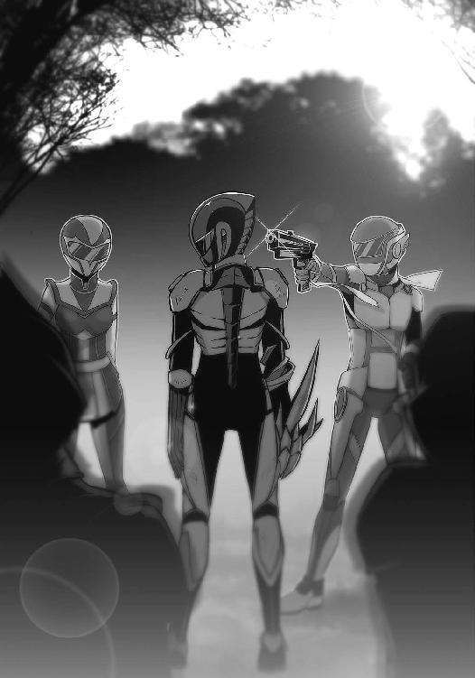
「............」
21号は銃口から顔を背けた。怖かったわけではない。
右側に立っていた〈桜花〉──姫宮桜と目を合わす。
鎧の兜からは感情が読み取れない。けれど、その佇まいには迷いがあった。勝利を目前としながら、彼女はここにいる誰よりも狼狽えていた。
それが妙におかしくて、21号は笑った。
肩を揺らして、いつものように。
「きっきっき」
銃声が森に響き、衝撃が頭部を貫いた。
まるで世界の照明が落ちたかのように、21号の視界は黒く染まった。
13
姫宮桜は、彼の最期から目を逸らせなかった。
幾度となく放たれる【神風】の銃弾。そのたびに自然の静寂は打ち破られ、戦闘員の頭部が爆炎に包まれる。あの不可解な再生能力をもってしても、さすがに頭を破壊されればどうしようもないだろうと桜には思えた。
地に伏した戦闘員の全身から大量の黒い霧が立ち上る。その闇に紛れて、頭部を包む炎だけが灯火のように揺れていた。
「ごめん、みんな」
隼人がぽつりと言った。【神風】が光の粒子となって消えていく。
緋崎は頷くと、〈金剛〉の方に振り返った。
「黄瀬。スフィアは？」
「回収した。おれが持ってる」
「よし。一応、彼の消滅を確認してから基地に帰ろうか。どうした、青葉？」
「別に。なんかもったいないような気がしただけ」
青葉は倒れた戦闘員から顔を背け、言った。
「それにしても、今回は手応えがなかったわね。ほんと最近のアルスマグナはよくわからないわ」
「気を抜くなよ、姉貴。そんなんじゃいつやられるかわからないぞ」
「隼人が言うと説得力あるわね」
「うっさいな！」
いつもの姉弟喧嘩を耳にしながら、それでも桜は、死にゆく戦闘員から目を離せなかった。
胸が締めつけられ、息が苦しい。
それは、戦闘員たちが現れてから、ずっと感じている息苦しさだった。気のせいだと言い聞かせていたけれど、もうごまかしきれない。
悲しかった。
この戦闘員が、守るために戦ったということが。以前自分たちの前に一体だけ残ったときも、そして今日、怪人の前に現れたときも......彼は守るために戦い、そして死んだ。
自分を守って死んだ、両親のように。
彼の頭部を包んでいた炎は、やがてロウソクの火が消えるようにしぼんでいった。黒い霧も次第にその色を薄め──
「再生しています......」
桜は、呆然と呟いた。その目で見たものが信じられなかった。
「え？」
「頭が、治っています」
緋崎たちが振り返り、息を飲むのが伝わってきた。
撃ち抜かれたはずの戦闘員の頭部が、何事もなかったように、そこにあった。
「そんな、噓だろ......うわっ!?」
ぴくりと、彼の指が動いた。隼人が慌てて後ろに下がる。
「ァ......」
戦闘員が掠れた呻き声を上げた。生きている。驚異的な生命力だ。
けれど、地面を引っかき、もがき苦しむ姿は哀れでもあった。
「驚いたな......あれでも死なないのか」
「死なないっていうより、死ねないように見えるわね......これ、いっそのこと死んだほうがマシなんじゃない？」
青葉の呟きに、黄瀬が反応した。
「死ねない、か」
「黄瀬？」
「......覚えているか、前に戦闘員を捕まえたときのことを......」
「戦闘員を？」隼人が驚きの声を上げる。「そんなことがあったんですか？」
緋崎の纏う〈紅蓮〉が頷いた。
「ああ。隼人と姫宮が参加する前だ。戦闘員を捕まえて、アルスマグナのことを調べようとした。けど、あのときは......」
「失敗した。捕獲した戦闘員が、ことごとく自滅したからだ......」
黄瀬の説明に緋崎がはっとする。
桜も驚きを隠せなかった。黄瀬が何を考えているのかわかったからだ。
彼は言った。
「この個体を捕獲しよう......アルスマグナのことを今度こそ調べられるかもしれない」
英雄たちの視線が、再びもがき苦しむ戦闘員に向けられた。
エピローグ
戦闘員22号──ジジは、地下基地のエントランスに立っていた。
無機質な石の壁に囲まれた空間に、あの森から〈転移〉してきた戦闘員たちが集まっている。皆、変身を解除し、黒の制服姿に戻っていた。壁際のカウンターには黒いドレスを着た受付嬢が座っていて、誰かを探すように視線だけを動かしていた。
ジジの隣にはレヴィアタンが座っている。壁にもたれかかり、力尽きたように眠っていた。霧を発生させ森の中へ逃げ込んだ後、彼女は気を失ってしまった。ここに〈転移〉させたのはジジだ。誰かを一緒に〈転移〉させるのは二度目だったが、だんだんコツが掴めてきたように思う。
「ジジさん！」
駆けてきたのは隊長ちゃんだった。声をひそめ、彼女は言った。
「ししょーは......？」
彼が英雄たちに追われていたことは、彼女にも伝えてある。だが、その後どうなったかまではまだ教えていなかった。
「英雄たちに捕まりました」
隊長ちゃんが目を見開き、固まった。けれどすぐに気を持ち直し、真剣な顔つきになる。体こそ小さく、普段は天真爛漫な彼女だが、彼女はやはり隊長だった。
「わかりました。詳しい話は後で。皆さんにはまだ黙っていてください」
「はい」
「ジジ!!」
すると、また別の戦闘員が彼女のもとに走ってきた。
ロクロクだった。
「ニーイチが死んだというのは本当か!?」
「......」
「......」
彼の声はエントランス中に響き渡り、仲間たちの顔が一斉にジジのほうに向いた。
もともと、21号が追われていることを伝えてくれた戦闘員がいる。きっとロクロクもその彼から話を聞いたのだろう。【生存者】たちがジジのところに詰め寄ってきた。
「なあ！ 今の話、本当か!?」
「どうして言ってくれなかったんだ！」
質問を浴びせられ、ジジは壁際に追い詰められた。これだけ騒がしくしても、隣のレヴィアタンは眠ったままだった。
隊長ちゃんを見ると、諦めたような表情をしていた。このまま死んだことにするよりは、事実を告げたほうがいいだろう。そう判断し、ジジは口を開く。
「落ち着いてください。ニーイチは死んでいません」
「な、なんだ。じゃあ、生きているんだな？」
「はい。ですが、英雄たちに捕まりました」
エントランス中の戦闘員が凍りついた。受付の彼女も目を見開き、ジジを凝視している。
「つ......捕まっただって!?」
ロクロクの悲鳴がエントランスに反響する。他の皆も、今にも騒ぎ出しそうな勢いだった。
「落ち着いてください。ニーイチは賭けに勝ちました」
けれどジジは表情を変えず、静かに告げた。
「想定の範囲内です」
あとがき
ようやく二歩目を出せました。
お久しぶりです、和泉弐式です。このたびは『ＶＳ!!２』を手に取っていただき、誠にありがとうございます。かなり間が空いてしまってすみません。
一巻のあとがきで「続きを書きたい」といった熱意を見せておきながら、実は、続刊を出すかどうか真剣に悩みました。前巻のラストを私が気に入っていたことが一番の理由です。21号の進む道は決して明るくありませんし、そんな彼の戦いを未熟者の私に描ききれるかどうかもわかりません。あの続きを書くことが『ＶＳ!!』にとってよいことであるとは限らない......そんな想いは少なからずありました。
それでも二巻を出すことにしたのは、結局のところ、まだ書きたいものがあったからです。したいようにすることにしました。不安はありますが、あとは私にとって、そしてできることなら皆さまにとっても、面白いものを書くことができればと願うばかりです。
さて、二巻では怪人や隊長といった新キャラクターが登場します。当初の設定から多少の変更はありましたが、二人とも、続きを出すなら登場させる気でいたキャラクターです。ただ、打ち合わせで新隊長の設定を話したとき、担当編集の方の食いつきがやけによかったのが印象的でした。どことなく趣味を垣間見たような気がします。気のせいでしょうか？
あの史上最強の怪人は出てきませんが、いなくなった今でも、物語の中心には彼女がいるような気がしています。21号にとってそうであるように、彼女が本作にとってなくてはならない存在であることは間違いありません。彼女と出会った21号が、いかにして正義の味方に立ち向かうのか。本作をどこまで続けるか、続けられるかはわかりませんが、最後まで見守っていただければと思います。
以下、お世話になった方々へ謝辞を。当たり前ではありますが、私一人の力では本は出せません。担当編集の黒崎泰隆さまやイラストレーターの白羽奈尾さま、校閲さまをはじめ、本作に関わってくださった皆さまに、心からお礼申し上げます。
また、事後報告になりますが、二〇一二年六月発売の電撃文庫ＭＡＧＡＺＩＮＥVol.26に短編を掲載させていただきました。一巻の前日譚です。もしお手元にありましたら、お時間のあるときに読んでいただければ幸いです。
それでは、無事に三巻のあとがきでお会いできることを祈っています。
以上。和泉弐式でした。
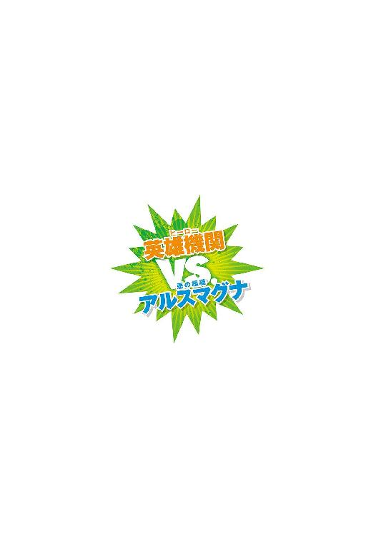
和泉弐式
２月22日生まれの神奈川育ち。
格闘ゲームが好きだが、いわゆる動画勢のザコ。
ストリートファイターⅣの新使用キャラはリュウ。飛ばせて落とせない。
白羽奈尾
２巻！ 本当に待ってました！
最近はまっているのはトマト♪
すももが美味しい季節が来て嬉しいです～
 電撃文庫
電撃文庫
VS!! 2
─史上最悪の怪人─
和泉弐式
発 行 2014年3月13日
発行者 塚田正晃
発行所 株式会社KADOKAWA
〒102-8177 東京都千代田区富士見2-13-3
03-3238-8745（営業）
http://www.kadokawa.co.jp/
プロデュース アスキー・メディアワークス
〒102-8584 東京都千代田区富士見1-8-19
03-5216-8399（編集）
http://dengekibunko.dengeki.com/
本書（電子版）に掲載されているコンテンツ（ソフトウェア／プログラム／データ／情報を含む）の著作権およびその他の権利は、すべて株式会社KADOKAWAおよび正当な権利を有する第三者に帰属しています。
法律の定めがある場合または権利者の明示的な承諾がある場合を除き、これらのコンテンツを複製・転載、改変・編集、翻案・翻訳、放送・出版、公衆送信（送信可能化を含む）・再配信、販売・頒布、貸与等に使用することはできません。
(C)2012 NISHIKI IZUMI
※この電子書籍は2012年8月10日発行の電撃文庫『VS!! 2 ─史上最悪の怪人─』初版に基づき制作